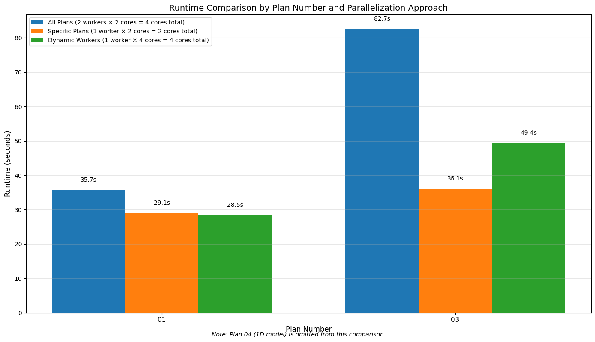

Parallel Execution¶
# =============================================================================
# DEVELOPMENT MODE TOGGLE
# =============================================================================
USE_LOCAL_SOURCE = False # <-- TOGGLE THIS
if USE_LOCAL_SOURCE:
import sys
from pathlib import Path
local_path = str(Path.cwd().parent)
if local_path not in sys.path:
sys.path.insert(0, local_path)
print(f"📁 LOCAL SOURCE MODE: Loading from {local_path}/ras_commander")
else:
print("📦 PIP PACKAGE MODE: Loading installed ras-commander")
# Import ras-commander
from ras_commander import RasCmdr, RasExamples, RasPrj, init_ras_project, ras
# Additional imports
import numpy as np
import pandas as pd
from IPython import display
import matplotlib.pyplot as plt
import psutil # For getting system CPU info
from concurrent.futures import ThreadPoolExecutor, as_completed
import time
import subprocess
import shutil
import math # Import math to avoid NameError in get_optimal_worker_count function
# Verify which version loaded
import ras_commander
print(f"✓ Loaded: {ras_commander.__file__}")
📦 PIP PACKAGE MODE: Loading installed ras-commander
✓ Loaded: c:\Users\billk_clb\anaconda3\envs\rascmdr_piptest\Lib\site-packages\ras_commander\__init__.py
Prerequisites¶
Before running this notebook, ensure you have:
- ras-commander installed:
pip install ras-commander - Python 3.10+: Check with
python --version - HEC-RAS 6.3+: REQUIRED for plan execution
- Disk Space: ~5 GB (multiple worker folders + results)
- CPU Cores: 2+ recommended for efficient parallelization (since core scaling is nonlinear)
What You'll Learn¶
This notebook demonstrates parallel plan execution using RasCmdr.compute_parallel():
- Worker Folders: How ras-commander creates isolated execution environments
- Concurrent Execution: Run multiple plans simultaneously
- Dynamic Worker Allocation: Automatically scale to available CPU cores
- Performance Comparison: Measure speedup vs sequential execution
Related Notebooks¶
- 110_single_plan_execution.ipynb - Single plan fundamentals
- 111_executing_plan_sets.ipynb - Sequential plan sets
- 112_sequential_plan_execution.ipynb - Test mode for debugging
- 102_multiple_project_operations.ipynb - Parallel across different projects
Key Concept: Worker Folder Pattern¶
compute_parallel() creates separate worker folders for each plan:
project_folder/
[project_name] [AllWorkers]/
worker_01/ # Plan 01 executes here
project_files...
results.p01.hdf
worker_02/ # Plan 02 executes here
project_files...
results.p02.hdf
worker_03/ # Plan 03 executes here
...
Why separate folders? - Isolation: Plans don't interfere with each other - Concurrent Access: Each HEC-RAS instance has its own files - Result Organization: Easy to identify which plan produced which output
Performance Expectations¶
Sequential: Plans run one after another - Total time = sum of all plan execution times
Parallel: Plans run simultaneously - Total time ≈ longest single plan execution time - Speedup = number of plans (if enough cores)
Example: 4 plans, each taking 10 minutes - Sequential: 40 minutes total - Parallel (4+ cores): ~10-12 minutes total
Parameters¶
Configure these values to customize the notebook for your project.
# =============================================================================
# PARAMETERS - Edit these to customize the notebook
# =============================================================================
from pathlib import Path
# Project Configuration
PROJECT_NAME = "BaldEagleCrkMulti2D" # Example project to extract
RAS_VERSION = "6.6" # HEC-RAS version (6.3, 6.5, 6.6, etc.)
# Execution Settings
PLAN = ["06", "15", "17", "19"] # Plan number to execute
NUM_CORES = 2 # CPU cores for 2D computation
RUN_SUFFIX = "run" # Suffix for run folder (e.g., Muncie_run)
Setting Up Our Working Environment¶
Let's set up our working directory and check the system resources available for parallel execution. This will help us make informed decisions about how many workers to use.
For this notebook we will be using the "Muncie" HEC Example Project
Understanding Parallel Execution in HEC-RAS¶
HEC-RAS simulations can be computationally intensive, especially for large models or long simulation periods. Parallel execution allows you to run multiple plans simultaneously, making better use of your computer's processing power.
Key Concepts in Parallel Execution¶
-
Workers: Each worker is a separate process that can execute a HEC-RAS plan. The
max_workersparameter determines how many plans can be executed simultaneously. -
Cores per Worker: Each worker (HEC-RAS instance) can utilize multiple CPU cores. The
num_coresparameter sets how many cores each worker uses. -
Resource Balancing: Effective parallel execution requires balancing the number of workers with the cores per worker. Too many workers or too many cores per worker can lead to resource contention and slower overall performance.
-
Worker Folders: Each worker gets its own folder with a copy of the project, allowing for isolated execution.
Parallel vs. Sequential Execution¶
- Parallel: Multiple plans run simultaneously (good for independent plans, faster overall completion)
- Sequential: Plans run one after another (good for dependent plans, consistent resource usage)
Optimal Configuration¶
The optimal configuration depends on your hardware and the specific plans you're running:
- For most models, 2-4 cores per worker provides good performance
- Set
max_workersbased on available physical cores:max_workers = floor(physical_cores / cores_per_worker) - Ensure you have enough memory: each worker typically needs 2-4 GB of RAM
Now, let's download and extract our example project.
Downloading and Extracting Example HEC-RAS Project¶
Let's use the RasExamples class to download and extract the "Balde Eagle Creek" example project.
# Extract the Muncie example project
from ras_commander import RasExamples
muncie_path = RasExamples.extract_project(PROJECT_NAME, suffix="08")
print(f"Extracted project to: {muncie_path}")
# Define compute folders for different parallel execution approaches
examples_dir = muncie_path.parent
compute_folder = examples_dir / "compute_test_parallel"
specific_compute_folder = examples_dir / "compute_test_parallel_specific"
dynamic_compute_folder = examples_dir / "compute_test_parallel_dynamic"
print(f"\nCompute folders:")
print(f" All plans: {compute_folder}")
print(f" Specific plans: {specific_compute_folder}")
print(f" Dynamic workers: {dynamic_compute_folder}")
# Get system resource information for parallel execution planning
physical_cores = psutil.cpu_count(logical=False)
logical_cores = psutil.cpu_count(logical=True)
print(f"\nSystem Resources:")
print(f" Physical cores: {physical_cores}")
print(f" Logical cores: {logical_cores}")
# Helper function to calculate optimal worker count
def get_optimal_worker_count(cores_per_worker):
"""Calculate optimal number of workers based on physical cores and cores per worker."""
return max(1, int(physical_cores / cores_per_worker))
2026-01-13 10:29:43 - ras_commander.RasExamples - INFO - Found zip file: C:\Users\billk_clb\anaconda3\envs\rascmdr_piptest\Lib\site-packages\examples\Example_Projects_6_6.zip
2026-01-13 10:29:43 - ras_commander.RasExamples - INFO - Loading project data from CSV...
2026-01-13 10:29:43 - ras_commander.RasExamples - INFO - Loaded 68 projects from CSV.
2026-01-13 10:29:43 - ras_commander.RasExamples - INFO - ----- RasExamples Extracting Project -----
2026-01-13 10:29:43 - ras_commander.RasExamples - INFO - Extracting project 'BaldEagleCrkMulti2D' as 'BaldEagleCrkMulti2D_08'
2026-01-13 10:29:43 - ras_commander.RasExamples - INFO - Folder 'BaldEagleCrkMulti2D_08' already exists. Deleting existing folder...
2026-01-13 10:29:43 - ras_commander.RasExamples - INFO - Existing folder 'BaldEagleCrkMulti2D_08' has been deleted.
2026-01-13 10:29:44 - ras_commander.RasExamples - INFO - Successfully extracted project 'BaldEagleCrkMulti2D' to C:\Users\billk_clb\anaconda3\envs\rascmdr_piptest\Lib\site-packages\examples\example_projects\BaldEagleCrkMulti2D_08
Extracted project to: C:\Users\billk_clb\anaconda3\envs\rascmdr_piptest\Lib\site-packages\examples\example_projects\BaldEagleCrkMulti2D_08
Compute folders:
All plans: C:\Users\billk_clb\anaconda3\envs\rascmdr_piptest\Lib\site-packages\examples\example_projects\compute_test_parallel
Specific plans: C:\Users\billk_clb\anaconda3\envs\rascmdr_piptest\Lib\site-packages\examples\example_projects\compute_test_parallel_specific
Dynamic workers: C:\Users\billk_clb\anaconda3\envs\rascmdr_piptest\Lib\site-packages\examples\example_projects\compute_test_parallel_dynamic
System Resources:
Physical cores: 8
Logical cores: 8
Step 1: Project Initialization¶
Let's initialize the HEC-RAS project using the init_ras_project() function. We'll store the initialized object in a variable to use later, rather than relying on the global ras object. This approach is more suitable for working with multiple projects or compute folders.
# Initialize the source project
source_project = init_ras_project(muncie_path, RAS_VERSION)
print(f"Initialized source project: {source_project.project_name}")
# Display the current plan files in the project
print("\nAvailable plans in the project:")
display.display(source_project.plan_df)
# Check how many plans we have
plan_count = len(source_project.plan_df)
print(f"Found {plan_count} plans in the project")
2026-01-13 10:29:44 - ras_commander.RasMap - INFO - Successfully parsed RASMapper file: C:\Users\billk_clb\anaconda3\envs\rascmdr_piptest\Lib\site-packages\examples\example_projects\BaldEagleCrkMulti2D_08\BaldEagleDamBrk.rasmap
2026-01-13 10:29:44 - ras_commander.RasPrj - INFO - Updated results_df with 11 plan(s)
Initialized source project: BaldEagleDamBrk
Available plans in the project:
| plan_number | unsteady_number | geometry_number | Plan Title | Program Version | Short Identifier | Simulation Date | Computation Interval | Mapping Interval | Run HTab | ... | Friction Slope Method | UNET D2 SolverType | UNET D2 Name | HDF_Results_Path | Geom File | Geom Path | Flow File | Flow Path | full_path | flow_type | |
|---|---|---|---|---|---|---|---|---|---|---|---|---|---|---|---|---|---|---|---|---|---|
| 0 | 13 | 07 | 06 | PMF with Multi 2D Areas | 5.10 | PMF Multi 2D | 01JAN1999,1200,04JAN1999,1200 | 30SEC | 30MIN | 1 | ... | 1 | Pardiso (Direct) | 193 | None | 06 | C:\Users\billk_clb\anaconda3\envs\rascmdr_pipt... | 07 | C:\Users\billk_clb\anaconda3\envs\rascmdr_pipt... | C:\Users\billk_clb\anaconda3\envs\rascmdr_pipt... | Unsteady |
| 1 | 15 | 12 | 08 | 1d-2D Dambreak Refined Grid | 5.10 | 1D-2D Refined Grid | 01JAN1999,1200,04JAN1999,1200 | 20SEC | 5MIN | 1 | ... | 1 | NaN | BaldEagleCr | None | 08 | C:\Users\billk_clb\anaconda3\envs\rascmdr_pipt... | 12 | C:\Users\billk_clb\anaconda3\envs\rascmdr_pipt... | C:\Users\billk_clb\anaconda3\envs\rascmdr_pipt... | Unsteady |
| 2 | 17 | 09 | 10 | 2D to 1D No Dam | 5.00 | 2D to 1D No Dam | 01JAN1999,1200,06JAN1999,1200 | 1MIN | 5MIN | 1 | ... | 1 | NaN | Upstream2D | None | 10 | C:\Users\billk_clb\anaconda3\envs\rascmdr_pipt... | 09 | C:\Users\billk_clb\anaconda3\envs\rascmdr_pipt... | C:\Users\billk_clb\anaconda3\envs\rascmdr_pipt... | Unsteady |
| 3 | 18 | 10 | 11 | 2D to 2D Run | 5.00 | 2D to 2D Run | 01JAN1999,1200,04JAN1999,1200 | 20SEC | 5MIN | 1 | ... | 1 | NaN | BaldEagleCr | None | 11 | C:\Users\billk_clb\anaconda3\envs\rascmdr_pipt... | 10 | C:\Users\billk_clb\anaconda3\envs\rascmdr_pipt... | C:\Users\billk_clb\anaconda3\envs\rascmdr_pipt... | Unsteady |
| 4 | 19 | 11 | 12 | SA to 2D Dam Break Run | 5.00 | SA to 2D Dam Break | 01JAN1999,1200,04JAN1999,1200 | 20SEC | 10MIN | 1 | ... | 1 | NaN | BaldEagleCr | None | 12 | C:\Users\billk_clb\anaconda3\envs\rascmdr_pipt... | 11 | C:\Users\billk_clb\anaconda3\envs\rascmdr_pipt... | C:\Users\billk_clb\anaconda3\envs\rascmdr_pipt... | Unsteady |
| 5 | 03 | 13 | 09 | Single 2D Area - Internal Dam Structure | 5.04 | Single 2D | 01JAN1999,1200,04JAN1999,1200 | 30SEC | 10MIN | 1 | ... | 1 | NaN | BaldEagleCr | None | 09 | C:\Users\billk_clb\anaconda3\envs\rascmdr_pipt... | 13 | C:\Users\billk_clb\anaconda3\envs\rascmdr_pipt... | C:\Users\billk_clb\anaconda3\envs\rascmdr_pipt... | Unsteady |
| 6 | 04 | 01 | 13 | SA to 2D Area Conn - 2D Levee Structure | 5.00 | 2D Levee Struc | 01JAN1999,1200,04JAN1999,1200 | 20SEC | 5MIN | 1 | ... | 1 | NaN | BaldEagleCr | None | 13 | C:\Users\billk_clb\anaconda3\envs\rascmdr_pipt... | 01 | C:\Users\billk_clb\anaconda3\envs\rascmdr_pipt... | C:\Users\billk_clb\anaconda3\envs\rascmdr_pipt... | Unsteady |
| 7 | 02 | 01 | 01 | SA to Detailed 2D Breach | 5.10 | SA-2D Det Brch | 01JAN1999,1200,04JAN1999,1200 | 10SEC | 5MIN | 1 | ... | 1 | Pardiso (Direct) | BaldEagleCr | None | 01 | C:\Users\billk_clb\anaconda3\envs\rascmdr_pipt... | 01 | C:\Users\billk_clb\anaconda3\envs\rascmdr_pipt... | C:\Users\billk_clb\anaconda3\envs\rascmdr_pipt... | Unsteady |
| 8 | 01 | 01 | 01 | SA to Detailed 2D Breach FEQ | 5.03 | SA-2D Det FEQ | 01JAN1999,1200,04JAN1999,1200 | 5SEC | 5MIN | 1 | ... | 1 | NaN | BaldEagleCr | None | 01 | C:\Users\billk_clb\anaconda3\envs\rascmdr_pipt... | 01 | C:\Users\billk_clb\anaconda3\envs\rascmdr_pipt... | C:\Users\billk_clb\anaconda3\envs\rascmdr_pipt... | Unsteady |
| 9 | 05 | 02 | 03 | Single 2D area with Bridges FEQ | 5.10 | Single 2D Bridges FEQ | 01JAN1999,1200,04JAN1999,1200 | 5SEC | 10MIN | -1 | ... | 1 | PARDISO (Direct) | BaldEagleCr | None | 03 | C:\Users\billk_clb\anaconda3\envs\rascmdr_pipt... | 02 | C:\Users\billk_clb\anaconda3\envs\rascmdr_pipt... | C:\Users\billk_clb\anaconda3\envs\rascmdr_pipt... | Unsteady |
| 10 | 06 | 03 | 09 | Gridded Precip - Infiltration | 6.00 | Grid Precip Infiltration | 09SEP2018,0000,14SEP2018,0000 | 20SEC | 10MIN | -1 | ... | 1 | Pardiso (Direct) | BaldEagleCr | None | 09 | C:\Users\billk_clb\anaconda3\envs\rascmdr_pipt... | 03 | C:\Users\billk_clb\anaconda3\envs\rascmdr_pipt... | C:\Users\billk_clb\anaconda3\envs\rascmdr_pipt... | Unsteady |
11 rows × 30 columns
Found 11 plans in the project
Understanding the RasCmdr.compute_parallel Method¶
Before we start executing plans in parallel, let's understand the compute_parallel() method from the RasCmdr class.
Key Parameters¶
plan_number(Union[str, List[str], None]): Plan number(s) to compute. If None, all plans are computed.max_workers(int): Maximum number of parallel workers (default: 2).num_cores(int): Number of cores to use per plan computation (default: 2).clear_geompre(bool): Whether to clear geometry preprocessor files (default: False).ras_object(Optional[RasPrj]): Specific RAS object to use. If None, uses global ras instance.dest_folder(Union[str, Path, None]): Destination folder for computed results.overwrite_dest(bool): Whether to overwrite existing destination folder (default: False).
Return Value¶
Dict[str, bool]: Dictionary of plan numbers and their execution success status.
Key Concepts¶
-
Worker Assignment: Plans are assigned to workers in a round-robin fashion. For example, with 3 workers and 5 plans, workers would be assigned as follows: Worker 1: Plans 1 & 4, Worker 2: Plans 2 & 5, Worker 3: Plan 3.
-
Worker Folders: Each worker gets its own folder (a subdirectory of the destination folder) for isolated execution.
-
Result Consolidation: After all plans are executed, results are consolidated into the destination folder.
-
Resource Management: Each worker can use multiple cores as specified by
num_cores.
Now, let's see how this works in practice.
Step 2: Parallel Execution of All Plans¶
Let's execute all plans in the project in parallel. We'll use 3 workers, with 2 cores per worker. This approach is good when you have multiple plans that are independent of each other and you want to complete them as quickly as possible.
print("Executing all plans in parallel...")
print("This may take several minutes...")
# Create compute folder if it doesn't exist
compute_folder.mkdir(parents=True, exist_ok=True)
# Define the parameters for parallel execution
max_workers = 4
cores_per_worker = 1
print(f"Using {max_workers} parallel workers, each with {cores_per_worker} cores")
print(f"Destination folder: {compute_folder}")
# Record start time for performance measurement
start_time = time.time()
# Execute all plans in parallel
results_all = RasCmdr.compute_parallel(
max_workers=max_workers,
num_cores=cores_per_worker,
dest_folder=compute_folder,
overwrite_dest=True,
ras_object=source_project
)
# Record end time and calculate duration
end_time = time.time()
total_duration = end_time - start_time
print(f"Parallel execution of all plans completed in {total_duration:.2f} seconds")
# Create a DataFrame from the execution results for better visualization
results_df = pd.DataFrame([
{"Plan": plan, "Success": success}
for plan, success in results_all.items()
])
# Sort by plan number
results_df = results_df.sort_values("Plan")
# Display the results
print("\nExecution Results:")
display.display(results_df)
2026-01-13 10:29:44 - ras_commander.RasCmdr - INFO - Destination folder 'C:\Users\billk_clb\anaconda3\envs\rascmdr_piptest\Lib\site-packages\examples\example_projects\compute_test_parallel' exists. Overwriting as per overwrite_dest=True.
Executing all plans in parallel...
This may take several minutes...
Using 4 parallel workers, each with 1 cores
Destination folder: C:\Users\billk_clb\anaconda3\envs\rascmdr_piptest\Lib\site-packages\examples\example_projects\compute_test_parallel
2026-01-13 10:29:44 - ras_commander.RasCmdr - INFO - Copied project folder to destination: C:\Users\billk_clb\anaconda3\envs\rascmdr_piptest\Lib\site-packages\examples\example_projects\compute_test_parallel
2026-01-13 10:29:44 - ras_commander.RasCmdr - INFO - Adjusted max_workers to 4 based on the number of plans to compute: 11
2026-01-13 10:29:44 - ras_commander.RasCmdr - INFO - Removed existing worker folder: C:\Users\billk_clb\anaconda3\envs\rascmdr_piptest\Lib\site-packages\examples\example_projects\compute_test_parallel [Worker 1]
2026-01-13 10:29:45 - ras_commander.RasCmdr - INFO - Created worker folder: C:\Users\billk_clb\anaconda3\envs\rascmdr_piptest\Lib\site-packages\examples\example_projects\compute_test_parallel [Worker 1]
2026-01-13 10:29:45 - ras_commander.RasMap - INFO - Successfully parsed RASMapper file: C:\Users\billk_clb\anaconda3\envs\rascmdr_piptest\Lib\site-packages\examples\example_projects\compute_test_parallel [Worker 1]\BaldEagleDamBrk.rasmap
2026-01-13 10:29:45 - ras_commander.RasPrj - INFO - Updated results_df with 11 plan(s)
2026-01-13 10:29:45 - ras_commander.RasCmdr - INFO - Removed existing worker folder: C:\Users\billk_clb\anaconda3\envs\rascmdr_piptest\Lib\site-packages\examples\example_projects\compute_test_parallel [Worker 2]
2026-01-13 10:29:45 - ras_commander.RasCmdr - INFO - Created worker folder: C:\Users\billk_clb\anaconda3\envs\rascmdr_piptest\Lib\site-packages\examples\example_projects\compute_test_parallel [Worker 2]
2026-01-13 10:29:45 - ras_commander.RasMap - INFO - Successfully parsed RASMapper file: C:\Users\billk_clb\anaconda3\envs\rascmdr_piptest\Lib\site-packages\examples\example_projects\compute_test_parallel [Worker 2]\BaldEagleDamBrk.rasmap
2026-01-13 10:29:45 - ras_commander.RasPrj - INFO - Updated results_df with 11 plan(s)
2026-01-13 10:29:45 - ras_commander.RasCmdr - INFO - Removed existing worker folder: C:\Users\billk_clb\anaconda3\envs\rascmdr_piptest\Lib\site-packages\examples\example_projects\compute_test_parallel [Worker 3]
2026-01-13 10:29:45 - ras_commander.RasCmdr - INFO - Created worker folder: C:\Users\billk_clb\anaconda3\envs\rascmdr_piptest\Lib\site-packages\examples\example_projects\compute_test_parallel [Worker 3]
2026-01-13 10:29:45 - ras_commander.RasMap - INFO - Successfully parsed RASMapper file: C:\Users\billk_clb\anaconda3\envs\rascmdr_piptest\Lib\site-packages\examples\example_projects\compute_test_parallel [Worker 3]\BaldEagleDamBrk.rasmap
2026-01-13 10:29:45 - ras_commander.RasPrj - INFO - Updated results_df with 11 plan(s)
2026-01-13 10:29:45 - ras_commander.RasCmdr - INFO - Removed existing worker folder: C:\Users\billk_clb\anaconda3\envs\rascmdr_piptest\Lib\site-packages\examples\example_projects\compute_test_parallel [Worker 4]
2026-01-13 10:29:46 - ras_commander.RasCmdr - INFO - Created worker folder: C:\Users\billk_clb\anaconda3\envs\rascmdr_piptest\Lib\site-packages\examples\example_projects\compute_test_parallel [Worker 4]
2026-01-13 10:29:46 - ras_commander.RasMap - INFO - Successfully parsed RASMapper file: C:\Users\billk_clb\anaconda3\envs\rascmdr_piptest\Lib\site-packages\examples\example_projects\compute_test_parallel [Worker 4]\BaldEagleDamBrk.rasmap
2026-01-13 10:29:46 - ras_commander.RasPrj - INFO - Updated results_df with 11 plan(s)
2026-01-13 10:29:46 - ras_commander.RasCmdr - INFO - Using ras_object with project folder: C:\Users\billk_clb\anaconda3\envs\rascmdr_piptest\Lib\site-packages\examples\example_projects\compute_test_parallel [Worker 1]
2026-01-13 10:29:46 - ras_commander.RasCmdr - INFO - Using ras_object with project folder: C:\Users\billk_clb\anaconda3\envs\rascmdr_piptest\Lib\site-packages\examples\example_projects\compute_test_parallel [Worker 2]
2026-01-13 10:29:46 - ras_commander.RasCmdr - INFO - Using ras_object with project folder: C:\Users\billk_clb\anaconda3\envs\rascmdr_piptest\Lib\site-packages\examples\example_projects\compute_test_parallel [Worker 3]
2026-01-13 10:29:46 - ras_commander.RasCmdr - INFO - Using ras_object with project folder: C:\Users\billk_clb\anaconda3\envs\rascmdr_piptest\Lib\site-packages\examples\example_projects\compute_test_parallel [Worker 4]
2026-01-13 10:29:46 - ras_commander.RasUtils - INFO - Using provided plan file path: C:\Users\billk_clb\anaconda3\envs\rascmdr_piptest\Lib\site-packages\examples\example_projects\compute_test_parallel [Worker 1]\BaldEagleDamBrk.p13
2026-01-13 10:29:46 - ras_commander.RasUtils - INFO - Using provided plan file path: C:\Users\billk_clb\anaconda3\envs\rascmdr_piptest\Lib\site-packages\examples\example_projects\compute_test_parallel [Worker 2]\BaldEagleDamBrk.p15
2026-01-13 10:29:46 - ras_commander.RasUtils - INFO - Using provided plan file path: C:\Users\billk_clb\anaconda3\envs\rascmdr_piptest\Lib\site-packages\examples\example_projects\compute_test_parallel [Worker 4]\BaldEagleDamBrk.p18
2026-01-13 10:29:46 - ras_commander.RasUtils - INFO - Successfully updated file: C:\Users\billk_clb\anaconda3\envs\rascmdr_piptest\Lib\site-packages\examples\example_projects\compute_test_parallel [Worker 1]\BaldEagleDamBrk.p13
2026-01-13 10:29:46 - ras_commander.RasUtils - INFO - Using provided plan file path: C:\Users\billk_clb\anaconda3\envs\rascmdr_piptest\Lib\site-packages\examples\example_projects\compute_test_parallel [Worker 3]\BaldEagleDamBrk.p17
2026-01-13 10:29:46 - ras_commander.RasUtils - INFO - Successfully updated file: C:\Users\billk_clb\anaconda3\envs\rascmdr_piptest\Lib\site-packages\examples\example_projects\compute_test_parallel [Worker 4]\BaldEagleDamBrk.p18
2026-01-13 10:29:46 - ras_commander.RasUtils - INFO - Successfully updated file: C:\Users\billk_clb\anaconda3\envs\rascmdr_piptest\Lib\site-packages\examples\example_projects\compute_test_parallel [Worker 2]\BaldEagleDamBrk.p15
2026-01-13 10:29:46 - ras_commander.RasUtils - INFO - Successfully updated file: C:\Users\billk_clb\anaconda3\envs\rascmdr_piptest\Lib\site-packages\examples\example_projects\compute_test_parallel [Worker 3]\BaldEagleDamBrk.p17
2026-01-13 10:29:46 - ras_commander.RasCmdr - INFO - Set number of cores to 1 for plan: 13
2026-01-13 10:29:46 - ras_commander.RasCmdr - INFO - Running HEC-RAS from the Command Line:
2026-01-13 10:29:46 - ras_commander.RasCmdr - INFO - Running command: "C:\Program Files (x86)\HEC\HEC-RAS\6.6\Ras.exe" -c "C:\Users\billk_clb\anaconda3\envs\rascmdr_piptest\Lib\site-packages\examples\example_projects\compute_test_parallel [Worker 1]\BaldEagleDamBrk.prj" "C:\Users\billk_clb\anaconda3\envs\rascmdr_piptest\Lib\site-packages\examples\example_projects\compute_test_parallel [Worker 1]\BaldEagleDamBrk.p13"
2026-01-13 10:29:46 - ras_commander.RasCmdr - INFO - Set number of cores to 1 for plan: 18
2026-01-13 10:29:46 - ras_commander.RasCmdr - INFO - Running HEC-RAS from the Command Line:
2026-01-13 10:29:46 - ras_commander.RasCmdr - INFO - Running command: "C:\Program Files (x86)\HEC\HEC-RAS\6.6\Ras.exe" -c "C:\Users\billk_clb\anaconda3\envs\rascmdr_piptest\Lib\site-packages\examples\example_projects\compute_test_parallel [Worker 4]\BaldEagleDamBrk.prj" "C:\Users\billk_clb\anaconda3\envs\rascmdr_piptest\Lib\site-packages\examples\example_projects\compute_test_parallel [Worker 4]\BaldEagleDamBrk.p18"
2026-01-13 10:29:46 - ras_commander.RasCmdr - INFO - Set number of cores to 1 for plan: 15
2026-01-13 10:29:46 - ras_commander.RasCmdr - INFO - Running HEC-RAS from the Command Line:
2026-01-13 10:29:46 - ras_commander.RasCmdr - INFO - Running command: "C:\Program Files (x86)\HEC\HEC-RAS\6.6\Ras.exe" -c "C:\Users\billk_clb\anaconda3\envs\rascmdr_piptest\Lib\site-packages\examples\example_projects\compute_test_parallel [Worker 2]\BaldEagleDamBrk.prj" "C:\Users\billk_clb\anaconda3\envs\rascmdr_piptest\Lib\site-packages\examples\example_projects\compute_test_parallel [Worker 2]\BaldEagleDamBrk.p15"
2026-01-13 10:29:46 - ras_commander.RasCmdr - INFO - Set number of cores to 1 for plan: 17
2026-01-13 10:29:46 - ras_commander.RasCmdr - INFO - Running HEC-RAS from the Command Line:
2026-01-13 10:29:46 - ras_commander.RasCmdr - INFO - Running command: "C:\Program Files (x86)\HEC\HEC-RAS\6.6\Ras.exe" -c "C:\Users\billk_clb\anaconda3\envs\rascmdr_piptest\Lib\site-packages\examples\example_projects\compute_test_parallel [Worker 3]\BaldEagleDamBrk.prj" "C:\Users\billk_clb\anaconda3\envs\rascmdr_piptest\Lib\site-packages\examples\example_projects\compute_test_parallel [Worker 3]\BaldEagleDamBrk.p17"
2026-01-13 10:31:22 - ras_commander.RasCmdr - INFO - HEC-RAS execution completed for plan: 18
2026-01-13 10:31:22 - ras_commander.RasCmdr - INFO - Total run time for plan 18: 95.88 seconds
2026-01-13 10:31:22 - ras_commander.hdf.HdfResultsPlan - INFO - Using existing Path object HDF file: C:\Users\billk_clb\anaconda3\envs\rascmdr_piptest\Lib\site-packages\examples\example_projects\compute_test_parallel [Worker 4]\BaldEagleDamBrk.p18.hdf
2026-01-13 10:31:22 - ras_commander.hdf.HdfResultsPlan - INFO - Final validated file path: C:\Users\billk_clb\anaconda3\envs\rascmdr_piptest\Lib\site-packages\examples\example_projects\compute_test_parallel [Worker 4]\BaldEagleDamBrk.p18.hdf
2026-01-13 10:31:22 - ras_commander.hdf.HdfResultsPlan - INFO - Reading computation messages from HDF: BaldEagleDamBrk.p18.hdf
2026-01-13 10:31:22 - ras_commander.hdf.HdfResultsPlan - INFO - Successfully extracted 1494 characters from HDF
2026-01-13 10:31:22 - ras_commander.hdf.HdfResultsPlan - INFO - Using existing Path object HDF file: C:\Users\billk_clb\anaconda3\envs\rascmdr_piptest\Lib\site-packages\examples\example_projects\compute_test_parallel [Worker 4]\BaldEagleDamBrk.p18.hdf
2026-01-13 10:31:22 - ras_commander.hdf.HdfResultsPlan - INFO - Final validated file path: C:\Users\billk_clb\anaconda3\envs\rascmdr_piptest\Lib\site-packages\examples\example_projects\compute_test_parallel [Worker 4]\BaldEagleDamBrk.p18.hdf
2026-01-13 10:31:22 - ras_commander.hdf.HdfResultsPlan - INFO - Extracting Plan Information from: BaldEagleDamBrk.p18.hdf
2026-01-13 10:31:22 - ras_commander.hdf.HdfResultsPlan - INFO - Plan Name: 2D to 2D Run
2026-01-13 10:31:22 - ras_commander.hdf.HdfResultsPlan - INFO - Simulation Duration (hours): 72.0
2026-01-13 10:31:22 - ras_commander.hdf.HdfResultsPlan - INFO - Using existing Path object HDF file: C:\Users\billk_clb\anaconda3\envs\rascmdr_piptest\Lib\site-packages\examples\example_projects\compute_test_parallel [Worker 4]\BaldEagleDamBrk.p18.hdf
2026-01-13 10:31:22 - ras_commander.hdf.HdfResultsPlan - INFO - Final validated file path: C:\Users\billk_clb\anaconda3\envs\rascmdr_piptest\Lib\site-packages\examples\example_projects\compute_test_parallel [Worker 4]\BaldEagleDamBrk.p18.hdf
c:\Users\billk_clb\anaconda3\envs\rascmdr_piptest\Lib\site-packages\ras_commander\RasPrj.py:1514: FutureWarning: The behavior of DataFrame concatenation with empty or all-NA entries is deprecated. In a future version, this will no longer exclude empty or all-NA columns when determining the result dtypes. To retain the old behavior, exclude the relevant entries before the concat operation.
self.results_df = pd.concat([self.results_df, new_results], ignore_index=True)
2026-01-13 10:31:22 - ras_commander.RasPrj - INFO - Updated results_df with 1 plan(s)
2026-01-13 10:31:22 - ras_commander.RasCmdr - INFO - Using ras_object with project folder: C:\Users\billk_clb\anaconda3\envs\rascmdr_piptest\Lib\site-packages\examples\example_projects\compute_test_parallel [Worker 1]
2026-01-13 10:31:22 - ras_commander.RasCmdr - INFO - Plan 13 executed in worker 1: Successful
2026-01-13 10:31:22 - ras_commander.RasUtils - INFO - Using provided plan file path: C:\Users\billk_clb\anaconda3\envs\rascmdr_piptest\Lib\site-packages\examples\example_projects\compute_test_parallel [Worker 1]\BaldEagleDamBrk.p19
2026-01-13 10:31:22 - ras_commander.RasUtils - INFO - Successfully updated file: C:\Users\billk_clb\anaconda3\envs\rascmdr_piptest\Lib\site-packages\examples\example_projects\compute_test_parallel [Worker 1]\BaldEagleDamBrk.p19
2026-01-13 10:31:22 - ras_commander.RasCmdr - INFO - Set number of cores to 1 for plan: 19
2026-01-13 10:31:22 - ras_commander.RasCmdr - INFO - Running HEC-RAS from the Command Line:
2026-01-13 10:31:22 - ras_commander.RasCmdr - INFO - Running command: "C:\Program Files (x86)\HEC\HEC-RAS\6.6\Ras.exe" -c "C:\Users\billk_clb\anaconda3\envs\rascmdr_piptest\Lib\site-packages\examples\example_projects\compute_test_parallel [Worker 1]\BaldEagleDamBrk.prj" "C:\Users\billk_clb\anaconda3\envs\rascmdr_piptest\Lib\site-packages\examples\example_projects\compute_test_parallel [Worker 1]\BaldEagleDamBrk.p19"
2026-01-13 10:32:29 - ras_commander.RasCmdr - INFO - HEC-RAS execution completed for plan: 19
2026-01-13 10:32:29 - ras_commander.RasCmdr - INFO - Total run time for plan 19: 67.14 seconds
2026-01-13 10:32:29 - ras_commander.hdf.HdfResultsPlan - INFO - Using existing Path object HDF file: C:\Users\billk_clb\anaconda3\envs\rascmdr_piptest\Lib\site-packages\examples\example_projects\compute_test_parallel [Worker 1]\BaldEagleDamBrk.p19.hdf
2026-01-13 10:32:29 - ras_commander.hdf.HdfResultsPlan - INFO - Final validated file path: C:\Users\billk_clb\anaconda3\envs\rascmdr_piptest\Lib\site-packages\examples\example_projects\compute_test_parallel [Worker 1]\BaldEagleDamBrk.p19.hdf
2026-01-13 10:32:29 - ras_commander.hdf.HdfResultsPlan - INFO - Reading computation messages from HDF: BaldEagleDamBrk.p19.hdf
2026-01-13 10:32:29 - ras_commander.hdf.HdfResultsPlan - INFO - Successfully extracted 1694 characters from HDF
2026-01-13 10:32:29 - ras_commander.hdf.HdfResultsPlan - INFO - Using existing Path object HDF file: C:\Users\billk_clb\anaconda3\envs\rascmdr_piptest\Lib\site-packages\examples\example_projects\compute_test_parallel [Worker 1]\BaldEagleDamBrk.p19.hdf
2026-01-13 10:32:29 - ras_commander.hdf.HdfResultsPlan - INFO - Final validated file path: C:\Users\billk_clb\anaconda3\envs\rascmdr_piptest\Lib\site-packages\examples\example_projects\compute_test_parallel [Worker 1]\BaldEagleDamBrk.p19.hdf
2026-01-13 10:32:29 - ras_commander.hdf.HdfResultsPlan - INFO - Extracting Plan Information from: BaldEagleDamBrk.p19.hdf
2026-01-13 10:32:29 - ras_commander.hdf.HdfResultsPlan - INFO - Plan Name: SA to 2D Dam Break Run
2026-01-13 10:32:29 - ras_commander.hdf.HdfResultsPlan - INFO - Simulation Duration (hours): 72.0
2026-01-13 10:32:29 - ras_commander.hdf.HdfResultsPlan - INFO - Using existing Path object HDF file: C:\Users\billk_clb\anaconda3\envs\rascmdr_piptest\Lib\site-packages\examples\example_projects\compute_test_parallel [Worker 1]\BaldEagleDamBrk.p19.hdf
2026-01-13 10:32:29 - ras_commander.hdf.HdfResultsPlan - INFO - Final validated file path: C:\Users\billk_clb\anaconda3\envs\rascmdr_piptest\Lib\site-packages\examples\example_projects\compute_test_parallel [Worker 1]\BaldEagleDamBrk.p19.hdf
c:\Users\billk_clb\anaconda3\envs\rascmdr_piptest\Lib\site-packages\ras_commander\RasPrj.py:1514: FutureWarning: The behavior of DataFrame concatenation with empty or all-NA entries is deprecated. In a future version, this will no longer exclude empty or all-NA columns when determining the result dtypes. To retain the old behavior, exclude the relevant entries before the concat operation.
self.results_df = pd.concat([self.results_df, new_results], ignore_index=True)
2026-01-13 10:32:29 - ras_commander.RasPrj - INFO - Updated results_df with 1 plan(s)
2026-01-13 10:32:29 - ras_commander.RasCmdr - INFO - Using ras_object with project folder: C:\Users\billk_clb\anaconda3\envs\rascmdr_piptest\Lib\site-packages\examples\example_projects\compute_test_parallel [Worker 2]
2026-01-13 10:32:29 - ras_commander.RasCmdr - INFO - Plan 15 executed in worker 2: Successful
2026-01-13 10:32:29 - ras_commander.RasUtils - INFO - Using provided plan file path: C:\Users\billk_clb\anaconda3\envs\rascmdr_piptest\Lib\site-packages\examples\example_projects\compute_test_parallel [Worker 2]\BaldEagleDamBrk.p03
2026-01-13 10:32:29 - ras_commander.RasUtils - INFO - Successfully updated file: C:\Users\billk_clb\anaconda3\envs\rascmdr_piptest\Lib\site-packages\examples\example_projects\compute_test_parallel [Worker 2]\BaldEagleDamBrk.p03
2026-01-13 10:32:29 - ras_commander.RasCmdr - INFO - Set number of cores to 1 for plan: 03
2026-01-13 10:32:29 - ras_commander.RasCmdr - INFO - Running HEC-RAS from the Command Line:
2026-01-13 10:32:29 - ras_commander.RasCmdr - INFO - Running command: "C:\Program Files (x86)\HEC\HEC-RAS\6.6\Ras.exe" -c "C:\Users\billk_clb\anaconda3\envs\rascmdr_piptest\Lib\site-packages\examples\example_projects\compute_test_parallel [Worker 2]\BaldEagleDamBrk.prj" "C:\Users\billk_clb\anaconda3\envs\rascmdr_piptest\Lib\site-packages\examples\example_projects\compute_test_parallel [Worker 2]\BaldEagleDamBrk.p03"
2026-01-13 10:32:35 - ras_commander.RasCmdr - INFO - HEC-RAS execution completed for plan: 13
2026-01-13 10:32:35 - ras_commander.RasCmdr - INFO - Total run time for plan 13: 169.79 seconds
2026-01-13 10:32:35 - ras_commander.hdf.HdfResultsPlan - INFO - Using existing Path object HDF file: C:\Users\billk_clb\anaconda3\envs\rascmdr_piptest\Lib\site-packages\examples\example_projects\compute_test_parallel [Worker 1]\BaldEagleDamBrk.p13.hdf
2026-01-13 10:32:35 - ras_commander.hdf.HdfResultsPlan - INFO - Final validated file path: C:\Users\billk_clb\anaconda3\envs\rascmdr_piptest\Lib\site-packages\examples\example_projects\compute_test_parallel [Worker 1]\BaldEagleDamBrk.p13.hdf
2026-01-13 10:32:35 - ras_commander.hdf.HdfResultsPlan - INFO - Reading computation messages from HDF: BaldEagleDamBrk.p13.hdf
2026-01-13 10:32:35 - ras_commander.hdf.HdfResultsPlan - INFO - Successfully extracted 4550 characters from HDF
2026-01-13 10:32:35 - ras_commander.hdf.HdfResultsPlan - INFO - Using existing Path object HDF file: C:\Users\billk_clb\anaconda3\envs\rascmdr_piptest\Lib\site-packages\examples\example_projects\compute_test_parallel [Worker 1]\BaldEagleDamBrk.p13.hdf
2026-01-13 10:32:35 - ras_commander.hdf.HdfResultsPlan - INFO - Final validated file path: C:\Users\billk_clb\anaconda3\envs\rascmdr_piptest\Lib\site-packages\examples\example_projects\compute_test_parallel [Worker 1]\BaldEagleDamBrk.p13.hdf
2026-01-13 10:32:35 - ras_commander.hdf.HdfResultsPlan - INFO - Extracting Plan Information from: BaldEagleDamBrk.p13.hdf
2026-01-13 10:32:35 - ras_commander.hdf.HdfResultsPlan - INFO - Plan Name: PMF with Multi 2D Areas
2026-01-13 10:32:35 - ras_commander.hdf.HdfResultsPlan - INFO - Simulation Duration (hours): 72.0
2026-01-13 10:32:35 - ras_commander.hdf.HdfResultsPlan - INFO - Using existing Path object HDF file: C:\Users\billk_clb\anaconda3\envs\rascmdr_piptest\Lib\site-packages\examples\example_projects\compute_test_parallel [Worker 1]\BaldEagleDamBrk.p13.hdf
2026-01-13 10:32:35 - ras_commander.hdf.HdfResultsPlan - INFO - Final validated file path: C:\Users\billk_clb\anaconda3\envs\rascmdr_piptest\Lib\site-packages\examples\example_projects\compute_test_parallel [Worker 1]\BaldEagleDamBrk.p13.hdf
2026-01-13 10:32:35 - ras_commander.RasPrj - INFO - Updated results_df with 1 plan(s)
2026-01-13 10:32:36 - ras_commander.RasCmdr - INFO - Using ras_object with project folder: C:\Users\billk_clb\anaconda3\envs\rascmdr_piptest\Lib\site-packages\examples\example_projects\compute_test_parallel [Worker 3]
2026-01-13 10:32:36 - ras_commander.RasCmdr - INFO - Plan 17 executed in worker 3: Successful
2026-01-13 10:32:36 - ras_commander.RasUtils - INFO - Using provided plan file path: C:\Users\billk_clb\anaconda3\envs\rascmdr_piptest\Lib\site-packages\examples\example_projects\compute_test_parallel [Worker 3]\BaldEagleDamBrk.p04
2026-01-13 10:32:36 - ras_commander.RasUtils - INFO - Successfully updated file: C:\Users\billk_clb\anaconda3\envs\rascmdr_piptest\Lib\site-packages\examples\example_projects\compute_test_parallel [Worker 3]\BaldEagleDamBrk.p04
2026-01-13 10:32:36 - ras_commander.RasCmdr - INFO - Set number of cores to 1 for plan: 04
2026-01-13 10:32:36 - ras_commander.RasCmdr - INFO - Running HEC-RAS from the Command Line:
2026-01-13 10:32:36 - ras_commander.RasCmdr - INFO - Running command: "C:\Program Files (x86)\HEC\HEC-RAS\6.6\Ras.exe" -c "C:\Users\billk_clb\anaconda3\envs\rascmdr_piptest\Lib\site-packages\examples\example_projects\compute_test_parallel [Worker 3]\BaldEagleDamBrk.prj" "C:\Users\billk_clb\anaconda3\envs\rascmdr_piptest\Lib\site-packages\examples\example_projects\compute_test_parallel [Worker 3]\BaldEagleDamBrk.p04"
2026-01-13 10:33:09 - ras_commander.RasCmdr - INFO - HEC-RAS execution completed for plan: 17
2026-01-13 10:33:09 - ras_commander.RasCmdr - INFO - Total run time for plan 17: 203.60 seconds
2026-01-13 10:33:09 - ras_commander.hdf.HdfResultsPlan - INFO - Using existing Path object HDF file: C:\Users\billk_clb\anaconda3\envs\rascmdr_piptest\Lib\site-packages\examples\example_projects\compute_test_parallel [Worker 3]\BaldEagleDamBrk.p17.hdf
2026-01-13 10:33:09 - ras_commander.hdf.HdfResultsPlan - INFO - Final validated file path: C:\Users\billk_clb\anaconda3\envs\rascmdr_piptest\Lib\site-packages\examples\example_projects\compute_test_parallel [Worker 3]\BaldEagleDamBrk.p17.hdf
2026-01-13 10:33:09 - ras_commander.hdf.HdfResultsPlan - INFO - Reading computation messages from HDF: BaldEagleDamBrk.p17.hdf
2026-01-13 10:33:09 - ras_commander.hdf.HdfResultsPlan - INFO - Successfully extracted 7223 characters from HDF
2026-01-13 10:33:09 - ras_commander.hdf.HdfResultsPlan - INFO - Using existing Path object HDF file: C:\Users\billk_clb\anaconda3\envs\rascmdr_piptest\Lib\site-packages\examples\example_projects\compute_test_parallel [Worker 3]\BaldEagleDamBrk.p17.hdf
2026-01-13 10:33:09 - ras_commander.hdf.HdfResultsPlan - INFO - Final validated file path: C:\Users\billk_clb\anaconda3\envs\rascmdr_piptest\Lib\site-packages\examples\example_projects\compute_test_parallel [Worker 3]\BaldEagleDamBrk.p17.hdf
2026-01-13 10:33:09 - ras_commander.hdf.HdfResultsPlan - INFO - Extracting Plan Information from: BaldEagleDamBrk.p17.hdf
2026-01-13 10:33:09 - ras_commander.hdf.HdfResultsPlan - INFO - Plan Name: 2D to 1D No Dam
2026-01-13 10:33:09 - ras_commander.hdf.HdfResultsPlan - INFO - Simulation Duration (hours): 120.0
2026-01-13 10:33:09 - ras_commander.hdf.HdfResultsPlan - INFO - Using existing Path object HDF file: C:\Users\billk_clb\anaconda3\envs\rascmdr_piptest\Lib\site-packages\examples\example_projects\compute_test_parallel [Worker 3]\BaldEagleDamBrk.p17.hdf
2026-01-13 10:33:09 - ras_commander.hdf.HdfResultsPlan - INFO - Final validated file path: C:\Users\billk_clb\anaconda3\envs\rascmdr_piptest\Lib\site-packages\examples\example_projects\compute_test_parallel [Worker 3]\BaldEagleDamBrk.p17.hdf
c:\Users\billk_clb\anaconda3\envs\rascmdr_piptest\Lib\site-packages\ras_commander\RasPrj.py:1514: FutureWarning: The behavior of DataFrame concatenation with empty or all-NA entries is deprecated. In a future version, this will no longer exclude empty or all-NA columns when determining the result dtypes. To retain the old behavior, exclude the relevant entries before the concat operation.
self.results_df = pd.concat([self.results_df, new_results], ignore_index=True)
2026-01-13 10:33:09 - ras_commander.RasPrj - INFO - Updated results_df with 1 plan(s)
2026-01-13 10:33:09 - ras_commander.RasCmdr - INFO - Using ras_object with project folder: C:\Users\billk_clb\anaconda3\envs\rascmdr_piptest\Lib\site-packages\examples\example_projects\compute_test_parallel [Worker 4]
2026-01-13 10:33:09 - ras_commander.RasCmdr - INFO - Plan 18 executed in worker 4: Successful
2026-01-13 10:33:09 - ras_commander.RasUtils - INFO - Using provided plan file path: C:\Users\billk_clb\anaconda3\envs\rascmdr_piptest\Lib\site-packages\examples\example_projects\compute_test_parallel [Worker 4]\BaldEagleDamBrk.p02
2026-01-13 10:33:09 - ras_commander.RasUtils - INFO - Successfully updated file: C:\Users\billk_clb\anaconda3\envs\rascmdr_piptest\Lib\site-packages\examples\example_projects\compute_test_parallel [Worker 4]\BaldEagleDamBrk.p02
2026-01-13 10:33:09 - ras_commander.RasCmdr - INFO - Set number of cores to 1 for plan: 02
2026-01-13 10:33:09 - ras_commander.RasCmdr - INFO - Running HEC-RAS from the Command Line:
2026-01-13 10:33:09 - ras_commander.RasCmdr - INFO - Running command: "C:\Program Files (x86)\HEC\HEC-RAS\6.6\Ras.exe" -c "C:\Users\billk_clb\anaconda3\envs\rascmdr_piptest\Lib\site-packages\examples\example_projects\compute_test_parallel [Worker 4]\BaldEagleDamBrk.prj" "C:\Users\billk_clb\anaconda3\envs\rascmdr_piptest\Lib\site-packages\examples\example_projects\compute_test_parallel [Worker 4]\BaldEagleDamBrk.p02"
2026-01-13 10:34:37 - ras_commander.RasCmdr - INFO - HEC-RAS execution completed for plan: 15
2026-01-13 10:34:37 - ras_commander.RasCmdr - INFO - Total run time for plan 15: 291.18 seconds
2026-01-13 10:34:37 - ras_commander.hdf.HdfResultsPlan - INFO - Using existing Path object HDF file: C:\Users\billk_clb\anaconda3\envs\rascmdr_piptest\Lib\site-packages\examples\example_projects\compute_test_parallel [Worker 2]\BaldEagleDamBrk.p15.hdf
2026-01-13 10:34:37 - ras_commander.hdf.HdfResultsPlan - INFO - Final validated file path: C:\Users\billk_clb\anaconda3\envs\rascmdr_piptest\Lib\site-packages\examples\example_projects\compute_test_parallel [Worker 2]\BaldEagleDamBrk.p15.hdf
2026-01-13 10:34:37 - ras_commander.hdf.HdfResultsPlan - INFO - Reading computation messages from HDF: BaldEagleDamBrk.p15.hdf
2026-01-13 10:34:37 - ras_commander.hdf.HdfResultsPlan - INFO - Successfully extracted 2238 characters from HDF
2026-01-13 10:34:37 - ras_commander.hdf.HdfResultsPlan - INFO - Using existing Path object HDF file: C:\Users\billk_clb\anaconda3\envs\rascmdr_piptest\Lib\site-packages\examples\example_projects\compute_test_parallel [Worker 2]\BaldEagleDamBrk.p15.hdf
2026-01-13 10:34:37 - ras_commander.hdf.HdfResultsPlan - INFO - Final validated file path: C:\Users\billk_clb\anaconda3\envs\rascmdr_piptest\Lib\site-packages\examples\example_projects\compute_test_parallel [Worker 2]\BaldEagleDamBrk.p15.hdf
2026-01-13 10:34:37 - ras_commander.hdf.HdfResultsPlan - INFO - Extracting Plan Information from: BaldEagleDamBrk.p15.hdf
2026-01-13 10:34:37 - ras_commander.hdf.HdfResultsPlan - INFO - Plan Name: 1d-2D Dambreak Refined Grid
2026-01-13 10:34:37 - ras_commander.hdf.HdfResultsPlan - INFO - Simulation Duration (hours): 72.0
2026-01-13 10:34:37 - ras_commander.hdf.HdfResultsPlan - INFO - Using existing Path object HDF file: C:\Users\billk_clb\anaconda3\envs\rascmdr_piptest\Lib\site-packages\examples\example_projects\compute_test_parallel [Worker 2]\BaldEagleDamBrk.p15.hdf
2026-01-13 10:34:37 - ras_commander.hdf.HdfResultsPlan - INFO - Final validated file path: C:\Users\billk_clb\anaconda3\envs\rascmdr_piptest\Lib\site-packages\examples\example_projects\compute_test_parallel [Worker 2]\BaldEagleDamBrk.p15.hdf
c:\Users\billk_clb\anaconda3\envs\rascmdr_piptest\Lib\site-packages\ras_commander\RasPrj.py:1514: FutureWarning: The behavior of DataFrame concatenation with empty or all-NA entries is deprecated. In a future version, this will no longer exclude empty or all-NA columns when determining the result dtypes. To retain the old behavior, exclude the relevant entries before the concat operation.
self.results_df = pd.concat([self.results_df, new_results], ignore_index=True)
2026-01-13 10:34:37 - ras_commander.RasPrj - INFO - Updated results_df with 1 plan(s)
2026-01-13 10:34:37 - ras_commander.RasCmdr - INFO - Using ras_object with project folder: C:\Users\billk_clb\anaconda3\envs\rascmdr_piptest\Lib\site-packages\examples\example_projects\compute_test_parallel [Worker 1]
2026-01-13 10:34:37 - ras_commander.RasCmdr - INFO - Plan 19 executed in worker 1: Successful
2026-01-13 10:34:37 - ras_commander.RasUtils - INFO - Using provided plan file path: C:\Users\billk_clb\anaconda3\envs\rascmdr_piptest\Lib\site-packages\examples\example_projects\compute_test_parallel [Worker 1]\BaldEagleDamBrk.p01
2026-01-13 10:34:37 - ras_commander.RasUtils - INFO - Successfully updated file: C:\Users\billk_clb\anaconda3\envs\rascmdr_piptest\Lib\site-packages\examples\example_projects\compute_test_parallel [Worker 1]\BaldEagleDamBrk.p01
2026-01-13 10:34:37 - ras_commander.RasCmdr - INFO - Set number of cores to 1 for plan: 01
2026-01-13 10:34:37 - ras_commander.RasCmdr - INFO - Running HEC-RAS from the Command Line:
2026-01-13 10:34:37 - ras_commander.RasCmdr - INFO - Running command: "C:\Program Files (x86)\HEC\HEC-RAS\6.6\Ras.exe" -c "C:\Users\billk_clb\anaconda3\envs\rascmdr_piptest\Lib\site-packages\examples\example_projects\compute_test_parallel [Worker 1]\BaldEagleDamBrk.prj" "C:\Users\billk_clb\anaconda3\envs\rascmdr_piptest\Lib\site-packages\examples\example_projects\compute_test_parallel [Worker 1]\BaldEagleDamBrk.p01"
2026-01-13 10:38:49 - ras_commander.RasCmdr - INFO - HEC-RAS execution completed for plan: 03
2026-01-13 10:38:49 - ras_commander.RasCmdr - INFO - Total run time for plan 03: 379.72 seconds
2026-01-13 10:38:49 - ras_commander.hdf.HdfResultsPlan - INFO - Using existing Path object HDF file: C:\Users\billk_clb\anaconda3\envs\rascmdr_piptest\Lib\site-packages\examples\example_projects\compute_test_parallel [Worker 2]\BaldEagleDamBrk.p03.hdf
2026-01-13 10:38:49 - ras_commander.hdf.HdfResultsPlan - INFO - Final validated file path: C:\Users\billk_clb\anaconda3\envs\rascmdr_piptest\Lib\site-packages\examples\example_projects\compute_test_parallel [Worker 2]\BaldEagleDamBrk.p03.hdf
2026-01-13 10:38:49 - ras_commander.hdf.HdfResultsPlan - INFO - Reading computation messages from HDF: BaldEagleDamBrk.p03.hdf
2026-01-13 10:38:49 - ras_commander.hdf.HdfResultsPlan - INFO - Successfully extracted 2012 characters from HDF
2026-01-13 10:38:49 - ras_commander.hdf.HdfResultsPlan - INFO - Using existing Path object HDF file: C:\Users\billk_clb\anaconda3\envs\rascmdr_piptest\Lib\site-packages\examples\example_projects\compute_test_parallel [Worker 2]\BaldEagleDamBrk.p03.hdf
2026-01-13 10:38:49 - ras_commander.hdf.HdfResultsPlan - INFO - Final validated file path: C:\Users\billk_clb\anaconda3\envs\rascmdr_piptest\Lib\site-packages\examples\example_projects\compute_test_parallel [Worker 2]\BaldEagleDamBrk.p03.hdf
2026-01-13 10:38:49 - ras_commander.hdf.HdfResultsPlan - INFO - Extracting Plan Information from: BaldEagleDamBrk.p03.hdf
2026-01-13 10:38:49 - ras_commander.hdf.HdfResultsPlan - INFO - Plan Name: Single 2D Area - Internal Dam Structure
2026-01-13 10:38:49 - ras_commander.hdf.HdfResultsPlan - INFO - Simulation Duration (hours): 72.0
2026-01-13 10:38:49 - ras_commander.hdf.HdfResultsPlan - INFO - Using existing Path object HDF file: C:\Users\billk_clb\anaconda3\envs\rascmdr_piptest\Lib\site-packages\examples\example_projects\compute_test_parallel [Worker 2]\BaldEagleDamBrk.p03.hdf
2026-01-13 10:38:49 - ras_commander.hdf.HdfResultsPlan - INFO - Final validated file path: C:\Users\billk_clb\anaconda3\envs\rascmdr_piptest\Lib\site-packages\examples\example_projects\compute_test_parallel [Worker 2]\BaldEagleDamBrk.p03.hdf
2026-01-13 10:38:49 - ras_commander.RasPrj - INFO - Updated results_df with 1 plan(s)
2026-01-13 10:38:49 - ras_commander.RasCmdr - INFO - Using ras_object with project folder: C:\Users\billk_clb\anaconda3\envs\rascmdr_piptest\Lib\site-packages\examples\example_projects\compute_test_parallel [Worker 2]
2026-01-13 10:38:49 - ras_commander.RasCmdr - INFO - Plan 03 executed in worker 2: Successful
2026-01-13 10:38:49 - ras_commander.RasUtils - INFO - Using provided plan file path: C:\Users\billk_clb\anaconda3\envs\rascmdr_piptest\Lib\site-packages\examples\example_projects\compute_test_parallel [Worker 2]\BaldEagleDamBrk.p05
2026-01-13 10:38:49 - ras_commander.RasUtils - INFO - Successfully updated file: C:\Users\billk_clb\anaconda3\envs\rascmdr_piptest\Lib\site-packages\examples\example_projects\compute_test_parallel [Worker 2]\BaldEagleDamBrk.p05
2026-01-13 10:38:49 - ras_commander.RasCmdr - INFO - Set number of cores to 1 for plan: 05
2026-01-13 10:38:49 - ras_commander.RasCmdr - INFO - Running HEC-RAS from the Command Line:
2026-01-13 10:38:49 - ras_commander.RasCmdr - INFO - Running command: "C:\Program Files (x86)\HEC\HEC-RAS\6.6\Ras.exe" -c "C:\Users\billk_clb\anaconda3\envs\rascmdr_piptest\Lib\site-packages\examples\example_projects\compute_test_parallel [Worker 2]\BaldEagleDamBrk.prj" "C:\Users\billk_clb\anaconda3\envs\rascmdr_piptest\Lib\site-packages\examples\example_projects\compute_test_parallel [Worker 2]\BaldEagleDamBrk.p05"
2026-01-13 10:40:52 - ras_commander.RasCmdr - INFO - HEC-RAS execution completed for plan: 04
2026-01-13 10:40:52 - ras_commander.RasCmdr - INFO - Total run time for plan 04: 496.02 seconds
2026-01-13 10:40:52 - ras_commander.hdf.HdfResultsPlan - INFO - Using existing Path object HDF file: C:\Users\billk_clb\anaconda3\envs\rascmdr_piptest\Lib\site-packages\examples\example_projects\compute_test_parallel [Worker 3]\BaldEagleDamBrk.p04.hdf
2026-01-13 10:40:52 - ras_commander.hdf.HdfResultsPlan - INFO - Final validated file path: C:\Users\billk_clb\anaconda3\envs\rascmdr_piptest\Lib\site-packages\examples\example_projects\compute_test_parallel [Worker 3]\BaldEagleDamBrk.p04.hdf
2026-01-13 10:40:52 - ras_commander.hdf.HdfResultsPlan - INFO - Reading computation messages from HDF: BaldEagleDamBrk.p04.hdf
2026-01-13 10:40:52 - ras_commander.hdf.HdfResultsPlan - INFO - Successfully extracted 1666 characters from HDF
2026-01-13 10:40:52 - ras_commander.hdf.HdfResultsPlan - INFO - Using existing Path object HDF file: C:\Users\billk_clb\anaconda3\envs\rascmdr_piptest\Lib\site-packages\examples\example_projects\compute_test_parallel [Worker 3]\BaldEagleDamBrk.p04.hdf
2026-01-13 10:40:52 - ras_commander.hdf.HdfResultsPlan - INFO - Final validated file path: C:\Users\billk_clb\anaconda3\envs\rascmdr_piptest\Lib\site-packages\examples\example_projects\compute_test_parallel [Worker 3]\BaldEagleDamBrk.p04.hdf
2026-01-13 10:40:52 - ras_commander.hdf.HdfResultsPlan - INFO - Extracting Plan Information from: BaldEagleDamBrk.p04.hdf
2026-01-13 10:40:52 - ras_commander.hdf.HdfResultsPlan - INFO - Plan Name: SA to 2D Area Conn - 2D Levee Structure
2026-01-13 10:40:52 - ras_commander.hdf.HdfResultsPlan - INFO - Simulation Duration (hours): 72.0
2026-01-13 10:40:52 - ras_commander.hdf.HdfResultsPlan - INFO - Using existing Path object HDF file: C:\Users\billk_clb\anaconda3\envs\rascmdr_piptest\Lib\site-packages\examples\example_projects\compute_test_parallel [Worker 3]\BaldEagleDamBrk.p04.hdf
2026-01-13 10:40:52 - ras_commander.hdf.HdfResultsPlan - INFO - Final validated file path: C:\Users\billk_clb\anaconda3\envs\rascmdr_piptest\Lib\site-packages\examples\example_projects\compute_test_parallel [Worker 3]\BaldEagleDamBrk.p04.hdf
2026-01-13 10:40:52 - ras_commander.RasPrj - INFO - Updated results_df with 1 plan(s)
2026-01-13 10:40:52 - ras_commander.RasCmdr - INFO - Using ras_object with project folder: C:\Users\billk_clb\anaconda3\envs\rascmdr_piptest\Lib\site-packages\examples\example_projects\compute_test_parallel [Worker 3]
2026-01-13 10:40:52 - ras_commander.RasCmdr - INFO - Plan 04 executed in worker 3: Successful
2026-01-13 10:40:52 - ras_commander.RasUtils - INFO - Using provided plan file path: C:\Users\billk_clb\anaconda3\envs\rascmdr_piptest\Lib\site-packages\examples\example_projects\compute_test_parallel [Worker 3]\BaldEagleDamBrk.p06
2026-01-13 10:40:52 - ras_commander.RasUtils - INFO - Successfully updated file: C:\Users\billk_clb\anaconda3\envs\rascmdr_piptest\Lib\site-packages\examples\example_projects\compute_test_parallel [Worker 3]\BaldEagleDamBrk.p06
2026-01-13 10:40:52 - ras_commander.RasCmdr - INFO - Set number of cores to 1 for plan: 06
2026-01-13 10:40:52 - ras_commander.RasCmdr - INFO - Running HEC-RAS from the Command Line:
2026-01-13 10:40:52 - ras_commander.RasCmdr - INFO - Running command: "C:\Program Files (x86)\HEC\HEC-RAS\6.6\Ras.exe" -c "C:\Users\billk_clb\anaconda3\envs\rascmdr_piptest\Lib\site-packages\examples\example_projects\compute_test_parallel [Worker 3]\BaldEagleDamBrk.prj" "C:\Users\billk_clb\anaconda3\envs\rascmdr_piptest\Lib\site-packages\examples\example_projects\compute_test_parallel [Worker 3]\BaldEagleDamBrk.p06"
2026-01-13 10:51:46 - ras_commander.RasCmdr - INFO - HEC-RAS execution completed for plan: 06
2026-01-13 10:51:46 - ras_commander.RasCmdr - INFO - Total run time for plan 06: 654.17 seconds
2026-01-13 10:51:46 - ras_commander.hdf.HdfResultsPlan - INFO - Using existing Path object HDF file: C:\Users\billk_clb\anaconda3\envs\rascmdr_piptest\Lib\site-packages\examples\example_projects\compute_test_parallel [Worker 3]\BaldEagleDamBrk.p06.hdf
2026-01-13 10:51:46 - ras_commander.hdf.HdfResultsPlan - INFO - Final validated file path: C:\Users\billk_clb\anaconda3\envs\rascmdr_piptest\Lib\site-packages\examples\example_projects\compute_test_parallel [Worker 3]\BaldEagleDamBrk.p06.hdf
2026-01-13 10:51:46 - ras_commander.hdf.HdfResultsPlan - INFO - Reading computation messages from HDF: BaldEagleDamBrk.p06.hdf
2026-01-13 10:51:46 - ras_commander.hdf.HdfResultsPlan - INFO - Successfully extracted 1694 characters from HDF
2026-01-13 10:51:46 - ras_commander.hdf.HdfResultsPlan - INFO - Using existing Path object HDF file: C:\Users\billk_clb\anaconda3\envs\rascmdr_piptest\Lib\site-packages\examples\example_projects\compute_test_parallel [Worker 3]\BaldEagleDamBrk.p06.hdf
2026-01-13 10:51:46 - ras_commander.hdf.HdfResultsPlan - INFO - Final validated file path: C:\Users\billk_clb\anaconda3\envs\rascmdr_piptest\Lib\site-packages\examples\example_projects\compute_test_parallel [Worker 3]\BaldEagleDamBrk.p06.hdf
2026-01-13 10:51:46 - ras_commander.hdf.HdfResultsPlan - INFO - Extracting Plan Information from: BaldEagleDamBrk.p06.hdf
2026-01-13 10:51:46 - ras_commander.hdf.HdfResultsPlan - INFO - Plan Name: Gridded Precip - Infiltration
2026-01-13 10:51:46 - ras_commander.hdf.HdfResultsPlan - INFO - Simulation Duration (hours): 120.0
2026-01-13 10:51:46 - ras_commander.hdf.HdfResultsPlan - INFO - Using existing Path object HDF file: C:\Users\billk_clb\anaconda3\envs\rascmdr_piptest\Lib\site-packages\examples\example_projects\compute_test_parallel [Worker 3]\BaldEagleDamBrk.p06.hdf
2026-01-13 10:51:46 - ras_commander.hdf.HdfResultsPlan - INFO - Final validated file path: C:\Users\billk_clb\anaconda3\envs\rascmdr_piptest\Lib\site-packages\examples\example_projects\compute_test_parallel [Worker 3]\BaldEagleDamBrk.p06.hdf
2026-01-13 10:51:46 - ras_commander.RasPrj - INFO - Updated results_df with 1 plan(s)
2026-01-13 10:51:46 - ras_commander.RasCmdr - INFO - Plan 02 executed in worker 4: Successful
2026-01-13 11:24:11 - ras_commander.RasCmdr - INFO - HEC-RAS execution completed for plan: 02
2026-01-13 11:24:11 - ras_commander.RasCmdr - INFO - Total run time for plan 02: 3061.86 seconds
2026-01-13 11:24:11 - ras_commander.hdf.HdfResultsPlan - INFO - Using existing Path object HDF file: C:\Users\billk_clb\anaconda3\envs\rascmdr_piptest\Lib\site-packages\examples\example_projects\compute_test_parallel [Worker 4]\BaldEagleDamBrk.p02.hdf
2026-01-13 11:24:11 - ras_commander.hdf.HdfResultsPlan - INFO - Final validated file path: C:\Users\billk_clb\anaconda3\envs\rascmdr_piptest\Lib\site-packages\examples\example_projects\compute_test_parallel [Worker 4]\BaldEagleDamBrk.p02.hdf
2026-01-13 11:24:11 - ras_commander.hdf.HdfResultsPlan - INFO - Reading computation messages from HDF: BaldEagleDamBrk.p02.hdf
2026-01-13 11:24:11 - ras_commander.hdf.HdfResultsPlan - INFO - Successfully extracted 28511 characters from HDF
2026-01-13 11:24:11 - ras_commander.hdf.HdfResultsPlan - INFO - Using existing Path object HDF file: C:\Users\billk_clb\anaconda3\envs\rascmdr_piptest\Lib\site-packages\examples\example_projects\compute_test_parallel [Worker 4]\BaldEagleDamBrk.p02.hdf
2026-01-13 11:24:11 - ras_commander.hdf.HdfResultsPlan - INFO - Final validated file path: C:\Users\billk_clb\anaconda3\envs\rascmdr_piptest\Lib\site-packages\examples\example_projects\compute_test_parallel [Worker 4]\BaldEagleDamBrk.p02.hdf
2026-01-13 11:24:11 - ras_commander.hdf.HdfResultsPlan - INFO - Extracting Plan Information from: BaldEagleDamBrk.p02.hdf
2026-01-13 11:24:11 - ras_commander.hdf.HdfResultsPlan - INFO - Plan Name: SA to Detailed 2D Breach
2026-01-13 11:24:11 - ras_commander.hdf.HdfResultsPlan - INFO - Simulation Duration (hours): 72.0
2026-01-13 11:24:11 - ras_commander.hdf.HdfResultsPlan - INFO - Using existing Path object HDF file: C:\Users\billk_clb\anaconda3\envs\rascmdr_piptest\Lib\site-packages\examples\example_projects\compute_test_parallel [Worker 4]\BaldEagleDamBrk.p02.hdf
2026-01-13 11:24:11 - ras_commander.hdf.HdfResultsPlan - INFO - Final validated file path: C:\Users\billk_clb\anaconda3\envs\rascmdr_piptest\Lib\site-packages\examples\example_projects\compute_test_parallel [Worker 4]\BaldEagleDamBrk.p02.hdf
2026-01-13 11:24:11 - ras_commander.RasPrj - INFO - Updated results_df with 1 plan(s)
2026-01-13 11:24:11 - ras_commander.RasCmdr - INFO - Plan 01 executed in worker 1: Successful
2026-01-13 11:37:54 - ras_commander.RasCmdr - INFO - HEC-RAS execution completed for plan: 05
2026-01-13 11:37:54 - ras_commander.RasCmdr - INFO - Total run time for plan 05: 3545.39 seconds
2026-01-13 11:37:54 - ras_commander.hdf.HdfResultsPlan - INFO - Using existing Path object HDF file: C:\Users\billk_clb\anaconda3\envs\rascmdr_piptest\Lib\site-packages\examples\example_projects\compute_test_parallel [Worker 2]\BaldEagleDamBrk.p05.hdf
2026-01-13 11:37:54 - ras_commander.hdf.HdfResultsPlan - INFO - Final validated file path: C:\Users\billk_clb\anaconda3\envs\rascmdr_piptest\Lib\site-packages\examples\example_projects\compute_test_parallel [Worker 2]\BaldEagleDamBrk.p05.hdf
2026-01-13 11:37:54 - ras_commander.hdf.HdfResultsPlan - INFO - Reading computation messages from HDF: BaldEagleDamBrk.p05.hdf
2026-01-13 11:37:54 - ras_commander.hdf.HdfResultsPlan - INFO - Successfully extracted 56305 characters from HDF
2026-01-13 11:37:54 - ras_commander.hdf.HdfResultsPlan - INFO - Using existing Path object HDF file: C:\Users\billk_clb\anaconda3\envs\rascmdr_piptest\Lib\site-packages\examples\example_projects\compute_test_parallel [Worker 2]\BaldEagleDamBrk.p05.hdf
2026-01-13 11:37:54 - ras_commander.hdf.HdfResultsPlan - INFO - Final validated file path: C:\Users\billk_clb\anaconda3\envs\rascmdr_piptest\Lib\site-packages\examples\example_projects\compute_test_parallel [Worker 2]\BaldEagleDamBrk.p05.hdf
2026-01-13 11:37:54 - ras_commander.hdf.HdfResultsPlan - INFO - Extracting Plan Information from: BaldEagleDamBrk.p05.hdf
2026-01-13 11:37:54 - ras_commander.hdf.HdfResultsPlan - INFO - Plan Name: Single 2D area with Bridges FEQ
2026-01-13 11:37:54 - ras_commander.hdf.HdfResultsPlan - INFO - Simulation Duration (hours): 72.0
2026-01-13 11:37:54 - ras_commander.hdf.HdfResultsPlan - INFO - Using existing Path object HDF file: C:\Users\billk_clb\anaconda3\envs\rascmdr_piptest\Lib\site-packages\examples\example_projects\compute_test_parallel [Worker 2]\BaldEagleDamBrk.p05.hdf
2026-01-13 11:37:54 - ras_commander.hdf.HdfResultsPlan - INFO - Final validated file path: C:\Users\billk_clb\anaconda3\envs\rascmdr_piptest\Lib\site-packages\examples\example_projects\compute_test_parallel [Worker 2]\BaldEagleDamBrk.p05.hdf
2026-01-13 11:37:54 - ras_commander.RasPrj - INFO - Updated results_df with 1 plan(s)
2026-01-13 11:37:54 - ras_commander.RasCmdr - INFO - Plan 05 executed in worker 2: Successful
2026-01-13 12:48:20 - ras_commander.RasCmdr - INFO - HEC-RAS execution completed for plan: 01
2026-01-13 12:48:20 - ras_commander.RasCmdr - INFO - Total run time for plan 01: 8022.82 seconds
2026-01-13 12:48:20 - ras_commander.hdf.HdfResultsPlan - INFO - Using existing Path object HDF file: C:\Users\billk_clb\anaconda3\envs\rascmdr_piptest\Lib\site-packages\examples\example_projects\compute_test_parallel [Worker 1]\BaldEagleDamBrk.p01.hdf
2026-01-13 12:48:20 - ras_commander.hdf.HdfResultsPlan - INFO - Final validated file path: C:\Users\billk_clb\anaconda3\envs\rascmdr_piptest\Lib\site-packages\examples\example_projects\compute_test_parallel [Worker 1]\BaldEagleDamBrk.p01.hdf
2026-01-13 12:48:20 - ras_commander.hdf.HdfResultsPlan - INFO - Reading computation messages from HDF: BaldEagleDamBrk.p01.hdf
2026-01-13 12:48:20 - ras_commander.hdf.HdfResultsPlan - INFO - Successfully extracted 354685 characters from HDF
2026-01-13 12:48:20 - ras_commander.hdf.HdfResultsPlan - INFO - Using existing Path object HDF file: C:\Users\billk_clb\anaconda3\envs\rascmdr_piptest\Lib\site-packages\examples\example_projects\compute_test_parallel [Worker 1]\BaldEagleDamBrk.p01.hdf
2026-01-13 12:48:20 - ras_commander.hdf.HdfResultsPlan - INFO - Final validated file path: C:\Users\billk_clb\anaconda3\envs\rascmdr_piptest\Lib\site-packages\examples\example_projects\compute_test_parallel [Worker 1]\BaldEagleDamBrk.p01.hdf
2026-01-13 12:48:20 - ras_commander.hdf.HdfResultsPlan - INFO - Extracting Plan Information from: BaldEagleDamBrk.p01.hdf
2026-01-13 12:48:20 - ras_commander.hdf.HdfResultsPlan - INFO - Plan Name: SA to Detailed 2D Breach FEQ
2026-01-13 12:48:20 - ras_commander.hdf.HdfResultsPlan - INFO - Simulation Duration (hours): 72.0
2026-01-13 12:48:20 - ras_commander.hdf.HdfResultsPlan - INFO - Using existing Path object HDF file: C:\Users\billk_clb\anaconda3\envs\rascmdr_piptest\Lib\site-packages\examples\example_projects\compute_test_parallel [Worker 1]\BaldEagleDamBrk.p01.hdf
2026-01-13 12:48:20 - ras_commander.hdf.HdfResultsPlan - INFO - Final validated file path: C:\Users\billk_clb\anaconda3\envs\rascmdr_piptest\Lib\site-packages\examples\example_projects\compute_test_parallel [Worker 1]\BaldEagleDamBrk.p01.hdf
2026-01-13 12:48:20 - ras_commander.RasPrj - INFO - Updated results_df with 1 plan(s)
2026-01-13 12:48:20 - ras_commander.RasCmdr - INFO - Plan 06 executed in worker 3: Successful
2026-01-13 12:48:20 - ras_commander.RasCmdr - INFO - Consolidating results to destination folder: C:\Users\billk_clb\anaconda3\envs\rascmdr_piptest\Lib\site-packages\examples\example_projects\compute_test_parallel
2026-01-13 12:48:31 - ras_commander.RasMap - INFO - Successfully parsed RASMapper file: C:\Users\billk_clb\anaconda3\envs\rascmdr_piptest\Lib\site-packages\examples\example_projects\compute_test_parallel\BaldEagleDamBrk.rasmap
2026-01-13 12:48:31 - ras_commander.hdf.HdfResultsPlan - INFO - Using existing Path object HDF file: C:\Users\billk_clb\anaconda3\envs\rascmdr_piptest\Lib\site-packages\examples\example_projects\compute_test_parallel\BaldEagleDamBrk.p13.hdf
2026-01-13 12:48:31 - ras_commander.hdf.HdfResultsPlan - INFO - Final validated file path: C:\Users\billk_clb\anaconda3\envs\rascmdr_piptest\Lib\site-packages\examples\example_projects\compute_test_parallel\BaldEagleDamBrk.p13.hdf
2026-01-13 12:48:31 - ras_commander.hdf.HdfResultsPlan - INFO - Reading computation messages from HDF: BaldEagleDamBrk.p13.hdf
2026-01-13 12:48:31 - ras_commander.hdf.HdfResultsPlan - INFO - Successfully extracted 4550 characters from HDF
2026-01-13 12:48:31 - ras_commander.hdf.HdfResultsPlan - INFO - Using existing Path object HDF file: C:\Users\billk_clb\anaconda3\envs\rascmdr_piptest\Lib\site-packages\examples\example_projects\compute_test_parallel\BaldEagleDamBrk.p13.hdf
2026-01-13 12:48:31 - ras_commander.hdf.HdfResultsPlan - INFO - Final validated file path: C:\Users\billk_clb\anaconda3\envs\rascmdr_piptest\Lib\site-packages\examples\example_projects\compute_test_parallel\BaldEagleDamBrk.p13.hdf
2026-01-13 12:48:31 - ras_commander.hdf.HdfResultsPlan - INFO - Extracting Plan Information from: BaldEagleDamBrk.p13.hdf
2026-01-13 12:48:31 - ras_commander.hdf.HdfResultsPlan - INFO - Plan Name: PMF with Multi 2D Areas
2026-01-13 12:48:31 - ras_commander.hdf.HdfResultsPlan - INFO - Simulation Duration (hours): 72.0
2026-01-13 12:48:31 - ras_commander.hdf.HdfResultsPlan - INFO - Using existing Path object HDF file: C:\Users\billk_clb\anaconda3\envs\rascmdr_piptest\Lib\site-packages\examples\example_projects\compute_test_parallel\BaldEagleDamBrk.p13.hdf
2026-01-13 12:48:31 - ras_commander.hdf.HdfResultsPlan - INFO - Final validated file path: C:\Users\billk_clb\anaconda3\envs\rascmdr_piptest\Lib\site-packages\examples\example_projects\compute_test_parallel\BaldEagleDamBrk.p13.hdf
2026-01-13 12:48:31 - ras_commander.hdf.HdfResultsPlan - INFO - Using existing Path object HDF file: C:\Users\billk_clb\anaconda3\envs\rascmdr_piptest\Lib\site-packages\examples\example_projects\compute_test_parallel\BaldEagleDamBrk.p15.hdf
2026-01-13 12:48:31 - ras_commander.hdf.HdfResultsPlan - INFO - Final validated file path: C:\Users\billk_clb\anaconda3\envs\rascmdr_piptest\Lib\site-packages\examples\example_projects\compute_test_parallel\BaldEagleDamBrk.p15.hdf
2026-01-13 12:48:31 - ras_commander.hdf.HdfResultsPlan - INFO - Reading computation messages from HDF: BaldEagleDamBrk.p15.hdf
2026-01-13 12:48:31 - ras_commander.hdf.HdfResultsPlan - INFO - Successfully extracted 2238 characters from HDF
2026-01-13 12:48:31 - ras_commander.hdf.HdfResultsPlan - INFO - Using existing Path object HDF file: C:\Users\billk_clb\anaconda3\envs\rascmdr_piptest\Lib\site-packages\examples\example_projects\compute_test_parallel\BaldEagleDamBrk.p15.hdf
2026-01-13 12:48:31 - ras_commander.hdf.HdfResultsPlan - INFO - Final validated file path: C:\Users\billk_clb\anaconda3\envs\rascmdr_piptest\Lib\site-packages\examples\example_projects\compute_test_parallel\BaldEagleDamBrk.p15.hdf
2026-01-13 12:48:31 - ras_commander.hdf.HdfResultsPlan - INFO - Extracting Plan Information from: BaldEagleDamBrk.p15.hdf
2026-01-13 12:48:31 - ras_commander.hdf.HdfResultsPlan - INFO - Plan Name: 1d-2D Dambreak Refined Grid
2026-01-13 12:48:31 - ras_commander.hdf.HdfResultsPlan - INFO - Simulation Duration (hours): 72.0
2026-01-13 12:48:31 - ras_commander.hdf.HdfResultsPlan - INFO - Using existing Path object HDF file: C:\Users\billk_clb\anaconda3\envs\rascmdr_piptest\Lib\site-packages\examples\example_projects\compute_test_parallel\BaldEagleDamBrk.p15.hdf
2026-01-13 12:48:31 - ras_commander.hdf.HdfResultsPlan - INFO - Final validated file path: C:\Users\billk_clb\anaconda3\envs\rascmdr_piptest\Lib\site-packages\examples\example_projects\compute_test_parallel\BaldEagleDamBrk.p15.hdf
2026-01-13 12:48:31 - ras_commander.hdf.HdfResultsPlan - INFO - Using existing Path object HDF file: C:\Users\billk_clb\anaconda3\envs\rascmdr_piptest\Lib\site-packages\examples\example_projects\compute_test_parallel\BaldEagleDamBrk.p17.hdf
2026-01-13 12:48:31 - ras_commander.hdf.HdfResultsPlan - INFO - Final validated file path: C:\Users\billk_clb\anaconda3\envs\rascmdr_piptest\Lib\site-packages\examples\example_projects\compute_test_parallel\BaldEagleDamBrk.p17.hdf
2026-01-13 12:48:31 - ras_commander.hdf.HdfResultsPlan - INFO - Reading computation messages from HDF: BaldEagleDamBrk.p17.hdf
2026-01-13 12:48:31 - ras_commander.hdf.HdfResultsPlan - INFO - Successfully extracted 7223 characters from HDF
2026-01-13 12:48:31 - ras_commander.hdf.HdfResultsPlan - INFO - Using existing Path object HDF file: C:\Users\billk_clb\anaconda3\envs\rascmdr_piptest\Lib\site-packages\examples\example_projects\compute_test_parallel\BaldEagleDamBrk.p17.hdf
2026-01-13 12:48:31 - ras_commander.hdf.HdfResultsPlan - INFO - Final validated file path: C:\Users\billk_clb\anaconda3\envs\rascmdr_piptest\Lib\site-packages\examples\example_projects\compute_test_parallel\BaldEagleDamBrk.p17.hdf
2026-01-13 12:48:31 - ras_commander.hdf.HdfResultsPlan - INFO - Extracting Plan Information from: BaldEagleDamBrk.p17.hdf
2026-01-13 12:48:31 - ras_commander.hdf.HdfResultsPlan - INFO - Plan Name: 2D to 1D No Dam
2026-01-13 12:48:31 - ras_commander.hdf.HdfResultsPlan - INFO - Simulation Duration (hours): 120.0
2026-01-13 12:48:31 - ras_commander.hdf.HdfResultsPlan - INFO - Using existing Path object HDF file: C:\Users\billk_clb\anaconda3\envs\rascmdr_piptest\Lib\site-packages\examples\example_projects\compute_test_parallel\BaldEagleDamBrk.p17.hdf
2026-01-13 12:48:31 - ras_commander.hdf.HdfResultsPlan - INFO - Final validated file path: C:\Users\billk_clb\anaconda3\envs\rascmdr_piptest\Lib\site-packages\examples\example_projects\compute_test_parallel\BaldEagleDamBrk.p17.hdf
2026-01-13 12:48:31 - ras_commander.hdf.HdfResultsPlan - INFO - Using existing Path object HDF file: C:\Users\billk_clb\anaconda3\envs\rascmdr_piptest\Lib\site-packages\examples\example_projects\compute_test_parallel\BaldEagleDamBrk.p18.hdf
2026-01-13 12:48:31 - ras_commander.hdf.HdfResultsPlan - INFO - Final validated file path: C:\Users\billk_clb\anaconda3\envs\rascmdr_piptest\Lib\site-packages\examples\example_projects\compute_test_parallel\BaldEagleDamBrk.p18.hdf
2026-01-13 12:48:31 - ras_commander.hdf.HdfResultsPlan - INFO - Reading computation messages from HDF: BaldEagleDamBrk.p18.hdf
2026-01-13 12:48:31 - ras_commander.hdf.HdfResultsPlan - INFO - Successfully extracted 1494 characters from HDF
2026-01-13 12:48:31 - ras_commander.hdf.HdfResultsPlan - INFO - Using existing Path object HDF file: C:\Users\billk_clb\anaconda3\envs\rascmdr_piptest\Lib\site-packages\examples\example_projects\compute_test_parallel\BaldEagleDamBrk.p18.hdf
2026-01-13 12:48:31 - ras_commander.hdf.HdfResultsPlan - INFO - Final validated file path: C:\Users\billk_clb\anaconda3\envs\rascmdr_piptest\Lib\site-packages\examples\example_projects\compute_test_parallel\BaldEagleDamBrk.p18.hdf
2026-01-13 12:48:31 - ras_commander.hdf.HdfResultsPlan - INFO - Extracting Plan Information from: BaldEagleDamBrk.p18.hdf
2026-01-13 12:48:31 - ras_commander.hdf.HdfResultsPlan - INFO - Plan Name: 2D to 2D Run
2026-01-13 12:48:31 - ras_commander.hdf.HdfResultsPlan - INFO - Simulation Duration (hours): 72.0
2026-01-13 12:48:31 - ras_commander.hdf.HdfResultsPlan - INFO - Using existing Path object HDF file: C:\Users\billk_clb\anaconda3\envs\rascmdr_piptest\Lib\site-packages\examples\example_projects\compute_test_parallel\BaldEagleDamBrk.p18.hdf
2026-01-13 12:48:31 - ras_commander.hdf.HdfResultsPlan - INFO - Final validated file path: C:\Users\billk_clb\anaconda3\envs\rascmdr_piptest\Lib\site-packages\examples\example_projects\compute_test_parallel\BaldEagleDamBrk.p18.hdf
2026-01-13 12:48:31 - ras_commander.hdf.HdfResultsPlan - INFO - Using existing Path object HDF file: C:\Users\billk_clb\anaconda3\envs\rascmdr_piptest\Lib\site-packages\examples\example_projects\compute_test_parallel\BaldEagleDamBrk.p19.hdf
2026-01-13 12:48:31 - ras_commander.hdf.HdfResultsPlan - INFO - Final validated file path: C:\Users\billk_clb\anaconda3\envs\rascmdr_piptest\Lib\site-packages\examples\example_projects\compute_test_parallel\BaldEagleDamBrk.p19.hdf
2026-01-13 12:48:31 - ras_commander.hdf.HdfResultsPlan - INFO - Reading computation messages from HDF: BaldEagleDamBrk.p19.hdf
2026-01-13 12:48:31 - ras_commander.hdf.HdfResultsPlan - INFO - Successfully extracted 1694 characters from HDF
2026-01-13 12:48:31 - ras_commander.hdf.HdfResultsPlan - INFO - Using existing Path object HDF file: C:\Users\billk_clb\anaconda3\envs\rascmdr_piptest\Lib\site-packages\examples\example_projects\compute_test_parallel\BaldEagleDamBrk.p19.hdf
2026-01-13 12:48:31 - ras_commander.hdf.HdfResultsPlan - INFO - Final validated file path: C:\Users\billk_clb\anaconda3\envs\rascmdr_piptest\Lib\site-packages\examples\example_projects\compute_test_parallel\BaldEagleDamBrk.p19.hdf
2026-01-13 12:48:31 - ras_commander.hdf.HdfResultsPlan - INFO - Extracting Plan Information from: BaldEagleDamBrk.p19.hdf
2026-01-13 12:48:31 - ras_commander.hdf.HdfResultsPlan - INFO - Plan Name: SA to 2D Dam Break Run
2026-01-13 12:48:31 - ras_commander.hdf.HdfResultsPlan - INFO - Simulation Duration (hours): 72.0
2026-01-13 12:48:31 - ras_commander.hdf.HdfResultsPlan - INFO - Using existing Path object HDF file: C:\Users\billk_clb\anaconda3\envs\rascmdr_piptest\Lib\site-packages\examples\example_projects\compute_test_parallel\BaldEagleDamBrk.p19.hdf
2026-01-13 12:48:31 - ras_commander.hdf.HdfResultsPlan - INFO - Final validated file path: C:\Users\billk_clb\anaconda3\envs\rascmdr_piptest\Lib\site-packages\examples\example_projects\compute_test_parallel\BaldEagleDamBrk.p19.hdf
2026-01-13 12:48:31 - ras_commander.hdf.HdfResultsPlan - INFO - Using existing Path object HDF file: C:\Users\billk_clb\anaconda3\envs\rascmdr_piptest\Lib\site-packages\examples\example_projects\compute_test_parallel\BaldEagleDamBrk.p03.hdf
2026-01-13 12:48:31 - ras_commander.hdf.HdfResultsPlan - INFO - Final validated file path: C:\Users\billk_clb\anaconda3\envs\rascmdr_piptest\Lib\site-packages\examples\example_projects\compute_test_parallel\BaldEagleDamBrk.p03.hdf
2026-01-13 12:48:31 - ras_commander.hdf.HdfResultsPlan - INFO - Reading computation messages from HDF: BaldEagleDamBrk.p03.hdf
2026-01-13 12:48:31 - ras_commander.hdf.HdfResultsPlan - INFO - Successfully extracted 2012 characters from HDF
2026-01-13 12:48:31 - ras_commander.hdf.HdfResultsPlan - INFO - Using existing Path object HDF file: C:\Users\billk_clb\anaconda3\envs\rascmdr_piptest\Lib\site-packages\examples\example_projects\compute_test_parallel\BaldEagleDamBrk.p03.hdf
2026-01-13 12:48:31 - ras_commander.hdf.HdfResultsPlan - INFO - Final validated file path: C:\Users\billk_clb\anaconda3\envs\rascmdr_piptest\Lib\site-packages\examples\example_projects\compute_test_parallel\BaldEagleDamBrk.p03.hdf
2026-01-13 12:48:31 - ras_commander.hdf.HdfResultsPlan - INFO - Extracting Plan Information from: BaldEagleDamBrk.p03.hdf
2026-01-13 12:48:31 - ras_commander.hdf.HdfResultsPlan - INFO - Plan Name: Single 2D Area - Internal Dam Structure
2026-01-13 12:48:31 - ras_commander.hdf.HdfResultsPlan - INFO - Simulation Duration (hours): 72.0
2026-01-13 12:48:31 - ras_commander.hdf.HdfResultsPlan - INFO - Using existing Path object HDF file: C:\Users\billk_clb\anaconda3\envs\rascmdr_piptest\Lib\site-packages\examples\example_projects\compute_test_parallel\BaldEagleDamBrk.p03.hdf
2026-01-13 12:48:31 - ras_commander.hdf.HdfResultsPlan - INFO - Final validated file path: C:\Users\billk_clb\anaconda3\envs\rascmdr_piptest\Lib\site-packages\examples\example_projects\compute_test_parallel\BaldEagleDamBrk.p03.hdf
2026-01-13 12:48:31 - ras_commander.hdf.HdfResultsPlan - INFO - Using existing Path object HDF file: C:\Users\billk_clb\anaconda3\envs\rascmdr_piptest\Lib\site-packages\examples\example_projects\compute_test_parallel\BaldEagleDamBrk.p04.hdf
2026-01-13 12:48:31 - ras_commander.hdf.HdfResultsPlan - INFO - Final validated file path: C:\Users\billk_clb\anaconda3\envs\rascmdr_piptest\Lib\site-packages\examples\example_projects\compute_test_parallel\BaldEagleDamBrk.p04.hdf
2026-01-13 12:48:31 - ras_commander.hdf.HdfResultsPlan - INFO - Reading computation messages from HDF: BaldEagleDamBrk.p04.hdf
2026-01-13 12:48:31 - ras_commander.hdf.HdfResultsPlan - INFO - Successfully extracted 1666 characters from HDF
2026-01-13 12:48:31 - ras_commander.hdf.HdfResultsPlan - INFO - Using existing Path object HDF file: C:\Users\billk_clb\anaconda3\envs\rascmdr_piptest\Lib\site-packages\examples\example_projects\compute_test_parallel\BaldEagleDamBrk.p04.hdf
2026-01-13 12:48:31 - ras_commander.hdf.HdfResultsPlan - INFO - Final validated file path: C:\Users\billk_clb\anaconda3\envs\rascmdr_piptest\Lib\site-packages\examples\example_projects\compute_test_parallel\BaldEagleDamBrk.p04.hdf
2026-01-13 12:48:31 - ras_commander.hdf.HdfResultsPlan - INFO - Extracting Plan Information from: BaldEagleDamBrk.p04.hdf
2026-01-13 12:48:31 - ras_commander.hdf.HdfResultsPlan - INFO - Plan Name: SA to 2D Area Conn - 2D Levee Structure
2026-01-13 12:48:31 - ras_commander.hdf.HdfResultsPlan - INFO - Simulation Duration (hours): 72.0
2026-01-13 12:48:31 - ras_commander.hdf.HdfResultsPlan - INFO - Using existing Path object HDF file: C:\Users\billk_clb\anaconda3\envs\rascmdr_piptest\Lib\site-packages\examples\example_projects\compute_test_parallel\BaldEagleDamBrk.p04.hdf
2026-01-13 12:48:31 - ras_commander.hdf.HdfResultsPlan - INFO - Final validated file path: C:\Users\billk_clb\anaconda3\envs\rascmdr_piptest\Lib\site-packages\examples\example_projects\compute_test_parallel\BaldEagleDamBrk.p04.hdf
2026-01-13 12:48:31 - ras_commander.hdf.HdfResultsPlan - INFO - Using existing Path object HDF file: C:\Users\billk_clb\anaconda3\envs\rascmdr_piptest\Lib\site-packages\examples\example_projects\compute_test_parallel\BaldEagleDamBrk.p02.hdf
2026-01-13 12:48:31 - ras_commander.hdf.HdfResultsPlan - INFO - Final validated file path: C:\Users\billk_clb\anaconda3\envs\rascmdr_piptest\Lib\site-packages\examples\example_projects\compute_test_parallel\BaldEagleDamBrk.p02.hdf
2026-01-13 12:48:31 - ras_commander.hdf.HdfResultsPlan - INFO - Reading computation messages from HDF: BaldEagleDamBrk.p02.hdf
2026-01-13 12:48:31 - ras_commander.hdf.HdfResultsPlan - INFO - Successfully extracted 28511 characters from HDF
2026-01-13 12:48:31 - ras_commander.hdf.HdfResultsPlan - INFO - Using existing Path object HDF file: C:\Users\billk_clb\anaconda3\envs\rascmdr_piptest\Lib\site-packages\examples\example_projects\compute_test_parallel\BaldEagleDamBrk.p02.hdf
2026-01-13 12:48:31 - ras_commander.hdf.HdfResultsPlan - INFO - Final validated file path: C:\Users\billk_clb\anaconda3\envs\rascmdr_piptest\Lib\site-packages\examples\example_projects\compute_test_parallel\BaldEagleDamBrk.p02.hdf
2026-01-13 12:48:31 - ras_commander.hdf.HdfResultsPlan - INFO - Extracting Plan Information from: BaldEagleDamBrk.p02.hdf
2026-01-13 12:48:31 - ras_commander.hdf.HdfResultsPlan - INFO - Plan Name: SA to Detailed 2D Breach
2026-01-13 12:48:31 - ras_commander.hdf.HdfResultsPlan - INFO - Simulation Duration (hours): 72.0
2026-01-13 12:48:31 - ras_commander.hdf.HdfResultsPlan - INFO - Using existing Path object HDF file: C:\Users\billk_clb\anaconda3\envs\rascmdr_piptest\Lib\site-packages\examples\example_projects\compute_test_parallel\BaldEagleDamBrk.p02.hdf
2026-01-13 12:48:31 - ras_commander.hdf.HdfResultsPlan - INFO - Final validated file path: C:\Users\billk_clb\anaconda3\envs\rascmdr_piptest\Lib\site-packages\examples\example_projects\compute_test_parallel\BaldEagleDamBrk.p02.hdf
2026-01-13 12:48:31 - ras_commander.hdf.HdfResultsPlan - INFO - Using existing Path object HDF file: C:\Users\billk_clb\anaconda3\envs\rascmdr_piptest\Lib\site-packages\examples\example_projects\compute_test_parallel\BaldEagleDamBrk.p01.hdf
2026-01-13 12:48:31 - ras_commander.hdf.HdfResultsPlan - INFO - Final validated file path: C:\Users\billk_clb\anaconda3\envs\rascmdr_piptest\Lib\site-packages\examples\example_projects\compute_test_parallel\BaldEagleDamBrk.p01.hdf
2026-01-13 12:48:31 - ras_commander.hdf.HdfResultsPlan - INFO - Reading computation messages from HDF: BaldEagleDamBrk.p01.hdf
2026-01-13 12:48:31 - ras_commander.hdf.HdfResultsPlan - INFO - Successfully extracted 354685 characters from HDF
2026-01-13 12:48:32 - ras_commander.hdf.HdfResultsPlan - INFO - Using existing Path object HDF file: C:\Users\billk_clb\anaconda3\envs\rascmdr_piptest\Lib\site-packages\examples\example_projects\compute_test_parallel\BaldEagleDamBrk.p01.hdf
2026-01-13 12:48:32 - ras_commander.hdf.HdfResultsPlan - INFO - Final validated file path: C:\Users\billk_clb\anaconda3\envs\rascmdr_piptest\Lib\site-packages\examples\example_projects\compute_test_parallel\BaldEagleDamBrk.p01.hdf
2026-01-13 12:48:32 - ras_commander.hdf.HdfResultsPlan - INFO - Extracting Plan Information from: BaldEagleDamBrk.p01.hdf
2026-01-13 12:48:32 - ras_commander.hdf.HdfResultsPlan - INFO - Plan Name: SA to Detailed 2D Breach FEQ
2026-01-13 12:48:32 - ras_commander.hdf.HdfResultsPlan - INFO - Simulation Duration (hours): 72.0
2026-01-13 12:48:32 - ras_commander.hdf.HdfResultsPlan - INFO - Using existing Path object HDF file: C:\Users\billk_clb\anaconda3\envs\rascmdr_piptest\Lib\site-packages\examples\example_projects\compute_test_parallel\BaldEagleDamBrk.p01.hdf
2026-01-13 12:48:32 - ras_commander.hdf.HdfResultsPlan - INFO - Final validated file path: C:\Users\billk_clb\anaconda3\envs\rascmdr_piptest\Lib\site-packages\examples\example_projects\compute_test_parallel\BaldEagleDamBrk.p01.hdf
2026-01-13 12:48:32 - ras_commander.hdf.HdfResultsPlan - INFO - Using existing Path object HDF file: C:\Users\billk_clb\anaconda3\envs\rascmdr_piptest\Lib\site-packages\examples\example_projects\compute_test_parallel\BaldEagleDamBrk.p05.hdf
2026-01-13 12:48:32 - ras_commander.hdf.HdfResultsPlan - INFO - Final validated file path: C:\Users\billk_clb\anaconda3\envs\rascmdr_piptest\Lib\site-packages\examples\example_projects\compute_test_parallel\BaldEagleDamBrk.p05.hdf
2026-01-13 12:48:32 - ras_commander.hdf.HdfResultsPlan - INFO - Reading computation messages from HDF: BaldEagleDamBrk.p05.hdf
2026-01-13 12:48:32 - ras_commander.hdf.HdfResultsPlan - INFO - Successfully extracted 56305 characters from HDF
2026-01-13 12:48:32 - ras_commander.hdf.HdfResultsPlan - INFO - Using existing Path object HDF file: C:\Users\billk_clb\anaconda3\envs\rascmdr_piptest\Lib\site-packages\examples\example_projects\compute_test_parallel\BaldEagleDamBrk.p05.hdf
2026-01-13 12:48:32 - ras_commander.hdf.HdfResultsPlan - INFO - Final validated file path: C:\Users\billk_clb\anaconda3\envs\rascmdr_piptest\Lib\site-packages\examples\example_projects\compute_test_parallel\BaldEagleDamBrk.p05.hdf
2026-01-13 12:48:32 - ras_commander.hdf.HdfResultsPlan - INFO - Extracting Plan Information from: BaldEagleDamBrk.p05.hdf
2026-01-13 12:48:32 - ras_commander.hdf.HdfResultsPlan - INFO - Plan Name: Single 2D area with Bridges FEQ
2026-01-13 12:48:32 - ras_commander.hdf.HdfResultsPlan - INFO - Simulation Duration (hours): 72.0
2026-01-13 12:48:32 - ras_commander.hdf.HdfResultsPlan - INFO - Using existing Path object HDF file: C:\Users\billk_clb\anaconda3\envs\rascmdr_piptest\Lib\site-packages\examples\example_projects\compute_test_parallel\BaldEagleDamBrk.p05.hdf
2026-01-13 12:48:32 - ras_commander.hdf.HdfResultsPlan - INFO - Final validated file path: C:\Users\billk_clb\anaconda3\envs\rascmdr_piptest\Lib\site-packages\examples\example_projects\compute_test_parallel\BaldEagleDamBrk.p05.hdf
2026-01-13 12:48:32 - ras_commander.hdf.HdfResultsPlan - INFO - Using existing Path object HDF file: C:\Users\billk_clb\anaconda3\envs\rascmdr_piptest\Lib\site-packages\examples\example_projects\compute_test_parallel\BaldEagleDamBrk.p06.hdf
2026-01-13 12:48:32 - ras_commander.hdf.HdfResultsPlan - INFO - Final validated file path: C:\Users\billk_clb\anaconda3\envs\rascmdr_piptest\Lib\site-packages\examples\example_projects\compute_test_parallel\BaldEagleDamBrk.p06.hdf
2026-01-13 12:48:32 - ras_commander.hdf.HdfResultsPlan - INFO - Reading computation messages from HDF: BaldEagleDamBrk.p06.hdf
2026-01-13 12:48:32 - ras_commander.hdf.HdfResultsPlan - INFO - Successfully extracted 1694 characters from HDF
2026-01-13 12:48:32 - ras_commander.hdf.HdfResultsPlan - INFO - Using existing Path object HDF file: C:\Users\billk_clb\anaconda3\envs\rascmdr_piptest\Lib\site-packages\examples\example_projects\compute_test_parallel\BaldEagleDamBrk.p06.hdf
2026-01-13 12:48:32 - ras_commander.hdf.HdfResultsPlan - INFO - Final validated file path: C:\Users\billk_clb\anaconda3\envs\rascmdr_piptest\Lib\site-packages\examples\example_projects\compute_test_parallel\BaldEagleDamBrk.p06.hdf
2026-01-13 12:48:32 - ras_commander.hdf.HdfResultsPlan - INFO - Extracting Plan Information from: BaldEagleDamBrk.p06.hdf
2026-01-13 12:48:32 - ras_commander.hdf.HdfResultsPlan - INFO - Plan Name: Gridded Precip - Infiltration
2026-01-13 12:48:32 - ras_commander.hdf.HdfResultsPlan - INFO - Simulation Duration (hours): 120.0
2026-01-13 12:48:32 - ras_commander.hdf.HdfResultsPlan - INFO - Using existing Path object HDF file: C:\Users\billk_clb\anaconda3\envs\rascmdr_piptest\Lib\site-packages\examples\example_projects\compute_test_parallel\BaldEagleDamBrk.p06.hdf
2026-01-13 12:48:32 - ras_commander.hdf.HdfResultsPlan - INFO - Final validated file path: C:\Users\billk_clb\anaconda3\envs\rascmdr_piptest\Lib\site-packages\examples\example_projects\compute_test_parallel\BaldEagleDamBrk.p06.hdf
2026-01-13 12:48:32 - ras_commander.RasPrj - INFO - Updated results_df with 11 plan(s)
2026-01-13 12:48:32 - ras_commander.RasCmdr - INFO -
Execution Results:
2026-01-13 12:48:32 - ras_commander.RasCmdr - INFO - Plan 13: Successful
2026-01-13 12:48:32 - ras_commander.RasCmdr - INFO - Plan 15: Successful
2026-01-13 12:48:32 - ras_commander.RasCmdr - INFO - Plan 17: Successful
2026-01-13 12:48:32 - ras_commander.RasCmdr - INFO - Plan 18: Successful
2026-01-13 12:48:32 - ras_commander.RasCmdr - INFO - Plan 19: Successful
2026-01-13 12:48:32 - ras_commander.RasCmdr - INFO - Plan 03: Successful
2026-01-13 12:48:32 - ras_commander.RasCmdr - INFO - Plan 04: Successful
2026-01-13 12:48:32 - ras_commander.RasCmdr - INFO - Plan 02: Successful
2026-01-13 12:48:32 - ras_commander.RasCmdr - INFO - Plan 01: Successful
2026-01-13 12:48:32 - ras_commander.RasCmdr - INFO - Plan 05: Successful
2026-01-13 12:48:32 - ras_commander.RasCmdr - INFO - Plan 06: Successful
2026-01-13 12:48:32 - ras_commander.RasPrj - INFO - Updated results_df with 11 plan(s)
Parallel execution of all plans completed in 8327.40 seconds
Execution Results:
| Plan | Success | |
|---|---|---|
| 8 | 01 | True |
| 7 | 02 | True |
| 5 | 03 | True |
| 6 | 04 | True |
| 9 | 05 | True |
| 10 | 06 | True |
| 0 | 13 | True |
| 1 | 15 | True |
| 2 | 17 | True |
| 3 | 18 | True |
| 4 | 19 | True |
Verification: Parallel Execution¶
Success Criteria:
- All worker folders created (check [project] [AllWorkers]/ directory)
- Each worker folder has HDF file for its plan
- No exceptions during concurrent execution
- Execution time significantly less than sequential (if enough cores)
Verification Code:
from pathlib import Path
# Check worker folders
workers_folder = muncie_path.parent / f"{ras.project_name} [AllWorkers]"
assert workers_folder.exists(), "Worker folder not created"
# Verify each plan has results
plans_to_run = ["01", "02", "03"] # Adjust to your plans
for plan in plans_to_run:
worker_dir = workers_folder / f"worker_{plan}"
hdf_file = list(worker_dir.glob(f"*.p{plan}.hdf"))
assert len(hdf_file) > 0, f"HDF not found for plan {plan} in worker folder"
assert hdf_file[0].stat().st_size > 1024, f"HDF too small for plan {plan}"
print(f"[OK] Plan {plan}: {hdf_file[0].stat().st_size / 1e6:.1f} MB")
Performance Verification:
import time
# Time sequential execution
start = time.time()
RasCmdr.compute_test_mode(["01", "02", "03"]) # Sequential
sequential_time = time.time() - start
# Time parallel execution
start = time.time()
RasCmdr.compute_parallel(["01", "02", "03"]) # Parallel
parallel_time = time.time() - start
speedup = sequential_time / parallel_time
print(f"Sequential: {sequential_time:.1f}s")
print(f"Parallel: {parallel_time:.1f}s")
print(f"Speedup: {speedup:.2f}x")
Visual Inspection: 1. Open each worker folder in HEC-RAS GUI 2. Verify plan executed successfully 3. Check RAS Mapper for valid results 4. Compare results across workers for consistency
Debugging Parallel Execution¶
Issue: One plan fails but others succeed
Solution: Check individual worker logs
# Find failed worker
for plan in plans_to_run:
worker_dir = workers_folder / f"worker_{plan}"
hdf_file = list(worker_dir.glob("*.hdf"))
if not hdf_file:
print(f"[FAILED] Plan {plan} - no HDF created")
# Check computation messages in that worker
# (requires opening project in that folder)
Step 3: Examining the Parallel Execution Results¶
Let's initialize a RAS project in the compute folder and examine the results of the parallel execution. This will help us understand what happened during the process.
# Initialize a RAS project in the compute folder
compute_project = RasPrj()
init_ras_project(compute_folder, RAS_VERSION, ras_object=compute_project)
print(f"Initialized compute project: {compute_project.project_name}")
# Display the plan files in the compute folder
print("\nPlans in the compute folder:")
display.display(compute_project.plan_df)
# Check which plans have results
plans_with_results = compute_project.plan_df[compute_project.plan_df['HDF_Results_Path'].notna()]
print(f"\nFound {len(plans_with_results)} plans with results:")
display.display(plans_with_results[['plan_number', 'HDF_Results_Path']])
# List the worker folders (they should have been removed during results consolidation)
worker_folders = list(compute_folder.glob("*Worker*"))
if worker_folders:
print(f"\nFound {len(worker_folders)} worker folders:")
for folder in worker_folders:
print(f" {folder.name}")
else:
print("\nNo worker folders remain in the compute folder (they were removed during results consolidation)")
# Check for HDF result files
hdf_files = list(compute_folder.glob("*.hdf"))
hdf_files.sort()
print(f"\nFound {len(hdf_files)} HDF files in the compute folder:")
for file in hdf_files:
file_size = file.stat().st_size / (1024 * 1024) # Size in MB
print(f" {file.name}: {file_size:.1f} MB")
2026-01-13 12:48:32 - ras_commander.RasMap - INFO - Successfully parsed RASMapper file: C:\Users\billk_clb\anaconda3\envs\rascmdr_piptest\Lib\site-packages\examples\example_projects\compute_test_parallel\BaldEagleDamBrk.rasmap
2026-01-13 12:48:32 - ras_commander.hdf.HdfResultsPlan - INFO - Using existing Path object HDF file: C:\Users\billk_clb\anaconda3\envs\rascmdr_piptest\Lib\site-packages\examples\example_projects\compute_test_parallel\BaldEagleDamBrk.p13.hdf
2026-01-13 12:48:32 - ras_commander.hdf.HdfResultsPlan - INFO - Final validated file path: C:\Users\billk_clb\anaconda3\envs\rascmdr_piptest\Lib\site-packages\examples\example_projects\compute_test_parallel\BaldEagleDamBrk.p13.hdf
2026-01-13 12:48:32 - ras_commander.hdf.HdfResultsPlan - INFO - Reading computation messages from HDF: BaldEagleDamBrk.p13.hdf
2026-01-13 12:48:32 - ras_commander.hdf.HdfResultsPlan - INFO - Successfully extracted 4550 characters from HDF
2026-01-13 12:48:32 - ras_commander.hdf.HdfResultsPlan - INFO - Using existing Path object HDF file: C:\Users\billk_clb\anaconda3\envs\rascmdr_piptest\Lib\site-packages\examples\example_projects\compute_test_parallel\BaldEagleDamBrk.p13.hdf
2026-01-13 12:48:32 - ras_commander.hdf.HdfResultsPlan - INFO - Final validated file path: C:\Users\billk_clb\anaconda3\envs\rascmdr_piptest\Lib\site-packages\examples\example_projects\compute_test_parallel\BaldEagleDamBrk.p13.hdf
2026-01-13 12:48:32 - ras_commander.hdf.HdfResultsPlan - INFO - Extracting Plan Information from: BaldEagleDamBrk.p13.hdf
2026-01-13 12:48:32 - ras_commander.hdf.HdfResultsPlan - INFO - Plan Name: PMF with Multi 2D Areas
2026-01-13 12:48:32 - ras_commander.hdf.HdfResultsPlan - INFO - Simulation Duration (hours): 72.0
2026-01-13 12:48:32 - ras_commander.hdf.HdfResultsPlan - INFO - Using existing Path object HDF file: C:\Users\billk_clb\anaconda3\envs\rascmdr_piptest\Lib\site-packages\examples\example_projects\compute_test_parallel\BaldEagleDamBrk.p13.hdf
2026-01-13 12:48:32 - ras_commander.hdf.HdfResultsPlan - INFO - Final validated file path: C:\Users\billk_clb\anaconda3\envs\rascmdr_piptest\Lib\site-packages\examples\example_projects\compute_test_parallel\BaldEagleDamBrk.p13.hdf
2026-01-13 12:48:32 - ras_commander.hdf.HdfResultsPlan - INFO - Using existing Path object HDF file: C:\Users\billk_clb\anaconda3\envs\rascmdr_piptest\Lib\site-packages\examples\example_projects\compute_test_parallel\BaldEagleDamBrk.p15.hdf
2026-01-13 12:48:32 - ras_commander.hdf.HdfResultsPlan - INFO - Final validated file path: C:\Users\billk_clb\anaconda3\envs\rascmdr_piptest\Lib\site-packages\examples\example_projects\compute_test_parallel\BaldEagleDamBrk.p15.hdf
2026-01-13 12:48:32 - ras_commander.hdf.HdfResultsPlan - INFO - Reading computation messages from HDF: BaldEagleDamBrk.p15.hdf
2026-01-13 12:48:32 - ras_commander.hdf.HdfResultsPlan - INFO - Successfully extracted 2238 characters from HDF
2026-01-13 12:48:32 - ras_commander.hdf.HdfResultsPlan - INFO - Using existing Path object HDF file: C:\Users\billk_clb\anaconda3\envs\rascmdr_piptest\Lib\site-packages\examples\example_projects\compute_test_parallel\BaldEagleDamBrk.p15.hdf
2026-01-13 12:48:32 - ras_commander.hdf.HdfResultsPlan - INFO - Final validated file path: C:\Users\billk_clb\anaconda3\envs\rascmdr_piptest\Lib\site-packages\examples\example_projects\compute_test_parallel\BaldEagleDamBrk.p15.hdf
2026-01-13 12:48:32 - ras_commander.hdf.HdfResultsPlan - INFO - Extracting Plan Information from: BaldEagleDamBrk.p15.hdf
2026-01-13 12:48:32 - ras_commander.hdf.HdfResultsPlan - INFO - Plan Name: 1d-2D Dambreak Refined Grid
2026-01-13 12:48:32 - ras_commander.hdf.HdfResultsPlan - INFO - Simulation Duration (hours): 72.0
2026-01-13 12:48:32 - ras_commander.hdf.HdfResultsPlan - INFO - Using existing Path object HDF file: C:\Users\billk_clb\anaconda3\envs\rascmdr_piptest\Lib\site-packages\examples\example_projects\compute_test_parallel\BaldEagleDamBrk.p15.hdf
2026-01-13 12:48:32 - ras_commander.hdf.HdfResultsPlan - INFO - Final validated file path: C:\Users\billk_clb\anaconda3\envs\rascmdr_piptest\Lib\site-packages\examples\example_projects\compute_test_parallel\BaldEagleDamBrk.p15.hdf
2026-01-13 12:48:32 - ras_commander.hdf.HdfResultsPlan - INFO - Using existing Path object HDF file: C:\Users\billk_clb\anaconda3\envs\rascmdr_piptest\Lib\site-packages\examples\example_projects\compute_test_parallel\BaldEagleDamBrk.p17.hdf
2026-01-13 12:48:32 - ras_commander.hdf.HdfResultsPlan - INFO - Final validated file path: C:\Users\billk_clb\anaconda3\envs\rascmdr_piptest\Lib\site-packages\examples\example_projects\compute_test_parallel\BaldEagleDamBrk.p17.hdf
2026-01-13 12:48:32 - ras_commander.hdf.HdfResultsPlan - INFO - Reading computation messages from HDF: BaldEagleDamBrk.p17.hdf
2026-01-13 12:48:32 - ras_commander.hdf.HdfResultsPlan - INFO - Successfully extracted 7223 characters from HDF
2026-01-13 12:48:32 - ras_commander.hdf.HdfResultsPlan - INFO - Using existing Path object HDF file: C:\Users\billk_clb\anaconda3\envs\rascmdr_piptest\Lib\site-packages\examples\example_projects\compute_test_parallel\BaldEagleDamBrk.p17.hdf
2026-01-13 12:48:32 - ras_commander.hdf.HdfResultsPlan - INFO - Final validated file path: C:\Users\billk_clb\anaconda3\envs\rascmdr_piptest\Lib\site-packages\examples\example_projects\compute_test_parallel\BaldEagleDamBrk.p17.hdf
2026-01-13 12:48:32 - ras_commander.hdf.HdfResultsPlan - INFO - Extracting Plan Information from: BaldEagleDamBrk.p17.hdf
2026-01-13 12:48:32 - ras_commander.hdf.HdfResultsPlan - INFO - Plan Name: 2D to 1D No Dam
2026-01-13 12:48:32 - ras_commander.hdf.HdfResultsPlan - INFO - Simulation Duration (hours): 120.0
2026-01-13 12:48:32 - ras_commander.hdf.HdfResultsPlan - INFO - Using existing Path object HDF file: C:\Users\billk_clb\anaconda3\envs\rascmdr_piptest\Lib\site-packages\examples\example_projects\compute_test_parallel\BaldEagleDamBrk.p17.hdf
2026-01-13 12:48:32 - ras_commander.hdf.HdfResultsPlan - INFO - Final validated file path: C:\Users\billk_clb\anaconda3\envs\rascmdr_piptest\Lib\site-packages\examples\example_projects\compute_test_parallel\BaldEagleDamBrk.p17.hdf
2026-01-13 12:48:32 - ras_commander.hdf.HdfResultsPlan - INFO - Using existing Path object HDF file: C:\Users\billk_clb\anaconda3\envs\rascmdr_piptest\Lib\site-packages\examples\example_projects\compute_test_parallel\BaldEagleDamBrk.p18.hdf
2026-01-13 12:48:32 - ras_commander.hdf.HdfResultsPlan - INFO - Final validated file path: C:\Users\billk_clb\anaconda3\envs\rascmdr_piptest\Lib\site-packages\examples\example_projects\compute_test_parallel\BaldEagleDamBrk.p18.hdf
2026-01-13 12:48:32 - ras_commander.hdf.HdfResultsPlan - INFO - Reading computation messages from HDF: BaldEagleDamBrk.p18.hdf
2026-01-13 12:48:32 - ras_commander.hdf.HdfResultsPlan - INFO - Successfully extracted 1494 characters from HDF
2026-01-13 12:48:32 - ras_commander.hdf.HdfResultsPlan - INFO - Using existing Path object HDF file: C:\Users\billk_clb\anaconda3\envs\rascmdr_piptest\Lib\site-packages\examples\example_projects\compute_test_parallel\BaldEagleDamBrk.p18.hdf
2026-01-13 12:48:32 - ras_commander.hdf.HdfResultsPlan - INFO - Final validated file path: C:\Users\billk_clb\anaconda3\envs\rascmdr_piptest\Lib\site-packages\examples\example_projects\compute_test_parallel\BaldEagleDamBrk.p18.hdf
2026-01-13 12:48:32 - ras_commander.hdf.HdfResultsPlan - INFO - Extracting Plan Information from: BaldEagleDamBrk.p18.hdf
2026-01-13 12:48:32 - ras_commander.hdf.HdfResultsPlan - INFO - Plan Name: 2D to 2D Run
2026-01-13 12:48:32 - ras_commander.hdf.HdfResultsPlan - INFO - Simulation Duration (hours): 72.0
2026-01-13 12:48:32 - ras_commander.hdf.HdfResultsPlan - INFO - Using existing Path object HDF file: C:\Users\billk_clb\anaconda3\envs\rascmdr_piptest\Lib\site-packages\examples\example_projects\compute_test_parallel\BaldEagleDamBrk.p18.hdf
2026-01-13 12:48:32 - ras_commander.hdf.HdfResultsPlan - INFO - Final validated file path: C:\Users\billk_clb\anaconda3\envs\rascmdr_piptest\Lib\site-packages\examples\example_projects\compute_test_parallel\BaldEagleDamBrk.p18.hdf
2026-01-13 12:48:32 - ras_commander.hdf.HdfResultsPlan - INFO - Using existing Path object HDF file: C:\Users\billk_clb\anaconda3\envs\rascmdr_piptest\Lib\site-packages\examples\example_projects\compute_test_parallel\BaldEagleDamBrk.p19.hdf
2026-01-13 12:48:32 - ras_commander.hdf.HdfResultsPlan - INFO - Final validated file path: C:\Users\billk_clb\anaconda3\envs\rascmdr_piptest\Lib\site-packages\examples\example_projects\compute_test_parallel\BaldEagleDamBrk.p19.hdf
2026-01-13 12:48:32 - ras_commander.hdf.HdfResultsPlan - INFO - Reading computation messages from HDF: BaldEagleDamBrk.p19.hdf
2026-01-13 12:48:32 - ras_commander.hdf.HdfResultsPlan - INFO - Successfully extracted 1694 characters from HDF
2026-01-13 12:48:32 - ras_commander.hdf.HdfResultsPlan - INFO - Using existing Path object HDF file: C:\Users\billk_clb\anaconda3\envs\rascmdr_piptest\Lib\site-packages\examples\example_projects\compute_test_parallel\BaldEagleDamBrk.p19.hdf
2026-01-13 12:48:32 - ras_commander.hdf.HdfResultsPlan - INFO - Final validated file path: C:\Users\billk_clb\anaconda3\envs\rascmdr_piptest\Lib\site-packages\examples\example_projects\compute_test_parallel\BaldEagleDamBrk.p19.hdf
2026-01-13 12:48:32 - ras_commander.hdf.HdfResultsPlan - INFO - Extracting Plan Information from: BaldEagleDamBrk.p19.hdf
2026-01-13 12:48:32 - ras_commander.hdf.HdfResultsPlan - INFO - Plan Name: SA to 2D Dam Break Run
2026-01-13 12:48:32 - ras_commander.hdf.HdfResultsPlan - INFO - Simulation Duration (hours): 72.0
2026-01-13 12:48:32 - ras_commander.hdf.HdfResultsPlan - INFO - Using existing Path object HDF file: C:\Users\billk_clb\anaconda3\envs\rascmdr_piptest\Lib\site-packages\examples\example_projects\compute_test_parallel\BaldEagleDamBrk.p19.hdf
2026-01-13 12:48:32 - ras_commander.hdf.HdfResultsPlan - INFO - Final validated file path: C:\Users\billk_clb\anaconda3\envs\rascmdr_piptest\Lib\site-packages\examples\example_projects\compute_test_parallel\BaldEagleDamBrk.p19.hdf
2026-01-13 12:48:32 - ras_commander.hdf.HdfResultsPlan - INFO - Using existing Path object HDF file: C:\Users\billk_clb\anaconda3\envs\rascmdr_piptest\Lib\site-packages\examples\example_projects\compute_test_parallel\BaldEagleDamBrk.p03.hdf
2026-01-13 12:48:32 - ras_commander.hdf.HdfResultsPlan - INFO - Final validated file path: C:\Users\billk_clb\anaconda3\envs\rascmdr_piptest\Lib\site-packages\examples\example_projects\compute_test_parallel\BaldEagleDamBrk.p03.hdf
2026-01-13 12:48:32 - ras_commander.hdf.HdfResultsPlan - INFO - Reading computation messages from HDF: BaldEagleDamBrk.p03.hdf
2026-01-13 12:48:32 - ras_commander.hdf.HdfResultsPlan - INFO - Successfully extracted 2012 characters from HDF
2026-01-13 12:48:32 - ras_commander.hdf.HdfResultsPlan - INFO - Using existing Path object HDF file: C:\Users\billk_clb\anaconda3\envs\rascmdr_piptest\Lib\site-packages\examples\example_projects\compute_test_parallel\BaldEagleDamBrk.p03.hdf
2026-01-13 12:48:32 - ras_commander.hdf.HdfResultsPlan - INFO - Final validated file path: C:\Users\billk_clb\anaconda3\envs\rascmdr_piptest\Lib\site-packages\examples\example_projects\compute_test_parallel\BaldEagleDamBrk.p03.hdf
2026-01-13 12:48:32 - ras_commander.hdf.HdfResultsPlan - INFO - Extracting Plan Information from: BaldEagleDamBrk.p03.hdf
2026-01-13 12:48:32 - ras_commander.hdf.HdfResultsPlan - INFO - Plan Name: Single 2D Area - Internal Dam Structure
2026-01-13 12:48:32 - ras_commander.hdf.HdfResultsPlan - INFO - Simulation Duration (hours): 72.0
2026-01-13 12:48:32 - ras_commander.hdf.HdfResultsPlan - INFO - Using existing Path object HDF file: C:\Users\billk_clb\anaconda3\envs\rascmdr_piptest\Lib\site-packages\examples\example_projects\compute_test_parallel\BaldEagleDamBrk.p03.hdf
2026-01-13 12:48:32 - ras_commander.hdf.HdfResultsPlan - INFO - Final validated file path: C:\Users\billk_clb\anaconda3\envs\rascmdr_piptest\Lib\site-packages\examples\example_projects\compute_test_parallel\BaldEagleDamBrk.p03.hdf
2026-01-13 12:48:32 - ras_commander.hdf.HdfResultsPlan - INFO - Using existing Path object HDF file: C:\Users\billk_clb\anaconda3\envs\rascmdr_piptest\Lib\site-packages\examples\example_projects\compute_test_parallel\BaldEagleDamBrk.p04.hdf
2026-01-13 12:48:32 - ras_commander.hdf.HdfResultsPlan - INFO - Final validated file path: C:\Users\billk_clb\anaconda3\envs\rascmdr_piptest\Lib\site-packages\examples\example_projects\compute_test_parallel\BaldEagleDamBrk.p04.hdf
2026-01-13 12:48:32 - ras_commander.hdf.HdfResultsPlan - INFO - Reading computation messages from HDF: BaldEagleDamBrk.p04.hdf
2026-01-13 12:48:32 - ras_commander.hdf.HdfResultsPlan - INFO - Successfully extracted 1666 characters from HDF
2026-01-13 12:48:32 - ras_commander.hdf.HdfResultsPlan - INFO - Using existing Path object HDF file: C:\Users\billk_clb\anaconda3\envs\rascmdr_piptest\Lib\site-packages\examples\example_projects\compute_test_parallel\BaldEagleDamBrk.p04.hdf
2026-01-13 12:48:32 - ras_commander.hdf.HdfResultsPlan - INFO - Final validated file path: C:\Users\billk_clb\anaconda3\envs\rascmdr_piptest\Lib\site-packages\examples\example_projects\compute_test_parallel\BaldEagleDamBrk.p04.hdf
2026-01-13 12:48:32 - ras_commander.hdf.HdfResultsPlan - INFO - Extracting Plan Information from: BaldEagleDamBrk.p04.hdf
2026-01-13 12:48:32 - ras_commander.hdf.HdfResultsPlan - INFO - Plan Name: SA to 2D Area Conn - 2D Levee Structure
2026-01-13 12:48:32 - ras_commander.hdf.HdfResultsPlan - INFO - Simulation Duration (hours): 72.0
2026-01-13 12:48:32 - ras_commander.hdf.HdfResultsPlan - INFO - Using existing Path object HDF file: C:\Users\billk_clb\anaconda3\envs\rascmdr_piptest\Lib\site-packages\examples\example_projects\compute_test_parallel\BaldEagleDamBrk.p04.hdf
2026-01-13 12:48:32 - ras_commander.hdf.HdfResultsPlan - INFO - Final validated file path: C:\Users\billk_clb\anaconda3\envs\rascmdr_piptest\Lib\site-packages\examples\example_projects\compute_test_parallel\BaldEagleDamBrk.p04.hdf
2026-01-13 12:48:32 - ras_commander.hdf.HdfResultsPlan - INFO - Using existing Path object HDF file: C:\Users\billk_clb\anaconda3\envs\rascmdr_piptest\Lib\site-packages\examples\example_projects\compute_test_parallel\BaldEagleDamBrk.p02.hdf
2026-01-13 12:48:32 - ras_commander.hdf.HdfResultsPlan - INFO - Final validated file path: C:\Users\billk_clb\anaconda3\envs\rascmdr_piptest\Lib\site-packages\examples\example_projects\compute_test_parallel\BaldEagleDamBrk.p02.hdf
2026-01-13 12:48:32 - ras_commander.hdf.HdfResultsPlan - INFO - Reading computation messages from HDF: BaldEagleDamBrk.p02.hdf
2026-01-13 12:48:32 - ras_commander.hdf.HdfResultsPlan - INFO - Successfully extracted 28511 characters from HDF
2026-01-13 12:48:32 - ras_commander.hdf.HdfResultsPlan - INFO - Using existing Path object HDF file: C:\Users\billk_clb\anaconda3\envs\rascmdr_piptest\Lib\site-packages\examples\example_projects\compute_test_parallel\BaldEagleDamBrk.p02.hdf
2026-01-13 12:48:32 - ras_commander.hdf.HdfResultsPlan - INFO - Final validated file path: C:\Users\billk_clb\anaconda3\envs\rascmdr_piptest\Lib\site-packages\examples\example_projects\compute_test_parallel\BaldEagleDamBrk.p02.hdf
2026-01-13 12:48:32 - ras_commander.hdf.HdfResultsPlan - INFO - Extracting Plan Information from: BaldEagleDamBrk.p02.hdf
2026-01-13 12:48:32 - ras_commander.hdf.HdfResultsPlan - INFO - Plan Name: SA to Detailed 2D Breach
2026-01-13 12:48:32 - ras_commander.hdf.HdfResultsPlan - INFO - Simulation Duration (hours): 72.0
2026-01-13 12:48:32 - ras_commander.hdf.HdfResultsPlan - INFO - Using existing Path object HDF file: C:\Users\billk_clb\anaconda3\envs\rascmdr_piptest\Lib\site-packages\examples\example_projects\compute_test_parallel\BaldEagleDamBrk.p02.hdf
2026-01-13 12:48:32 - ras_commander.hdf.HdfResultsPlan - INFO - Final validated file path: C:\Users\billk_clb\anaconda3\envs\rascmdr_piptest\Lib\site-packages\examples\example_projects\compute_test_parallel\BaldEagleDamBrk.p02.hdf
2026-01-13 12:48:32 - ras_commander.hdf.HdfResultsPlan - INFO - Using existing Path object HDF file: C:\Users\billk_clb\anaconda3\envs\rascmdr_piptest\Lib\site-packages\examples\example_projects\compute_test_parallel\BaldEagleDamBrk.p01.hdf
2026-01-13 12:48:32 - ras_commander.hdf.HdfResultsPlan - INFO - Final validated file path: C:\Users\billk_clb\anaconda3\envs\rascmdr_piptest\Lib\site-packages\examples\example_projects\compute_test_parallel\BaldEagleDamBrk.p01.hdf
2026-01-13 12:48:32 - ras_commander.hdf.HdfResultsPlan - INFO - Reading computation messages from HDF: BaldEagleDamBrk.p01.hdf
2026-01-13 12:48:32 - ras_commander.hdf.HdfResultsPlan - INFO - Successfully extracted 354685 characters from HDF
2026-01-13 12:48:32 - ras_commander.hdf.HdfResultsPlan - INFO - Using existing Path object HDF file: C:\Users\billk_clb\anaconda3\envs\rascmdr_piptest\Lib\site-packages\examples\example_projects\compute_test_parallel\BaldEagleDamBrk.p01.hdf
2026-01-13 12:48:32 - ras_commander.hdf.HdfResultsPlan - INFO - Final validated file path: C:\Users\billk_clb\anaconda3\envs\rascmdr_piptest\Lib\site-packages\examples\example_projects\compute_test_parallel\BaldEagleDamBrk.p01.hdf
2026-01-13 12:48:32 - ras_commander.hdf.HdfResultsPlan - INFO - Extracting Plan Information from: BaldEagleDamBrk.p01.hdf
2026-01-13 12:48:32 - ras_commander.hdf.HdfResultsPlan - INFO - Plan Name: SA to Detailed 2D Breach FEQ
2026-01-13 12:48:32 - ras_commander.hdf.HdfResultsPlan - INFO - Simulation Duration (hours): 72.0
2026-01-13 12:48:32 - ras_commander.hdf.HdfResultsPlan - INFO - Using existing Path object HDF file: C:\Users\billk_clb\anaconda3\envs\rascmdr_piptest\Lib\site-packages\examples\example_projects\compute_test_parallel\BaldEagleDamBrk.p01.hdf
2026-01-13 12:48:32 - ras_commander.hdf.HdfResultsPlan - INFO - Final validated file path: C:\Users\billk_clb\anaconda3\envs\rascmdr_piptest\Lib\site-packages\examples\example_projects\compute_test_parallel\BaldEagleDamBrk.p01.hdf
2026-01-13 12:48:32 - ras_commander.hdf.HdfResultsPlan - INFO - Using existing Path object HDF file: C:\Users\billk_clb\anaconda3\envs\rascmdr_piptest\Lib\site-packages\examples\example_projects\compute_test_parallel\BaldEagleDamBrk.p05.hdf
2026-01-13 12:48:32 - ras_commander.hdf.HdfResultsPlan - INFO - Final validated file path: C:\Users\billk_clb\anaconda3\envs\rascmdr_piptest\Lib\site-packages\examples\example_projects\compute_test_parallel\BaldEagleDamBrk.p05.hdf
2026-01-13 12:48:32 - ras_commander.hdf.HdfResultsPlan - INFO - Reading computation messages from HDF: BaldEagleDamBrk.p05.hdf
2026-01-13 12:48:32 - ras_commander.hdf.HdfResultsPlan - INFO - Successfully extracted 56305 characters from HDF
2026-01-13 12:48:32 - ras_commander.hdf.HdfResultsPlan - INFO - Using existing Path object HDF file: C:\Users\billk_clb\anaconda3\envs\rascmdr_piptest\Lib\site-packages\examples\example_projects\compute_test_parallel\BaldEagleDamBrk.p05.hdf
2026-01-13 12:48:32 - ras_commander.hdf.HdfResultsPlan - INFO - Final validated file path: C:\Users\billk_clb\anaconda3\envs\rascmdr_piptest\Lib\site-packages\examples\example_projects\compute_test_parallel\BaldEagleDamBrk.p05.hdf
2026-01-13 12:48:32 - ras_commander.hdf.HdfResultsPlan - INFO - Extracting Plan Information from: BaldEagleDamBrk.p05.hdf
2026-01-13 12:48:32 - ras_commander.hdf.HdfResultsPlan - INFO - Plan Name: Single 2D area with Bridges FEQ
2026-01-13 12:48:32 - ras_commander.hdf.HdfResultsPlan - INFO - Simulation Duration (hours): 72.0
2026-01-13 12:48:32 - ras_commander.hdf.HdfResultsPlan - INFO - Using existing Path object HDF file: C:\Users\billk_clb\anaconda3\envs\rascmdr_piptest\Lib\site-packages\examples\example_projects\compute_test_parallel\BaldEagleDamBrk.p05.hdf
2026-01-13 12:48:32 - ras_commander.hdf.HdfResultsPlan - INFO - Final validated file path: C:\Users\billk_clb\anaconda3\envs\rascmdr_piptest\Lib\site-packages\examples\example_projects\compute_test_parallel\BaldEagleDamBrk.p05.hdf
2026-01-13 12:48:32 - ras_commander.hdf.HdfResultsPlan - INFO - Using existing Path object HDF file: C:\Users\billk_clb\anaconda3\envs\rascmdr_piptest\Lib\site-packages\examples\example_projects\compute_test_parallel\BaldEagleDamBrk.p06.hdf
2026-01-13 12:48:32 - ras_commander.hdf.HdfResultsPlan - INFO - Final validated file path: C:\Users\billk_clb\anaconda3\envs\rascmdr_piptest\Lib\site-packages\examples\example_projects\compute_test_parallel\BaldEagleDamBrk.p06.hdf
2026-01-13 12:48:32 - ras_commander.hdf.HdfResultsPlan - INFO - Reading computation messages from HDF: BaldEagleDamBrk.p06.hdf
2026-01-13 12:48:32 - ras_commander.hdf.HdfResultsPlan - INFO - Successfully extracted 1694 characters from HDF
2026-01-13 12:48:32 - ras_commander.hdf.HdfResultsPlan - INFO - Using existing Path object HDF file: C:\Users\billk_clb\anaconda3\envs\rascmdr_piptest\Lib\site-packages\examples\example_projects\compute_test_parallel\BaldEagleDamBrk.p06.hdf
2026-01-13 12:48:32 - ras_commander.hdf.HdfResultsPlan - INFO - Final validated file path: C:\Users\billk_clb\anaconda3\envs\rascmdr_piptest\Lib\site-packages\examples\example_projects\compute_test_parallel\BaldEagleDamBrk.p06.hdf
2026-01-13 12:48:32 - ras_commander.hdf.HdfResultsPlan - INFO - Extracting Plan Information from: BaldEagleDamBrk.p06.hdf
2026-01-13 12:48:32 - ras_commander.hdf.HdfResultsPlan - INFO - Plan Name: Gridded Precip - Infiltration
2026-01-13 12:48:32 - ras_commander.hdf.HdfResultsPlan - INFO - Simulation Duration (hours): 120.0
2026-01-13 12:48:32 - ras_commander.hdf.HdfResultsPlan - INFO - Using existing Path object HDF file: C:\Users\billk_clb\anaconda3\envs\rascmdr_piptest\Lib\site-packages\examples\example_projects\compute_test_parallel\BaldEagleDamBrk.p06.hdf
2026-01-13 12:48:32 - ras_commander.hdf.HdfResultsPlan - INFO - Final validated file path: C:\Users\billk_clb\anaconda3\envs\rascmdr_piptest\Lib\site-packages\examples\example_projects\compute_test_parallel\BaldEagleDamBrk.p06.hdf
2026-01-13 12:48:32 - ras_commander.RasPrj - INFO - Updated results_df with 11 plan(s)
Initialized compute project: BaldEagleDamBrk
Plans in the compute folder:
| plan_number | unsteady_number | geometry_number | Plan Title | Program Version | Short Identifier | Simulation Date | Computation Interval | Mapping Interval | Run HTab | ... | Friction Slope Method | UNET D2 SolverType | UNET D2 Name | HDF_Results_Path | Geom File | Geom Path | Flow File | Flow Path | full_path | flow_type | |
|---|---|---|---|---|---|---|---|---|---|---|---|---|---|---|---|---|---|---|---|---|---|
| 0 | 13 | 07 | 06 | PMF with Multi 2D Areas | 5.10 | PMF Multi 2D | 01JAN1999,1200,04JAN1999,1200 | 30SEC | 30MIN | 1 | ... | 1 | Pardiso (Direct) | 193 | C:\Users\billk_clb\anaconda3\envs\rascmdr_pipt... | 06 | C:\Users\billk_clb\anaconda3\envs\rascmdr_pipt... | 07 | C:\Users\billk_clb\anaconda3\envs\rascmdr_pipt... | C:\Users\billk_clb\anaconda3\envs\rascmdr_pipt... | Unsteady |
| 1 | 15 | 12 | 08 | 1d-2D Dambreak Refined Grid | 5.10 | 1D-2D Refined Grid | 01JAN1999,1200,04JAN1999,1200 | 20SEC | 5MIN | 1 | ... | 1 | NaN | BaldEagleCr | C:\Users\billk_clb\anaconda3\envs\rascmdr_pipt... | 08 | C:\Users\billk_clb\anaconda3\envs\rascmdr_pipt... | 12 | C:\Users\billk_clb\anaconda3\envs\rascmdr_pipt... | C:\Users\billk_clb\anaconda3\envs\rascmdr_pipt... | Unsteady |
| 2 | 17 | 09 | 10 | 2D to 1D No Dam | 5.00 | 2D to 1D No Dam | 01JAN1999,1200,06JAN1999,1200 | 1MIN | 5MIN | 1 | ... | 1 | NaN | Upstream2D | C:\Users\billk_clb\anaconda3\envs\rascmdr_pipt... | 10 | C:\Users\billk_clb\anaconda3\envs\rascmdr_pipt... | 09 | C:\Users\billk_clb\anaconda3\envs\rascmdr_pipt... | C:\Users\billk_clb\anaconda3\envs\rascmdr_pipt... | Unsteady |
| 3 | 18 | 10 | 11 | 2D to 2D Run | 5.00 | 2D to 2D Run | 01JAN1999,1200,04JAN1999,1200 | 20SEC | 5MIN | 1 | ... | 1 | NaN | BaldEagleCr | C:\Users\billk_clb\anaconda3\envs\rascmdr_pipt... | 11 | C:\Users\billk_clb\anaconda3\envs\rascmdr_pipt... | 10 | C:\Users\billk_clb\anaconda3\envs\rascmdr_pipt... | C:\Users\billk_clb\anaconda3\envs\rascmdr_pipt... | Unsteady |
| 4 | 19 | 11 | 12 | SA to 2D Dam Break Run | 5.00 | SA to 2D Dam Break | 01JAN1999,1200,04JAN1999,1200 | 20SEC | 10MIN | 1 | ... | 1 | NaN | BaldEagleCr | C:\Users\billk_clb\anaconda3\envs\rascmdr_pipt... | 12 | C:\Users\billk_clb\anaconda3\envs\rascmdr_pipt... | 11 | C:\Users\billk_clb\anaconda3\envs\rascmdr_pipt... | C:\Users\billk_clb\anaconda3\envs\rascmdr_pipt... | Unsteady |
| 5 | 03 | 13 | 09 | Single 2D Area - Internal Dam Structure | 5.04 | Single 2D | 01JAN1999,1200,04JAN1999,1200 | 30SEC | 10MIN | 1 | ... | 1 | NaN | BaldEagleCr | C:\Users\billk_clb\anaconda3\envs\rascmdr_pipt... | 09 | C:\Users\billk_clb\anaconda3\envs\rascmdr_pipt... | 13 | C:\Users\billk_clb\anaconda3\envs\rascmdr_pipt... | C:\Users\billk_clb\anaconda3\envs\rascmdr_pipt... | Unsteady |
| 6 | 04 | 01 | 13 | SA to 2D Area Conn - 2D Levee Structure | 5.00 | 2D Levee Struc | 01JAN1999,1200,04JAN1999,1200 | 20SEC | 5MIN | 1 | ... | 1 | NaN | BaldEagleCr | C:\Users\billk_clb\anaconda3\envs\rascmdr_pipt... | 13 | C:\Users\billk_clb\anaconda3\envs\rascmdr_pipt... | 01 | C:\Users\billk_clb\anaconda3\envs\rascmdr_pipt... | C:\Users\billk_clb\anaconda3\envs\rascmdr_pipt... | Unsteady |
| 7 | 02 | 01 | 01 | SA to Detailed 2D Breach | 5.10 | SA-2D Det Brch | 01JAN1999,1200,04JAN1999,1200 | 10SEC | 5MIN | 1 | ... | 1 | Pardiso (Direct) | BaldEagleCr | C:\Users\billk_clb\anaconda3\envs\rascmdr_pipt... | 01 | C:\Users\billk_clb\anaconda3\envs\rascmdr_pipt... | 01 | C:\Users\billk_clb\anaconda3\envs\rascmdr_pipt... | C:\Users\billk_clb\anaconda3\envs\rascmdr_pipt... | Unsteady |
| 8 | 01 | 01 | 01 | SA to Detailed 2D Breach FEQ | 5.03 | SA-2D Det FEQ | 01JAN1999,1200,04JAN1999,1200 | 5SEC | 5MIN | 1 | ... | 1 | NaN | BaldEagleCr | C:\Users\billk_clb\anaconda3\envs\rascmdr_pipt... | 01 | C:\Users\billk_clb\anaconda3\envs\rascmdr_pipt... | 01 | C:\Users\billk_clb\anaconda3\envs\rascmdr_pipt... | C:\Users\billk_clb\anaconda3\envs\rascmdr_pipt... | Unsteady |
| 9 | 05 | 02 | 03 | Single 2D area with Bridges FEQ | 5.10 | Single 2D Bridges FEQ | 01JAN1999,1200,04JAN1999,1200 | 5SEC | 10MIN | -1 | ... | 1 | PARDISO (Direct) | BaldEagleCr | C:\Users\billk_clb\anaconda3\envs\rascmdr_pipt... | 03 | C:\Users\billk_clb\anaconda3\envs\rascmdr_pipt... | 02 | C:\Users\billk_clb\anaconda3\envs\rascmdr_pipt... | C:\Users\billk_clb\anaconda3\envs\rascmdr_pipt... | Unsteady |
| 10 | 06 | 03 | 09 | Gridded Precip - Infiltration | 6.00 | Grid Precip Infiltration | 09SEP2018,0000,14SEP2018,0000 | 20SEC | 10MIN | -1 | ... | 1 | Pardiso (Direct) | BaldEagleCr | C:\Users\billk_clb\anaconda3\envs\rascmdr_pipt... | 09 | C:\Users\billk_clb\anaconda3\envs\rascmdr_pipt... | 03 | C:\Users\billk_clb\anaconda3\envs\rascmdr_pipt... | C:\Users\billk_clb\anaconda3\envs\rascmdr_pipt... | Unsteady |
11 rows × 30 columns
Found 11 plans with results:
| plan_number | HDF_Results_Path | |
|---|---|---|
| 0 | 13 | C:\Users\billk_clb\anaconda3\envs\rascmdr_pipt... |
| 1 | 15 | C:\Users\billk_clb\anaconda3\envs\rascmdr_pipt... |
| 2 | 17 | C:\Users\billk_clb\anaconda3\envs\rascmdr_pipt... |
| 3 | 18 | C:\Users\billk_clb\anaconda3\envs\rascmdr_pipt... |
| 4 | 19 | C:\Users\billk_clb\anaconda3\envs\rascmdr_pipt... |
| 5 | 03 | C:\Users\billk_clb\anaconda3\envs\rascmdr_pipt... |
| 6 | 04 | C:\Users\billk_clb\anaconda3\envs\rascmdr_pipt... |
| 7 | 02 | C:\Users\billk_clb\anaconda3\envs\rascmdr_pipt... |
| 8 | 01 | C:\Users\billk_clb\anaconda3\envs\rascmdr_pipt... |
| 9 | 05 | C:\Users\billk_clb\anaconda3\envs\rascmdr_pipt... |
| 10 | 06 | C:\Users\billk_clb\anaconda3\envs\rascmdr_pipt... |
No worker folders remain in the compute folder (they were removed during results consolidation)
Found 31 HDF files in the compute folder:
BaldEagleDamBrk.g01.hdf: 39.1 MB
BaldEagleDamBrk.g02.hdf: 1.9 MB
BaldEagleDamBrk.g03.hdf: 2.2 MB
BaldEagleDamBrk.g06.hdf: 1.0 MB
BaldEagleDamBrk.g08.hdf: 1.3 MB
BaldEagleDamBrk.g09.hdf: 11.1 MB
BaldEagleDamBrk.g10.hdf: 0.6 MB
BaldEagleDamBrk.g11.hdf: 3.6 MB
BaldEagleDamBrk.g12.hdf: 0.4 MB
BaldEagleDamBrk.g13.hdf: 1.1 MB
BaldEagleDamBrk.p01.hdf: 462.0 MB
BaldEagleDamBrk.p02.hdf: 406.8 MB
BaldEagleDamBrk.p03.hdf: 59.1 MB
BaldEagleDamBrk.p04.hdf: 81.7 MB
BaldEagleDamBrk.p05.hdf: 85.5 MB
BaldEagleDamBrk.p06.hdf: 577.6 MB
BaldEagleDamBrk.p13.hdf: 17.0 MB
BaldEagleDamBrk.p15.hdf: 87.8 MB
BaldEagleDamBrk.p17.hdf: 47.0 MB
BaldEagleDamBrk.p18.hdf: 23.3 MB
BaldEagleDamBrk.p19.hdf: 11.1 MB
BaldEagleDamBrk.u01.hdf: 0.0 MB
BaldEagleDamBrk.u02.hdf: 0.0 MB
BaldEagleDamBrk.u03.hdf: 0.0 MB
BaldEagleDamBrk.u07.hdf: 0.0 MB
BaldEagleDamBrk.u08.hdf: 0.0 MB
BaldEagleDamBrk.u09.hdf: 0.0 MB
BaldEagleDamBrk.u10.hdf: 0.0 MB
BaldEagleDamBrk.u11.hdf: 0.0 MB
BaldEagleDamBrk.u12.hdf: 0.0 MB
BaldEagleDamBrk.u13.hdf: 0.0 MB
Additional Examples:¶
Parallel Execution of Specific Plans¶
Now, let's execute only specific plans in the project in parallel. This approach is useful when you only want to run a subset of the available plans, perhaps for testing or comparison purposes.
print("Executing specific plans in parallel...")
print("This may take several minutes...")
# Create specific compute folder if it doesn't exist
specific_compute_folder.mkdir(parents=True, exist_ok=True)
# Define the plans to execute
specific_plans = PLAN
print(f"Selected plans: {', '.join(specific_plans)}")
# Define the parameters for parallel execution
max_workers = 2 # One for each plan
cores_per_worker = 2
print(f"Using {max_workers} parallel workers, each with {cores_per_worker} cores")
print(f"Destination folder: {specific_compute_folder}")
# Record start time for performance measurement
start_time = time.time()
# Execute specific plans in parallel
results_specific = RasCmdr.compute_parallel(
plan_number=specific_plans,
max_workers=max_workers,
num_cores=cores_per_worker,
dest_folder=specific_compute_folder,
overwrite_dest=True,
ras_object=source_project
)
# Record end time and calculate duration
end_time = time.time()
specific_duration = end_time - start_time
print(f"Parallel execution of specific plans completed in {specific_duration:.2f} seconds")
# Create a DataFrame from the execution results for better visualization
specific_results_df = pd.DataFrame([
{"Plan": plan, "Success": success}
for plan, success in results_specific.items()
])
# Sort by plan number
specific_results_df = specific_results_df.sort_values("Plan")
# Display the results
print("\nExecution Results:")
display.display(specific_results_df)
# Initialize a RAS project in the specific compute folder
specific_compute_project = RasPrj()
init_ras_project(specific_compute_folder, RAS_VERSION, ras_object=specific_compute_project)
print(f"\nInitialized specific compute project: {specific_compute_project.project_name}")
# Check which plans have results
specific_plans_with_results = specific_compute_project.plan_df[specific_compute_project.plan_df['HDF_Results_Path'].notna()]
print(f"Found {len(specific_plans_with_results)} plans with results:")
display.display(specific_plans_with_results[['plan_number', 'HDF_Results_Path']])
2026-01-13 12:48:32 - ras_commander.RasCmdr - INFO - Destination folder 'C:\Users\billk_clb\anaconda3\envs\rascmdr_piptest\Lib\site-packages\examples\example_projects\compute_test_parallel_specific' exists. Overwriting as per overwrite_dest=True.
Executing specific plans in parallel...
This may take several minutes...
Selected plans: 06, 15, 17, 19
Using 2 parallel workers, each with 2 cores
Destination folder: C:\Users\billk_clb\anaconda3\envs\rascmdr_piptest\Lib\site-packages\examples\example_projects\compute_test_parallel_specific
2026-01-13 12:48:32 - ras_commander.RasCmdr - INFO - Copied project folder to destination: C:\Users\billk_clb\anaconda3\envs\rascmdr_piptest\Lib\site-packages\examples\example_projects\compute_test_parallel_specific
2026-01-13 12:48:32 - ras_commander.RasCmdr - INFO - Filtered plans to execute: ['15', '17', '19', '06']
2026-01-13 12:48:32 - ras_commander.RasCmdr - INFO - Adjusted max_workers to 2 based on the number of plans to compute: 4
2026-01-13 12:48:32 - ras_commander.RasCmdr - INFO - Created worker folder: C:\Users\billk_clb\anaconda3\envs\rascmdr_piptest\Lib\site-packages\examples\example_projects\compute_test_parallel_specific [Worker 1]
2026-01-13 12:48:32 - ras_commander.RasMap - INFO - Successfully parsed RASMapper file: C:\Users\billk_clb\anaconda3\envs\rascmdr_piptest\Lib\site-packages\examples\example_projects\compute_test_parallel_specific [Worker 1]\BaldEagleDamBrk.rasmap
2026-01-13 12:48:33 - ras_commander.RasPrj - INFO - Updated results_df with 11 plan(s)
2026-01-13 12:48:33 - ras_commander.RasCmdr - INFO - Created worker folder: C:\Users\billk_clb\anaconda3\envs\rascmdr_piptest\Lib\site-packages\examples\example_projects\compute_test_parallel_specific [Worker 2]
2026-01-13 12:48:33 - ras_commander.RasMap - INFO - Successfully parsed RASMapper file: C:\Users\billk_clb\anaconda3\envs\rascmdr_piptest\Lib\site-packages\examples\example_projects\compute_test_parallel_specific [Worker 2]\BaldEagleDamBrk.rasmap
2026-01-13 12:48:33 - ras_commander.RasPrj - INFO - Updated results_df with 11 plan(s)
2026-01-13 12:48:33 - ras_commander.RasCmdr - INFO - Using ras_object with project folder: C:\Users\billk_clb\anaconda3\envs\rascmdr_piptest\Lib\site-packages\examples\example_projects\compute_test_parallel_specific [Worker 1]
2026-01-13 12:48:33 - ras_commander.RasCmdr - INFO - Using ras_object with project folder: C:\Users\billk_clb\anaconda3\envs\rascmdr_piptest\Lib\site-packages\examples\example_projects\compute_test_parallel_specific [Worker 2]
2026-01-13 12:48:33 - ras_commander.RasUtils - INFO - Using provided plan file path: C:\Users\billk_clb\anaconda3\envs\rascmdr_piptest\Lib\site-packages\examples\example_projects\compute_test_parallel_specific [Worker 1]\BaldEagleDamBrk.p15
2026-01-13 12:48:33 - ras_commander.RasUtils - INFO - Using provided plan file path: C:\Users\billk_clb\anaconda3\envs\rascmdr_piptest\Lib\site-packages\examples\example_projects\compute_test_parallel_specific [Worker 2]\BaldEagleDamBrk.p17
2026-01-13 12:48:33 - ras_commander.RasUtils - INFO - Successfully updated file: C:\Users\billk_clb\anaconda3\envs\rascmdr_piptest\Lib\site-packages\examples\example_projects\compute_test_parallel_specific [Worker 1]\BaldEagleDamBrk.p15
2026-01-13 12:48:33 - ras_commander.RasUtils - INFO - Successfully updated file: C:\Users\billk_clb\anaconda3\envs\rascmdr_piptest\Lib\site-packages\examples\example_projects\compute_test_parallel_specific [Worker 2]\BaldEagleDamBrk.p17
2026-01-13 12:48:33 - ras_commander.RasCmdr - INFO - Set number of cores to 2 for plan: 15
2026-01-13 12:48:33 - ras_commander.RasCmdr - INFO - Running HEC-RAS from the Command Line:
2026-01-13 12:48:33 - ras_commander.RasCmdr - INFO - Set number of cores to 2 for plan: 17
2026-01-13 12:48:33 - ras_commander.RasCmdr - INFO - Running command: "C:\Program Files (x86)\HEC\HEC-RAS\6.6\Ras.exe" -c "C:\Users\billk_clb\anaconda3\envs\rascmdr_piptest\Lib\site-packages\examples\example_projects\compute_test_parallel_specific [Worker 1]\BaldEagleDamBrk.prj" "C:\Users\billk_clb\anaconda3\envs\rascmdr_piptest\Lib\site-packages\examples\example_projects\compute_test_parallel_specific [Worker 1]\BaldEagleDamBrk.p15"
2026-01-13 12:48:33 - ras_commander.RasCmdr - INFO - Running HEC-RAS from the Command Line:
2026-01-13 12:48:33 - ras_commander.RasCmdr - INFO - Running command: "C:\Program Files (x86)\HEC\HEC-RAS\6.6\Ras.exe" -c "C:\Users\billk_clb\anaconda3\envs\rascmdr_piptest\Lib\site-packages\examples\example_projects\compute_test_parallel_specific [Worker 2]\BaldEagleDamBrk.prj" "C:\Users\billk_clb\anaconda3\envs\rascmdr_piptest\Lib\site-packages\examples\example_projects\compute_test_parallel_specific [Worker 2]\BaldEagleDamBrk.p17"
2026-01-13 12:50:52 - ras_commander.RasCmdr - INFO - HEC-RAS execution completed for plan: 17
2026-01-13 12:50:52 - ras_commander.RasCmdr - INFO - Total run time for plan 17: 139.37 seconds
2026-01-13 12:50:52 - ras_commander.hdf.HdfResultsPlan - INFO - Using existing Path object HDF file: C:\Users\billk_clb\anaconda3\envs\rascmdr_piptest\Lib\site-packages\examples\example_projects\compute_test_parallel_specific [Worker 2]\BaldEagleDamBrk.p17.hdf
2026-01-13 12:50:52 - ras_commander.hdf.HdfResultsPlan - INFO - Final validated file path: C:\Users\billk_clb\anaconda3\envs\rascmdr_piptest\Lib\site-packages\examples\example_projects\compute_test_parallel_specific [Worker 2]\BaldEagleDamBrk.p17.hdf
2026-01-13 12:50:52 - ras_commander.hdf.HdfResultsPlan - INFO - Reading computation messages from HDF: BaldEagleDamBrk.p17.hdf
2026-01-13 12:50:52 - ras_commander.hdf.HdfResultsPlan - INFO - Successfully extracted 6766 characters from HDF
2026-01-13 12:50:52 - ras_commander.hdf.HdfResultsPlan - INFO - Using existing Path object HDF file: C:\Users\billk_clb\anaconda3\envs\rascmdr_piptest\Lib\site-packages\examples\example_projects\compute_test_parallel_specific [Worker 2]\BaldEagleDamBrk.p17.hdf
2026-01-13 12:50:52 - ras_commander.hdf.HdfResultsPlan - INFO - Final validated file path: C:\Users\billk_clb\anaconda3\envs\rascmdr_piptest\Lib\site-packages\examples\example_projects\compute_test_parallel_specific [Worker 2]\BaldEagleDamBrk.p17.hdf
2026-01-13 12:50:52 - ras_commander.hdf.HdfResultsPlan - INFO - Extracting Plan Information from: BaldEagleDamBrk.p17.hdf
2026-01-13 12:50:52 - ras_commander.hdf.HdfResultsPlan - INFO - Plan Name: 2D to 1D No Dam
2026-01-13 12:50:52 - ras_commander.hdf.HdfResultsPlan - INFO - Simulation Duration (hours): 120.0
2026-01-13 12:50:52 - ras_commander.hdf.HdfResultsPlan - INFO - Using existing Path object HDF file: C:\Users\billk_clb\anaconda3\envs\rascmdr_piptest\Lib\site-packages\examples\example_projects\compute_test_parallel_specific [Worker 2]\BaldEagleDamBrk.p17.hdf
2026-01-13 12:50:52 - ras_commander.hdf.HdfResultsPlan - INFO - Final validated file path: C:\Users\billk_clb\anaconda3\envs\rascmdr_piptest\Lib\site-packages\examples\example_projects\compute_test_parallel_specific [Worker 2]\BaldEagleDamBrk.p17.hdf
c:\Users\billk_clb\anaconda3\envs\rascmdr_piptest\Lib\site-packages\ras_commander\RasPrj.py:1514: FutureWarning: The behavior of DataFrame concatenation with empty or all-NA entries is deprecated. In a future version, this will no longer exclude empty or all-NA columns when determining the result dtypes. To retain the old behavior, exclude the relevant entries before the concat operation.
self.results_df = pd.concat([self.results_df, new_results], ignore_index=True)
2026-01-13 12:50:52 - ras_commander.RasPrj - INFO - Updated results_df with 1 plan(s)
2026-01-13 12:50:52 - ras_commander.RasCmdr - INFO - Using ras_object with project folder: C:\Users\billk_clb\anaconda3\envs\rascmdr_piptest\Lib\site-packages\examples\example_projects\compute_test_parallel_specific [Worker 1]
2026-01-13 12:50:52 - ras_commander.RasCmdr - INFO - Plan 15 executed in worker 1: Successful
2026-01-13 12:50:52 - ras_commander.RasUtils - INFO - Using provided plan file path: C:\Users\billk_clb\anaconda3\envs\rascmdr_piptest\Lib\site-packages\examples\example_projects\compute_test_parallel_specific [Worker 1]\BaldEagleDamBrk.p19
2026-01-13 12:50:52 - ras_commander.RasUtils - INFO - Successfully updated file: C:\Users\billk_clb\anaconda3\envs\rascmdr_piptest\Lib\site-packages\examples\example_projects\compute_test_parallel_specific [Worker 1]\BaldEagleDamBrk.p19
2026-01-13 12:50:52 - ras_commander.RasCmdr - INFO - Set number of cores to 2 for plan: 19
2026-01-13 12:50:52 - ras_commander.RasCmdr - INFO - Running HEC-RAS from the Command Line:
2026-01-13 12:50:52 - ras_commander.RasCmdr - INFO - Running command: "C:\Program Files (x86)\HEC\HEC-RAS\6.6\Ras.exe" -c "C:\Users\billk_clb\anaconda3\envs\rascmdr_piptest\Lib\site-packages\examples\example_projects\compute_test_parallel_specific [Worker 1]\BaldEagleDamBrk.prj" "C:\Users\billk_clb\anaconda3\envs\rascmdr_piptest\Lib\site-packages\examples\example_projects\compute_test_parallel_specific [Worker 1]\BaldEagleDamBrk.p19"
2026-01-13 12:50:54 - ras_commander.RasCmdr - INFO - HEC-RAS execution completed for plan: 15
2026-01-13 12:50:54 - ras_commander.RasCmdr - INFO - Total run time for plan 15: 141.46 seconds
2026-01-13 12:50:54 - ras_commander.hdf.HdfResultsPlan - INFO - Using existing Path object HDF file: C:\Users\billk_clb\anaconda3\envs\rascmdr_piptest\Lib\site-packages\examples\example_projects\compute_test_parallel_specific [Worker 1]\BaldEagleDamBrk.p15.hdf
2026-01-13 12:50:54 - ras_commander.hdf.HdfResultsPlan - INFO - Final validated file path: C:\Users\billk_clb\anaconda3\envs\rascmdr_piptest\Lib\site-packages\examples\example_projects\compute_test_parallel_specific [Worker 1]\BaldEagleDamBrk.p15.hdf
2026-01-13 12:50:54 - ras_commander.hdf.HdfResultsPlan - INFO - Reading computation messages from HDF: BaldEagleDamBrk.p15.hdf
2026-01-13 12:50:54 - ras_commander.hdf.HdfResultsPlan - INFO - Successfully extracted 2238 characters from HDF
2026-01-13 12:50:54 - ras_commander.hdf.HdfResultsPlan - INFO - Using existing Path object HDF file: C:\Users\billk_clb\anaconda3\envs\rascmdr_piptest\Lib\site-packages\examples\example_projects\compute_test_parallel_specific [Worker 1]\BaldEagleDamBrk.p15.hdf
2026-01-13 12:50:54 - ras_commander.hdf.HdfResultsPlan - INFO - Final validated file path: C:\Users\billk_clb\anaconda3\envs\rascmdr_piptest\Lib\site-packages\examples\example_projects\compute_test_parallel_specific [Worker 1]\BaldEagleDamBrk.p15.hdf
2026-01-13 12:50:54 - ras_commander.hdf.HdfResultsPlan - INFO - Extracting Plan Information from: BaldEagleDamBrk.p15.hdf
2026-01-13 12:50:54 - ras_commander.hdf.HdfResultsPlan - INFO - Plan Name: 1d-2D Dambreak Refined Grid
2026-01-13 12:50:54 - ras_commander.hdf.HdfResultsPlan - INFO - Simulation Duration (hours): 72.0
2026-01-13 12:50:54 - ras_commander.hdf.HdfResultsPlan - INFO - Using existing Path object HDF file: C:\Users\billk_clb\anaconda3\envs\rascmdr_piptest\Lib\site-packages\examples\example_projects\compute_test_parallel_specific [Worker 1]\BaldEagleDamBrk.p15.hdf
2026-01-13 12:50:54 - ras_commander.hdf.HdfResultsPlan - INFO - Final validated file path: C:\Users\billk_clb\anaconda3\envs\rascmdr_piptest\Lib\site-packages\examples\example_projects\compute_test_parallel_specific [Worker 1]\BaldEagleDamBrk.p15.hdf
c:\Users\billk_clb\anaconda3\envs\rascmdr_piptest\Lib\site-packages\ras_commander\RasPrj.py:1514: FutureWarning: The behavior of DataFrame concatenation with empty or all-NA entries is deprecated. In a future version, this will no longer exclude empty or all-NA columns when determining the result dtypes. To retain the old behavior, exclude the relevant entries before the concat operation.
self.results_df = pd.concat([self.results_df, new_results], ignore_index=True)
2026-01-13 12:50:54 - ras_commander.RasPrj - INFO - Updated results_df with 1 plan(s)
2026-01-13 12:50:54 - ras_commander.RasCmdr - INFO - Using ras_object with project folder: C:\Users\billk_clb\anaconda3\envs\rascmdr_piptest\Lib\site-packages\examples\example_projects\compute_test_parallel_specific [Worker 2]
2026-01-13 12:50:54 - ras_commander.RasCmdr - INFO - Plan 17 executed in worker 2: Successful
2026-01-13 12:50:54 - ras_commander.RasUtils - INFO - Using provided plan file path: C:\Users\billk_clb\anaconda3\envs\rascmdr_piptest\Lib\site-packages\examples\example_projects\compute_test_parallel_specific [Worker 2]\BaldEagleDamBrk.p06
2026-01-13 12:50:54 - ras_commander.RasUtils - INFO - Successfully updated file: C:\Users\billk_clb\anaconda3\envs\rascmdr_piptest\Lib\site-packages\examples\example_projects\compute_test_parallel_specific [Worker 2]\BaldEagleDamBrk.p06
2026-01-13 12:50:54 - ras_commander.RasCmdr - INFO - Set number of cores to 2 for plan: 06
2026-01-13 12:50:54 - ras_commander.RasCmdr - INFO - Running HEC-RAS from the Command Line:
2026-01-13 12:50:54 - ras_commander.RasCmdr - INFO - Running command: "C:\Program Files (x86)\HEC\HEC-RAS\6.6\Ras.exe" -c "C:\Users\billk_clb\anaconda3\envs\rascmdr_piptest\Lib\site-packages\examples\example_projects\compute_test_parallel_specific [Worker 2]\BaldEagleDamBrk.prj" "C:\Users\billk_clb\anaconda3\envs\rascmdr_piptest\Lib\site-packages\examples\example_projects\compute_test_parallel_specific [Worker 2]\BaldEagleDamBrk.p06"
2026-01-13 12:51:33 - ras_commander.RasCmdr - INFO - HEC-RAS execution completed for plan: 19
2026-01-13 12:51:33 - ras_commander.RasCmdr - INFO - Total run time for plan 19: 40.84 seconds
2026-01-13 12:51:33 - ras_commander.hdf.HdfResultsPlan - INFO - Using existing Path object HDF file: C:\Users\billk_clb\anaconda3\envs\rascmdr_piptest\Lib\site-packages\examples\example_projects\compute_test_parallel_specific [Worker 1]\BaldEagleDamBrk.p19.hdf
2026-01-13 12:51:33 - ras_commander.hdf.HdfResultsPlan - INFO - Final validated file path: C:\Users\billk_clb\anaconda3\envs\rascmdr_piptest\Lib\site-packages\examples\example_projects\compute_test_parallel_specific [Worker 1]\BaldEagleDamBrk.p19.hdf
2026-01-13 12:51:33 - ras_commander.hdf.HdfResultsPlan - INFO - Reading computation messages from HDF: BaldEagleDamBrk.p19.hdf
2026-01-13 12:51:33 - ras_commander.hdf.HdfResultsPlan - INFO - Successfully extracted 1694 characters from HDF
2026-01-13 12:51:33 - ras_commander.hdf.HdfResultsPlan - INFO - Using existing Path object HDF file: C:\Users\billk_clb\anaconda3\envs\rascmdr_piptest\Lib\site-packages\examples\example_projects\compute_test_parallel_specific [Worker 1]\BaldEagleDamBrk.p19.hdf
2026-01-13 12:51:33 - ras_commander.hdf.HdfResultsPlan - INFO - Final validated file path: C:\Users\billk_clb\anaconda3\envs\rascmdr_piptest\Lib\site-packages\examples\example_projects\compute_test_parallel_specific [Worker 1]\BaldEagleDamBrk.p19.hdf
2026-01-13 12:51:33 - ras_commander.hdf.HdfResultsPlan - INFO - Extracting Plan Information from: BaldEagleDamBrk.p19.hdf
2026-01-13 12:51:33 - ras_commander.hdf.HdfResultsPlan - INFO - Plan Name: SA to 2D Dam Break Run
2026-01-13 12:51:33 - ras_commander.hdf.HdfResultsPlan - INFO - Simulation Duration (hours): 72.0
2026-01-13 12:51:33 - ras_commander.hdf.HdfResultsPlan - INFO - Using existing Path object HDF file: C:\Users\billk_clb\anaconda3\envs\rascmdr_piptest\Lib\site-packages\examples\example_projects\compute_test_parallel_specific [Worker 1]\BaldEagleDamBrk.p19.hdf
2026-01-13 12:51:33 - ras_commander.hdf.HdfResultsPlan - INFO - Final validated file path: C:\Users\billk_clb\anaconda3\envs\rascmdr_piptest\Lib\site-packages\examples\example_projects\compute_test_parallel_specific [Worker 1]\BaldEagleDamBrk.p19.hdf
2026-01-13 12:51:33 - ras_commander.RasPrj - INFO - Updated results_df with 1 plan(s)
2026-01-13 12:51:33 - ras_commander.RasCmdr - INFO - Plan 19 executed in worker 1: Successful
2026-01-13 12:54:58 - ras_commander.RasCmdr - INFO - HEC-RAS execution completed for plan: 06
2026-01-13 12:54:58 - ras_commander.RasCmdr - INFO - Total run time for plan 06: 243.62 seconds
2026-01-13 12:54:58 - ras_commander.hdf.HdfResultsPlan - INFO - Using existing Path object HDF file: C:\Users\billk_clb\anaconda3\envs\rascmdr_piptest\Lib\site-packages\examples\example_projects\compute_test_parallel_specific [Worker 2]\BaldEagleDamBrk.p06.hdf
2026-01-13 12:54:58 - ras_commander.hdf.HdfResultsPlan - INFO - Final validated file path: C:\Users\billk_clb\anaconda3\envs\rascmdr_piptest\Lib\site-packages\examples\example_projects\compute_test_parallel_specific [Worker 2]\BaldEagleDamBrk.p06.hdf
2026-01-13 12:54:58 - ras_commander.hdf.HdfResultsPlan - INFO - Reading computation messages from HDF: BaldEagleDamBrk.p06.hdf
2026-01-13 12:54:58 - ras_commander.hdf.HdfResultsPlan - INFO - Successfully extracted 1695 characters from HDF
2026-01-13 12:54:58 - ras_commander.hdf.HdfResultsPlan - INFO - Using existing Path object HDF file: C:\Users\billk_clb\anaconda3\envs\rascmdr_piptest\Lib\site-packages\examples\example_projects\compute_test_parallel_specific [Worker 2]\BaldEagleDamBrk.p06.hdf
2026-01-13 12:54:58 - ras_commander.hdf.HdfResultsPlan - INFO - Final validated file path: C:\Users\billk_clb\anaconda3\envs\rascmdr_piptest\Lib\site-packages\examples\example_projects\compute_test_parallel_specific [Worker 2]\BaldEagleDamBrk.p06.hdf
2026-01-13 12:54:58 - ras_commander.hdf.HdfResultsPlan - INFO - Extracting Plan Information from: BaldEagleDamBrk.p06.hdf
2026-01-13 12:54:58 - ras_commander.hdf.HdfResultsPlan - INFO - Plan Name: Gridded Precip - Infiltration
2026-01-13 12:54:58 - ras_commander.hdf.HdfResultsPlan - INFO - Simulation Duration (hours): 120.0
2026-01-13 12:54:58 - ras_commander.hdf.HdfResultsPlan - INFO - Using existing Path object HDF file: C:\Users\billk_clb\anaconda3\envs\rascmdr_piptest\Lib\site-packages\examples\example_projects\compute_test_parallel_specific [Worker 2]\BaldEagleDamBrk.p06.hdf
2026-01-13 12:54:58 - ras_commander.hdf.HdfResultsPlan - INFO - Final validated file path: C:\Users\billk_clb\anaconda3\envs\rascmdr_piptest\Lib\site-packages\examples\example_projects\compute_test_parallel_specific [Worker 2]\BaldEagleDamBrk.p06.hdf
2026-01-13 12:54:58 - ras_commander.RasPrj - INFO - Updated results_df with 1 plan(s)
2026-01-13 12:54:58 - ras_commander.RasCmdr - INFO - Plan 06 executed in worker 2: Successful
2026-01-13 12:54:58 - ras_commander.RasCmdr - INFO - Consolidating results to destination folder: C:\Users\billk_clb\anaconda3\envs\rascmdr_piptest\Lib\site-packages\examples\example_projects\compute_test_parallel_specific
2026-01-13 12:55:03 - ras_commander.RasMap - INFO - Successfully parsed RASMapper file: C:\Users\billk_clb\anaconda3\envs\rascmdr_piptest\Lib\site-packages\examples\example_projects\compute_test_parallel_specific\BaldEagleDamBrk.rasmap
2026-01-13 12:55:03 - ras_commander.hdf.HdfResultsPlan - INFO - Using existing Path object HDF file: C:\Users\billk_clb\anaconda3\envs\rascmdr_piptest\Lib\site-packages\examples\example_projects\compute_test_parallel_specific\BaldEagleDamBrk.p15.hdf
2026-01-13 12:55:03 - ras_commander.hdf.HdfResultsPlan - INFO - Final validated file path: C:\Users\billk_clb\anaconda3\envs\rascmdr_piptest\Lib\site-packages\examples\example_projects\compute_test_parallel_specific\BaldEagleDamBrk.p15.hdf
2026-01-13 12:55:03 - ras_commander.hdf.HdfResultsPlan - INFO - Reading computation messages from HDF: BaldEagleDamBrk.p15.hdf
2026-01-13 12:55:03 - ras_commander.hdf.HdfResultsPlan - INFO - Successfully extracted 2238 characters from HDF
2026-01-13 12:55:03 - ras_commander.hdf.HdfResultsPlan - INFO - Using existing Path object HDF file: C:\Users\billk_clb\anaconda3\envs\rascmdr_piptest\Lib\site-packages\examples\example_projects\compute_test_parallel_specific\BaldEagleDamBrk.p15.hdf
2026-01-13 12:55:03 - ras_commander.hdf.HdfResultsPlan - INFO - Final validated file path: C:\Users\billk_clb\anaconda3\envs\rascmdr_piptest\Lib\site-packages\examples\example_projects\compute_test_parallel_specific\BaldEagleDamBrk.p15.hdf
2026-01-13 12:55:03 - ras_commander.hdf.HdfResultsPlan - INFO - Extracting Plan Information from: BaldEagleDamBrk.p15.hdf
2026-01-13 12:55:03 - ras_commander.hdf.HdfResultsPlan - INFO - Plan Name: 1d-2D Dambreak Refined Grid
2026-01-13 12:55:03 - ras_commander.hdf.HdfResultsPlan - INFO - Simulation Duration (hours): 72.0
2026-01-13 12:55:03 - ras_commander.hdf.HdfResultsPlan - INFO - Using existing Path object HDF file: C:\Users\billk_clb\anaconda3\envs\rascmdr_piptest\Lib\site-packages\examples\example_projects\compute_test_parallel_specific\BaldEagleDamBrk.p15.hdf
2026-01-13 12:55:03 - ras_commander.hdf.HdfResultsPlan - INFO - Final validated file path: C:\Users\billk_clb\anaconda3\envs\rascmdr_piptest\Lib\site-packages\examples\example_projects\compute_test_parallel_specific\BaldEagleDamBrk.p15.hdf
2026-01-13 12:55:03 - ras_commander.hdf.HdfResultsPlan - INFO - Using existing Path object HDF file: C:\Users\billk_clb\anaconda3\envs\rascmdr_piptest\Lib\site-packages\examples\example_projects\compute_test_parallel_specific\BaldEagleDamBrk.p17.hdf
2026-01-13 12:55:03 - ras_commander.hdf.HdfResultsPlan - INFO - Final validated file path: C:\Users\billk_clb\anaconda3\envs\rascmdr_piptest\Lib\site-packages\examples\example_projects\compute_test_parallel_specific\BaldEagleDamBrk.p17.hdf
2026-01-13 12:55:03 - ras_commander.hdf.HdfResultsPlan - INFO - Reading computation messages from HDF: BaldEagleDamBrk.p17.hdf
2026-01-13 12:55:03 - ras_commander.hdf.HdfResultsPlan - INFO - Successfully extracted 6766 characters from HDF
2026-01-13 12:55:03 - ras_commander.hdf.HdfResultsPlan - INFO - Using existing Path object HDF file: C:\Users\billk_clb\anaconda3\envs\rascmdr_piptest\Lib\site-packages\examples\example_projects\compute_test_parallel_specific\BaldEagleDamBrk.p17.hdf
2026-01-13 12:55:03 - ras_commander.hdf.HdfResultsPlan - INFO - Final validated file path: C:\Users\billk_clb\anaconda3\envs\rascmdr_piptest\Lib\site-packages\examples\example_projects\compute_test_parallel_specific\BaldEagleDamBrk.p17.hdf
2026-01-13 12:55:03 - ras_commander.hdf.HdfResultsPlan - INFO - Extracting Plan Information from: BaldEagleDamBrk.p17.hdf
2026-01-13 12:55:03 - ras_commander.hdf.HdfResultsPlan - INFO - Plan Name: 2D to 1D No Dam
2026-01-13 12:55:03 - ras_commander.hdf.HdfResultsPlan - INFO - Simulation Duration (hours): 120.0
2026-01-13 12:55:03 - ras_commander.hdf.HdfResultsPlan - INFO - Using existing Path object HDF file: C:\Users\billk_clb\anaconda3\envs\rascmdr_piptest\Lib\site-packages\examples\example_projects\compute_test_parallel_specific\BaldEagleDamBrk.p17.hdf
2026-01-13 12:55:03 - ras_commander.hdf.HdfResultsPlan - INFO - Final validated file path: C:\Users\billk_clb\anaconda3\envs\rascmdr_piptest\Lib\site-packages\examples\example_projects\compute_test_parallel_specific\BaldEagleDamBrk.p17.hdf
2026-01-13 12:55:03 - ras_commander.hdf.HdfResultsPlan - INFO - Using existing Path object HDF file: C:\Users\billk_clb\anaconda3\envs\rascmdr_piptest\Lib\site-packages\examples\example_projects\compute_test_parallel_specific\BaldEagleDamBrk.p19.hdf
2026-01-13 12:55:03 - ras_commander.hdf.HdfResultsPlan - INFO - Final validated file path: C:\Users\billk_clb\anaconda3\envs\rascmdr_piptest\Lib\site-packages\examples\example_projects\compute_test_parallel_specific\BaldEagleDamBrk.p19.hdf
2026-01-13 12:55:03 - ras_commander.hdf.HdfResultsPlan - INFO - Reading computation messages from HDF: BaldEagleDamBrk.p19.hdf
2026-01-13 12:55:03 - ras_commander.hdf.HdfResultsPlan - INFO - Successfully extracted 1694 characters from HDF
2026-01-13 12:55:03 - ras_commander.hdf.HdfResultsPlan - INFO - Using existing Path object HDF file: C:\Users\billk_clb\anaconda3\envs\rascmdr_piptest\Lib\site-packages\examples\example_projects\compute_test_parallel_specific\BaldEagleDamBrk.p19.hdf
2026-01-13 12:55:03 - ras_commander.hdf.HdfResultsPlan - INFO - Final validated file path: C:\Users\billk_clb\anaconda3\envs\rascmdr_piptest\Lib\site-packages\examples\example_projects\compute_test_parallel_specific\BaldEagleDamBrk.p19.hdf
2026-01-13 12:55:03 - ras_commander.hdf.HdfResultsPlan - INFO - Extracting Plan Information from: BaldEagleDamBrk.p19.hdf
2026-01-13 12:55:03 - ras_commander.hdf.HdfResultsPlan - INFO - Plan Name: SA to 2D Dam Break Run
2026-01-13 12:55:03 - ras_commander.hdf.HdfResultsPlan - INFO - Simulation Duration (hours): 72.0
2026-01-13 12:55:03 - ras_commander.hdf.HdfResultsPlan - INFO - Using existing Path object HDF file: C:\Users\billk_clb\anaconda3\envs\rascmdr_piptest\Lib\site-packages\examples\example_projects\compute_test_parallel_specific\BaldEagleDamBrk.p19.hdf
2026-01-13 12:55:03 - ras_commander.hdf.HdfResultsPlan - INFO - Final validated file path: C:\Users\billk_clb\anaconda3\envs\rascmdr_piptest\Lib\site-packages\examples\example_projects\compute_test_parallel_specific\BaldEagleDamBrk.p19.hdf
2026-01-13 12:55:03 - ras_commander.hdf.HdfResultsPlan - INFO - Using existing Path object HDF file: C:\Users\billk_clb\anaconda3\envs\rascmdr_piptest\Lib\site-packages\examples\example_projects\compute_test_parallel_specific\BaldEagleDamBrk.p06.hdf
2026-01-13 12:55:03 - ras_commander.hdf.HdfResultsPlan - INFO - Final validated file path: C:\Users\billk_clb\anaconda3\envs\rascmdr_piptest\Lib\site-packages\examples\example_projects\compute_test_parallel_specific\BaldEagleDamBrk.p06.hdf
2026-01-13 12:55:03 - ras_commander.hdf.HdfResultsPlan - INFO - Reading computation messages from HDF: BaldEagleDamBrk.p06.hdf
2026-01-13 12:55:03 - ras_commander.hdf.HdfResultsPlan - INFO - Successfully extracted 1695 characters from HDF
2026-01-13 12:55:03 - ras_commander.hdf.HdfResultsPlan - INFO - Using existing Path object HDF file: C:\Users\billk_clb\anaconda3\envs\rascmdr_piptest\Lib\site-packages\examples\example_projects\compute_test_parallel_specific\BaldEagleDamBrk.p06.hdf
2026-01-13 12:55:03 - ras_commander.hdf.HdfResultsPlan - INFO - Final validated file path: C:\Users\billk_clb\anaconda3\envs\rascmdr_piptest\Lib\site-packages\examples\example_projects\compute_test_parallel_specific\BaldEagleDamBrk.p06.hdf
2026-01-13 12:55:03 - ras_commander.hdf.HdfResultsPlan - INFO - Extracting Plan Information from: BaldEagleDamBrk.p06.hdf
2026-01-13 12:55:03 - ras_commander.hdf.HdfResultsPlan - INFO - Plan Name: Gridded Precip - Infiltration
2026-01-13 12:55:03 - ras_commander.hdf.HdfResultsPlan - INFO - Simulation Duration (hours): 120.0
2026-01-13 12:55:03 - ras_commander.hdf.HdfResultsPlan - INFO - Using existing Path object HDF file: C:\Users\billk_clb\anaconda3\envs\rascmdr_piptest\Lib\site-packages\examples\example_projects\compute_test_parallel_specific\BaldEagleDamBrk.p06.hdf
2026-01-13 12:55:03 - ras_commander.hdf.HdfResultsPlan - INFO - Final validated file path: C:\Users\billk_clb\anaconda3\envs\rascmdr_piptest\Lib\site-packages\examples\example_projects\compute_test_parallel_specific\BaldEagleDamBrk.p06.hdf
2026-01-13 12:55:03 - ras_commander.RasPrj - INFO - Updated results_df with 11 plan(s)
2026-01-13 12:55:03 - ras_commander.RasCmdr - INFO -
Execution Results:
2026-01-13 12:55:03 - ras_commander.RasCmdr - INFO - Plan 15: Successful
2026-01-13 12:55:03 - ras_commander.RasCmdr - INFO - Plan 17: Successful
2026-01-13 12:55:03 - ras_commander.RasCmdr - INFO - Plan 19: Successful
2026-01-13 12:55:03 - ras_commander.RasCmdr - INFO - Plan 06: Successful
2026-01-13 12:55:03 - ras_commander.RasPrj - INFO - Updated results_df with 4 plan(s)
Parallel execution of specific plans completed in 391.11 seconds
Execution Results:
| Plan | Success | |
|---|---|---|
| 3 | 06 | True |
| 0 | 15 | True |
| 1 | 17 | True |
| 2 | 19 | True |
2026-01-13 12:55:03 - ras_commander.RasMap - INFO - Successfully parsed RASMapper file: C:\Users\billk_clb\anaconda3\envs\rascmdr_piptest\Lib\site-packages\examples\example_projects\compute_test_parallel_specific\BaldEagleDamBrk.rasmap
2026-01-13 12:55:03 - ras_commander.hdf.HdfResultsPlan - INFO - Using existing Path object HDF file: C:\Users\billk_clb\anaconda3\envs\rascmdr_piptest\Lib\site-packages\examples\example_projects\compute_test_parallel_specific\BaldEagleDamBrk.p15.hdf
2026-01-13 12:55:03 - ras_commander.hdf.HdfResultsPlan - INFO - Final validated file path: C:\Users\billk_clb\anaconda3\envs\rascmdr_piptest\Lib\site-packages\examples\example_projects\compute_test_parallel_specific\BaldEagleDamBrk.p15.hdf
2026-01-13 12:55:03 - ras_commander.hdf.HdfResultsPlan - INFO - Reading computation messages from HDF: BaldEagleDamBrk.p15.hdf
2026-01-13 12:55:03 - ras_commander.hdf.HdfResultsPlan - INFO - Successfully extracted 2238 characters from HDF
2026-01-13 12:55:03 - ras_commander.hdf.HdfResultsPlan - INFO - Using existing Path object HDF file: C:\Users\billk_clb\anaconda3\envs\rascmdr_piptest\Lib\site-packages\examples\example_projects\compute_test_parallel_specific\BaldEagleDamBrk.p15.hdf
2026-01-13 12:55:03 - ras_commander.hdf.HdfResultsPlan - INFO - Final validated file path: C:\Users\billk_clb\anaconda3\envs\rascmdr_piptest\Lib\site-packages\examples\example_projects\compute_test_parallel_specific\BaldEagleDamBrk.p15.hdf
2026-01-13 12:55:03 - ras_commander.hdf.HdfResultsPlan - INFO - Extracting Plan Information from: BaldEagleDamBrk.p15.hdf
2026-01-13 12:55:03 - ras_commander.hdf.HdfResultsPlan - INFO - Plan Name: 1d-2D Dambreak Refined Grid
2026-01-13 12:55:03 - ras_commander.hdf.HdfResultsPlan - INFO - Simulation Duration (hours): 72.0
2026-01-13 12:55:03 - ras_commander.hdf.HdfResultsPlan - INFO - Using existing Path object HDF file: C:\Users\billk_clb\anaconda3\envs\rascmdr_piptest\Lib\site-packages\examples\example_projects\compute_test_parallel_specific\BaldEagleDamBrk.p15.hdf
2026-01-13 12:55:03 - ras_commander.hdf.HdfResultsPlan - INFO - Final validated file path: C:\Users\billk_clb\anaconda3\envs\rascmdr_piptest\Lib\site-packages\examples\example_projects\compute_test_parallel_specific\BaldEagleDamBrk.p15.hdf
2026-01-13 12:55:03 - ras_commander.hdf.HdfResultsPlan - INFO - Using existing Path object HDF file: C:\Users\billk_clb\anaconda3\envs\rascmdr_piptest\Lib\site-packages\examples\example_projects\compute_test_parallel_specific\BaldEagleDamBrk.p17.hdf
2026-01-13 12:55:03 - ras_commander.hdf.HdfResultsPlan - INFO - Final validated file path: C:\Users\billk_clb\anaconda3\envs\rascmdr_piptest\Lib\site-packages\examples\example_projects\compute_test_parallel_specific\BaldEagleDamBrk.p17.hdf
2026-01-13 12:55:03 - ras_commander.hdf.HdfResultsPlan - INFO - Reading computation messages from HDF: BaldEagleDamBrk.p17.hdf
2026-01-13 12:55:03 - ras_commander.hdf.HdfResultsPlan - INFO - Successfully extracted 6766 characters from HDF
2026-01-13 12:55:03 - ras_commander.hdf.HdfResultsPlan - INFO - Using existing Path object HDF file: C:\Users\billk_clb\anaconda3\envs\rascmdr_piptest\Lib\site-packages\examples\example_projects\compute_test_parallel_specific\BaldEagleDamBrk.p17.hdf
2026-01-13 12:55:03 - ras_commander.hdf.HdfResultsPlan - INFO - Final validated file path: C:\Users\billk_clb\anaconda3\envs\rascmdr_piptest\Lib\site-packages\examples\example_projects\compute_test_parallel_specific\BaldEagleDamBrk.p17.hdf
2026-01-13 12:55:03 - ras_commander.hdf.HdfResultsPlan - INFO - Extracting Plan Information from: BaldEagleDamBrk.p17.hdf
2026-01-13 12:55:03 - ras_commander.hdf.HdfResultsPlan - INFO - Plan Name: 2D to 1D No Dam
2026-01-13 12:55:03 - ras_commander.hdf.HdfResultsPlan - INFO - Simulation Duration (hours): 120.0
2026-01-13 12:55:03 - ras_commander.hdf.HdfResultsPlan - INFO - Using existing Path object HDF file: C:\Users\billk_clb\anaconda3\envs\rascmdr_piptest\Lib\site-packages\examples\example_projects\compute_test_parallel_specific\BaldEagleDamBrk.p17.hdf
2026-01-13 12:55:03 - ras_commander.hdf.HdfResultsPlan - INFO - Final validated file path: C:\Users\billk_clb\anaconda3\envs\rascmdr_piptest\Lib\site-packages\examples\example_projects\compute_test_parallel_specific\BaldEagleDamBrk.p17.hdf
2026-01-13 12:55:03 - ras_commander.hdf.HdfResultsPlan - INFO - Using existing Path object HDF file: C:\Users\billk_clb\anaconda3\envs\rascmdr_piptest\Lib\site-packages\examples\example_projects\compute_test_parallel_specific\BaldEagleDamBrk.p19.hdf
2026-01-13 12:55:03 - ras_commander.hdf.HdfResultsPlan - INFO - Final validated file path: C:\Users\billk_clb\anaconda3\envs\rascmdr_piptest\Lib\site-packages\examples\example_projects\compute_test_parallel_specific\BaldEagleDamBrk.p19.hdf
2026-01-13 12:55:03 - ras_commander.hdf.HdfResultsPlan - INFO - Reading computation messages from HDF: BaldEagleDamBrk.p19.hdf
2026-01-13 12:55:03 - ras_commander.hdf.HdfResultsPlan - INFO - Successfully extracted 1694 characters from HDF
2026-01-13 12:55:03 - ras_commander.hdf.HdfResultsPlan - INFO - Using existing Path object HDF file: C:\Users\billk_clb\anaconda3\envs\rascmdr_piptest\Lib\site-packages\examples\example_projects\compute_test_parallel_specific\BaldEagleDamBrk.p19.hdf
2026-01-13 12:55:03 - ras_commander.hdf.HdfResultsPlan - INFO - Final validated file path: C:\Users\billk_clb\anaconda3\envs\rascmdr_piptest\Lib\site-packages\examples\example_projects\compute_test_parallel_specific\BaldEagleDamBrk.p19.hdf
2026-01-13 12:55:03 - ras_commander.hdf.HdfResultsPlan - INFO - Extracting Plan Information from: BaldEagleDamBrk.p19.hdf
2026-01-13 12:55:03 - ras_commander.hdf.HdfResultsPlan - INFO - Plan Name: SA to 2D Dam Break Run
2026-01-13 12:55:03 - ras_commander.hdf.HdfResultsPlan - INFO - Simulation Duration (hours): 72.0
2026-01-13 12:55:03 - ras_commander.hdf.HdfResultsPlan - INFO - Using existing Path object HDF file: C:\Users\billk_clb\anaconda3\envs\rascmdr_piptest\Lib\site-packages\examples\example_projects\compute_test_parallel_specific\BaldEagleDamBrk.p19.hdf
2026-01-13 12:55:03 - ras_commander.hdf.HdfResultsPlan - INFO - Final validated file path: C:\Users\billk_clb\anaconda3\envs\rascmdr_piptest\Lib\site-packages\examples\example_projects\compute_test_parallel_specific\BaldEagleDamBrk.p19.hdf
2026-01-13 12:55:03 - ras_commander.hdf.HdfResultsPlan - INFO - Using existing Path object HDF file: C:\Users\billk_clb\anaconda3\envs\rascmdr_piptest\Lib\site-packages\examples\example_projects\compute_test_parallel_specific\BaldEagleDamBrk.p06.hdf
2026-01-13 12:55:03 - ras_commander.hdf.HdfResultsPlan - INFO - Final validated file path: C:\Users\billk_clb\anaconda3\envs\rascmdr_piptest\Lib\site-packages\examples\example_projects\compute_test_parallel_specific\BaldEagleDamBrk.p06.hdf
2026-01-13 12:55:03 - ras_commander.hdf.HdfResultsPlan - INFO - Reading computation messages from HDF: BaldEagleDamBrk.p06.hdf
2026-01-13 12:55:03 - ras_commander.hdf.HdfResultsPlan - INFO - Successfully extracted 1695 characters from HDF
2026-01-13 12:55:03 - ras_commander.hdf.HdfResultsPlan - INFO - Using existing Path object HDF file: C:\Users\billk_clb\anaconda3\envs\rascmdr_piptest\Lib\site-packages\examples\example_projects\compute_test_parallel_specific\BaldEagleDamBrk.p06.hdf
2026-01-13 12:55:03 - ras_commander.hdf.HdfResultsPlan - INFO - Final validated file path: C:\Users\billk_clb\anaconda3\envs\rascmdr_piptest\Lib\site-packages\examples\example_projects\compute_test_parallel_specific\BaldEagleDamBrk.p06.hdf
2026-01-13 12:55:03 - ras_commander.hdf.HdfResultsPlan - INFO - Extracting Plan Information from: BaldEagleDamBrk.p06.hdf
2026-01-13 12:55:03 - ras_commander.hdf.HdfResultsPlan - INFO - Plan Name: Gridded Precip - Infiltration
2026-01-13 12:55:03 - ras_commander.hdf.HdfResultsPlan - INFO - Simulation Duration (hours): 120.0
2026-01-13 12:55:03 - ras_commander.hdf.HdfResultsPlan - INFO - Using existing Path object HDF file: C:\Users\billk_clb\anaconda3\envs\rascmdr_piptest\Lib\site-packages\examples\example_projects\compute_test_parallel_specific\BaldEagleDamBrk.p06.hdf
2026-01-13 12:55:03 - ras_commander.hdf.HdfResultsPlan - INFO - Final validated file path: C:\Users\billk_clb\anaconda3\envs\rascmdr_piptest\Lib\site-packages\examples\example_projects\compute_test_parallel_specific\BaldEagleDamBrk.p06.hdf
2026-01-13 12:55:03 - ras_commander.RasPrj - INFO - Updated results_df with 11 plan(s)
Initialized specific compute project: BaldEagleDamBrk
Found 4 plans with results:
| plan_number | HDF_Results_Path | |
|---|---|---|
| 1 | 15 | C:\Users\billk_clb\anaconda3\envs\rascmdr_pipt... |
| 2 | 17 | C:\Users\billk_clb\anaconda3\envs\rascmdr_pipt... |
| 4 | 19 | C:\Users\billk_clb\anaconda3\envs\rascmdr_pipt... |
| 10 | 06 | C:\Users\billk_clb\anaconda3\envs\rascmdr_pipt... |
Parallel Execution with Max Workers Defined by Physical Cores ("Dynamic Worker Allocation")¶
In this step, we'll determine the optimal number of workers based on the physical cores available on the system. This approach ensures that we make efficient use of the available hardware without overcommitting resources.
print("Executing plans with dynamic worker allocation...")
print("This may take several minutes...")
# Create dynamic compute folder if it doesn't exist
dynamic_compute_folder.mkdir(parents=True, exist_ok=True)
# Define the cores per worker
cores_per_worker = 2
# 2 cores per worker is the efficiency point for most CPU's, due to L2/L3 cache being shared by 2 cores in most x86 CPU's
# 4-8 cores per worker is the maximum performance point for most CPU's, using more compute power to marginally lower runtime
# when using parallel compute, 2 cores per worker is typically optimal as it is assumed you are maximizing throughput (efficency) over single-plan runtime (performance)
# Calculate the optimal number of workers based on physical cores
max_workers = get_optimal_worker_count(cores_per_worker)
print(f"System has {physical_cores} physical cores")
print(f"With {cores_per_worker} cores per worker, optimal worker count is {max_workers}")
print(f"Destination folder: {dynamic_compute_folder}")
# Record start time for performance measurement
start_time = time.time()
# Execute all plans with dynamic worker allocation
results_dynamic = RasCmdr.compute_parallel(
plan_number=specific_plans,
max_workers=max_workers,
num_cores=cores_per_worker,
dest_folder=dynamic_compute_folder,
overwrite_dest=True,
ras_object=source_project
)
# Record end time and calculate duration
end_time = time.time()
dynamic_duration = end_time - start_time
print(f"Parallel execution with dynamic worker allocation completed in {dynamic_duration:.2f} seconds")
# Create a DataFrame from the execution results for better visualization
dynamic_results_df = pd.DataFrame([
{"Plan": plan, "Success": success}
for plan, success in results_dynamic.items()
])
# Sort by plan number
dynamic_results_df = dynamic_results_df.sort_values("Plan")
# Display the results
print("\nExecution Results:")
display.display(dynamic_results_df)
# Initialize a RAS project in the dynamic compute folder
computed_project = RasPrj()
init_ras_project(dynamic_compute_folder, RAS_VERSION, ras_object=computed_project)
print(f"\nInitialized dynamic compute project: {computed_project.project_name}")
# Check which plans have results
dynamic_plans_with_results = computed_project.plan_df[computed_project.plan_df['HDF_Results_Path'].notna()]
print(f"Found {len(dynamic_plans_with_results)} plans with results:")
display.display(dynamic_plans_with_results[['plan_number', 'HDF_Results_Path']])
2026-01-13 12:55:03 - ras_commander.RasCmdr - INFO - Destination folder 'C:\Users\billk_clb\anaconda3\envs\rascmdr_piptest\Lib\site-packages\examples\example_projects\compute_test_parallel_dynamic' exists. Overwriting as per overwrite_dest=True.
Executing plans with dynamic worker allocation...
This may take several minutes...
System has 8 physical cores
With 2 cores per worker, optimal worker count is 4
Destination folder: C:\Users\billk_clb\anaconda3\envs\rascmdr_piptest\Lib\site-packages\examples\example_projects\compute_test_parallel_dynamic
2026-01-13 12:55:03 - ras_commander.RasCmdr - INFO - Copied project folder to destination: C:\Users\billk_clb\anaconda3\envs\rascmdr_piptest\Lib\site-packages\examples\example_projects\compute_test_parallel_dynamic
2026-01-13 12:55:03 - ras_commander.RasCmdr - INFO - Filtered plans to execute: ['15', '17', '19', '06']
2026-01-13 12:55:03 - ras_commander.RasCmdr - INFO - Adjusted max_workers to 4 based on the number of plans to compute: 4
2026-01-13 12:55:04 - ras_commander.RasCmdr - INFO - Created worker folder: C:\Users\billk_clb\anaconda3\envs\rascmdr_piptest\Lib\site-packages\examples\example_projects\compute_test_parallel_dynamic [Worker 1]
2026-01-13 12:55:04 - ras_commander.RasMap - INFO - Successfully parsed RASMapper file: C:\Users\billk_clb\anaconda3\envs\rascmdr_piptest\Lib\site-packages\examples\example_projects\compute_test_parallel_dynamic [Worker 1]\BaldEagleDamBrk.rasmap
2026-01-13 12:55:04 - ras_commander.RasPrj - INFO - Updated results_df with 11 plan(s)
2026-01-13 12:55:04 - ras_commander.RasCmdr - INFO - Created worker folder: C:\Users\billk_clb\anaconda3\envs\rascmdr_piptest\Lib\site-packages\examples\example_projects\compute_test_parallel_dynamic [Worker 2]
2026-01-13 12:55:04 - ras_commander.RasMap - INFO - Successfully parsed RASMapper file: C:\Users\billk_clb\anaconda3\envs\rascmdr_piptest\Lib\site-packages\examples\example_projects\compute_test_parallel_dynamic [Worker 2]\BaldEagleDamBrk.rasmap
2026-01-13 12:55:04 - ras_commander.RasPrj - INFO - Updated results_df with 11 plan(s)
2026-01-13 12:55:04 - ras_commander.RasCmdr - INFO - Created worker folder: C:\Users\billk_clb\anaconda3\envs\rascmdr_piptest\Lib\site-packages\examples\example_projects\compute_test_parallel_dynamic [Worker 3]
2026-01-13 12:55:04 - ras_commander.RasMap - INFO - Successfully parsed RASMapper file: C:\Users\billk_clb\anaconda3\envs\rascmdr_piptest\Lib\site-packages\examples\example_projects\compute_test_parallel_dynamic [Worker 3]\BaldEagleDamBrk.rasmap
2026-01-13 12:55:04 - ras_commander.RasPrj - INFO - Updated results_df with 11 plan(s)
2026-01-13 12:55:04 - ras_commander.RasCmdr - INFO - Created worker folder: C:\Users\billk_clb\anaconda3\envs\rascmdr_piptest\Lib\site-packages\examples\example_projects\compute_test_parallel_dynamic [Worker 4]
2026-01-13 12:55:04 - ras_commander.RasMap - INFO - Successfully parsed RASMapper file: C:\Users\billk_clb\anaconda3\envs\rascmdr_piptest\Lib\site-packages\examples\example_projects\compute_test_parallel_dynamic [Worker 4]\BaldEagleDamBrk.rasmap
2026-01-13 12:55:04 - ras_commander.RasPrj - INFO - Updated results_df with 11 plan(s)
2026-01-13 12:55:04 - ras_commander.RasCmdr - INFO - Using ras_object with project folder: C:\Users\billk_clb\anaconda3\envs\rascmdr_piptest\Lib\site-packages\examples\example_projects\compute_test_parallel_dynamic [Worker 1]
2026-01-13 12:55:04 - ras_commander.RasCmdr - INFO - Using ras_object with project folder: C:\Users\billk_clb\anaconda3\envs\rascmdr_piptest\Lib\site-packages\examples\example_projects\compute_test_parallel_dynamic [Worker 2]
2026-01-13 12:55:04 - ras_commander.RasCmdr - INFO - Using ras_object with project folder: C:\Users\billk_clb\anaconda3\envs\rascmdr_piptest\Lib\site-packages\examples\example_projects\compute_test_parallel_dynamic [Worker 3]
2026-01-13 12:55:04 - ras_commander.RasCmdr - INFO - Using ras_object with project folder: C:\Users\billk_clb\anaconda3\envs\rascmdr_piptest\Lib\site-packages\examples\example_projects\compute_test_parallel_dynamic [Worker 4]
2026-01-13 12:55:04 - ras_commander.RasUtils - INFO - Using provided plan file path: C:\Users\billk_clb\anaconda3\envs\rascmdr_piptest\Lib\site-packages\examples\example_projects\compute_test_parallel_dynamic [Worker 1]\BaldEagleDamBrk.p15
2026-01-13 12:55:04 - ras_commander.RasUtils - INFO - Using provided plan file path: C:\Users\billk_clb\anaconda3\envs\rascmdr_piptest\Lib\site-packages\examples\example_projects\compute_test_parallel_dynamic [Worker 2]\BaldEagleDamBrk.p17
2026-01-13 12:55:04 - ras_commander.RasUtils - INFO - Successfully updated file: C:\Users\billk_clb\anaconda3\envs\rascmdr_piptest\Lib\site-packages\examples\example_projects\compute_test_parallel_dynamic [Worker 1]\BaldEagleDamBrk.p15
2026-01-13 12:55:04 - ras_commander.RasUtils - INFO - Using provided plan file path: C:\Users\billk_clb\anaconda3\envs\rascmdr_piptest\Lib\site-packages\examples\example_projects\compute_test_parallel_dynamic [Worker 3]\BaldEagleDamBrk.p19
2026-01-13 12:55:04 - ras_commander.RasUtils - INFO - Using provided plan file path: C:\Users\billk_clb\anaconda3\envs\rascmdr_piptest\Lib\site-packages\examples\example_projects\compute_test_parallel_dynamic [Worker 4]\BaldEagleDamBrk.p06
2026-01-13 12:55:04 - ras_commander.RasUtils - INFO - Successfully updated file: C:\Users\billk_clb\anaconda3\envs\rascmdr_piptest\Lib\site-packages\examples\example_projects\compute_test_parallel_dynamic [Worker 2]\BaldEagleDamBrk.p17
2026-01-13 12:55:04 - ras_commander.RasUtils - INFO - Successfully updated file: C:\Users\billk_clb\anaconda3\envs\rascmdr_piptest\Lib\site-packages\examples\example_projects\compute_test_parallel_dynamic [Worker 3]\BaldEagleDamBrk.p19
2026-01-13 12:55:04 - ras_commander.RasUtils - INFO - Successfully updated file: C:\Users\billk_clb\anaconda3\envs\rascmdr_piptest\Lib\site-packages\examples\example_projects\compute_test_parallel_dynamic [Worker 4]\BaldEagleDamBrk.p06
2026-01-13 12:55:04 - ras_commander.RasCmdr - INFO - Set number of cores to 2 for plan: 15
2026-01-13 12:55:04 - ras_commander.RasCmdr - INFO - Running HEC-RAS from the Command Line:
2026-01-13 12:55:04 - ras_commander.RasCmdr - INFO - Running command: "C:\Program Files (x86)\HEC\HEC-RAS\6.6\Ras.exe" -c "C:\Users\billk_clb\anaconda3\envs\rascmdr_piptest\Lib\site-packages\examples\example_projects\compute_test_parallel_dynamic [Worker 1]\BaldEagleDamBrk.prj" "C:\Users\billk_clb\anaconda3\envs\rascmdr_piptest\Lib\site-packages\examples\example_projects\compute_test_parallel_dynamic [Worker 1]\BaldEagleDamBrk.p15"
2026-01-13 12:55:04 - ras_commander.RasCmdr - INFO - Set number of cores to 2 for plan: 17
2026-01-13 12:55:04 - ras_commander.RasCmdr - INFO - Running HEC-RAS from the Command Line:
2026-01-13 12:55:04 - ras_commander.RasCmdr - INFO - Set number of cores to 2 for plan: 19
2026-01-13 12:55:04 - ras_commander.RasCmdr - INFO - Running command: "C:\Program Files (x86)\HEC\HEC-RAS\6.6\Ras.exe" -c "C:\Users\billk_clb\anaconda3\envs\rascmdr_piptest\Lib\site-packages\examples\example_projects\compute_test_parallel_dynamic [Worker 2]\BaldEagleDamBrk.prj" "C:\Users\billk_clb\anaconda3\envs\rascmdr_piptest\Lib\site-packages\examples\example_projects\compute_test_parallel_dynamic [Worker 2]\BaldEagleDamBrk.p17"
2026-01-13 12:55:04 - ras_commander.RasCmdr - INFO - Set number of cores to 2 for plan: 06
2026-01-13 12:55:04 - ras_commander.RasCmdr - INFO - Running HEC-RAS from the Command Line:
2026-01-13 12:55:04 - ras_commander.RasCmdr - INFO - Running HEC-RAS from the Command Line:
2026-01-13 12:55:04 - ras_commander.RasCmdr - INFO - Running command: "C:\Program Files (x86)\HEC\HEC-RAS\6.6\Ras.exe" -c "C:\Users\billk_clb\anaconda3\envs\rascmdr_piptest\Lib\site-packages\examples\example_projects\compute_test_parallel_dynamic [Worker 3]\BaldEagleDamBrk.prj" "C:\Users\billk_clb\anaconda3\envs\rascmdr_piptest\Lib\site-packages\examples\example_projects\compute_test_parallel_dynamic [Worker 3]\BaldEagleDamBrk.p19"
2026-01-13 12:55:04 - ras_commander.RasCmdr - INFO - Running command: "C:\Program Files (x86)\HEC\HEC-RAS\6.6\Ras.exe" -c "C:\Users\billk_clb\anaconda3\envs\rascmdr_piptest\Lib\site-packages\examples\example_projects\compute_test_parallel_dynamic [Worker 4]\BaldEagleDamBrk.prj" "C:\Users\billk_clb\anaconda3\envs\rascmdr_piptest\Lib\site-packages\examples\example_projects\compute_test_parallel_dynamic [Worker 4]\BaldEagleDamBrk.p06"
2026-01-13 12:56:07 - ras_commander.RasCmdr - INFO - HEC-RAS execution completed for plan: 19
2026-01-13 12:56:07 - ras_commander.RasCmdr - INFO - Total run time for plan 19: 62.60 seconds
2026-01-13 12:56:07 - ras_commander.hdf.HdfResultsPlan - INFO - Using existing Path object HDF file: C:\Users\billk_clb\anaconda3\envs\rascmdr_piptest\Lib\site-packages\examples\example_projects\compute_test_parallel_dynamic [Worker 3]\BaldEagleDamBrk.p19.hdf
2026-01-13 12:56:07 - ras_commander.hdf.HdfResultsPlan - INFO - Final validated file path: C:\Users\billk_clb\anaconda3\envs\rascmdr_piptest\Lib\site-packages\examples\example_projects\compute_test_parallel_dynamic [Worker 3]\BaldEagleDamBrk.p19.hdf
2026-01-13 12:56:07 - ras_commander.hdf.HdfResultsPlan - INFO - Reading computation messages from HDF: BaldEagleDamBrk.p19.hdf
2026-01-13 12:56:07 - ras_commander.hdf.HdfResultsPlan - INFO - Successfully extracted 1694 characters from HDF
2026-01-13 12:56:07 - ras_commander.hdf.HdfResultsPlan - INFO - Using existing Path object HDF file: C:\Users\billk_clb\anaconda3\envs\rascmdr_piptest\Lib\site-packages\examples\example_projects\compute_test_parallel_dynamic [Worker 3]\BaldEagleDamBrk.p19.hdf
2026-01-13 12:56:07 - ras_commander.hdf.HdfResultsPlan - INFO - Final validated file path: C:\Users\billk_clb\anaconda3\envs\rascmdr_piptest\Lib\site-packages\examples\example_projects\compute_test_parallel_dynamic [Worker 3]\BaldEagleDamBrk.p19.hdf
2026-01-13 12:56:07 - ras_commander.hdf.HdfResultsPlan - INFO - Extracting Plan Information from: BaldEagleDamBrk.p19.hdf
2026-01-13 12:56:07 - ras_commander.hdf.HdfResultsPlan - INFO - Plan Name: SA to 2D Dam Break Run
2026-01-13 12:56:07 - ras_commander.hdf.HdfResultsPlan - INFO - Simulation Duration (hours): 72.0
2026-01-13 12:56:07 - ras_commander.hdf.HdfResultsPlan - INFO - Using existing Path object HDF file: C:\Users\billk_clb\anaconda3\envs\rascmdr_piptest\Lib\site-packages\examples\example_projects\compute_test_parallel_dynamic [Worker 3]\BaldEagleDamBrk.p19.hdf
2026-01-13 12:56:07 - ras_commander.hdf.HdfResultsPlan - INFO - Final validated file path: C:\Users\billk_clb\anaconda3\envs\rascmdr_piptest\Lib\site-packages\examples\example_projects\compute_test_parallel_dynamic [Worker 3]\BaldEagleDamBrk.p19.hdf
c:\Users\billk_clb\anaconda3\envs\rascmdr_piptest\Lib\site-packages\ras_commander\RasPrj.py:1514: FutureWarning: The behavior of DataFrame concatenation with empty or all-NA entries is deprecated. In a future version, this will no longer exclude empty or all-NA columns when determining the result dtypes. To retain the old behavior, exclude the relevant entries before the concat operation.
self.results_df = pd.concat([self.results_df, new_results], ignore_index=True)
2026-01-13 12:56:07 - ras_commander.RasPrj - INFO - Updated results_df with 1 plan(s)
2026-01-13 12:56:07 - ras_commander.RasCmdr - INFO - Plan 15 executed in worker 1: Successful
2026-01-13 12:57:59 - ras_commander.RasCmdr - INFO - HEC-RAS execution completed for plan: 17
2026-01-13 12:57:59 - ras_commander.RasCmdr - INFO - Total run time for plan 17: 174.41 seconds
2026-01-13 12:57:59 - ras_commander.hdf.HdfResultsPlan - INFO - Using existing Path object HDF file: C:\Users\billk_clb\anaconda3\envs\rascmdr_piptest\Lib\site-packages\examples\example_projects\compute_test_parallel_dynamic [Worker 2]\BaldEagleDamBrk.p17.hdf
2026-01-13 12:57:59 - ras_commander.hdf.HdfResultsPlan - INFO - Final validated file path: C:\Users\billk_clb\anaconda3\envs\rascmdr_piptest\Lib\site-packages\examples\example_projects\compute_test_parallel_dynamic [Worker 2]\BaldEagleDamBrk.p17.hdf
2026-01-13 12:57:59 - ras_commander.hdf.HdfResultsPlan - INFO - Reading computation messages from HDF: BaldEagleDamBrk.p17.hdf
2026-01-13 12:57:59 - ras_commander.hdf.HdfResultsPlan - INFO - Successfully extracted 6677 characters from HDF
2026-01-13 12:57:59 - ras_commander.hdf.HdfResultsPlan - INFO - Using existing Path object HDF file: C:\Users\billk_clb\anaconda3\envs\rascmdr_piptest\Lib\site-packages\examples\example_projects\compute_test_parallel_dynamic [Worker 2]\BaldEagleDamBrk.p17.hdf
2026-01-13 12:57:59 - ras_commander.hdf.HdfResultsPlan - INFO - Final validated file path: C:\Users\billk_clb\anaconda3\envs\rascmdr_piptest\Lib\site-packages\examples\example_projects\compute_test_parallel_dynamic [Worker 2]\BaldEagleDamBrk.p17.hdf
2026-01-13 12:57:59 - ras_commander.hdf.HdfResultsPlan - INFO - Extracting Plan Information from: BaldEagleDamBrk.p17.hdf
2026-01-13 12:57:59 - ras_commander.hdf.HdfResultsPlan - INFO - Plan Name: 2D to 1D No Dam
2026-01-13 12:57:59 - ras_commander.hdf.HdfResultsPlan - INFO - Simulation Duration (hours): 120.0
2026-01-13 12:57:59 - ras_commander.hdf.HdfResultsPlan - INFO - Using existing Path object HDF file: C:\Users\billk_clb\anaconda3\envs\rascmdr_piptest\Lib\site-packages\examples\example_projects\compute_test_parallel_dynamic [Worker 2]\BaldEagleDamBrk.p17.hdf
2026-01-13 12:57:59 - ras_commander.hdf.HdfResultsPlan - INFO - Final validated file path: C:\Users\billk_clb\anaconda3\envs\rascmdr_piptest\Lib\site-packages\examples\example_projects\compute_test_parallel_dynamic [Worker 2]\BaldEagleDamBrk.p17.hdf
c:\Users\billk_clb\anaconda3\envs\rascmdr_piptest\Lib\site-packages\ras_commander\RasPrj.py:1514: FutureWarning: The behavior of DataFrame concatenation with empty or all-NA entries is deprecated. In a future version, this will no longer exclude empty or all-NA columns when determining the result dtypes. To retain the old behavior, exclude the relevant entries before the concat operation.
self.results_df = pd.concat([self.results_df, new_results], ignore_index=True)
2026-01-13 12:57:59 - ras_commander.RasPrj - INFO - Updated results_df with 1 plan(s)
2026-01-13 12:57:59 - ras_commander.RasCmdr - INFO - Plan 17 executed in worker 2: Successful
2026-01-13 12:58:14 - ras_commander.RasCmdr - INFO - HEC-RAS execution completed for plan: 15
2026-01-13 12:58:14 - ras_commander.RasCmdr - INFO - Total run time for plan 15: 190.03 seconds
2026-01-13 12:58:14 - ras_commander.hdf.HdfResultsPlan - INFO - Using existing Path object HDF file: C:\Users\billk_clb\anaconda3\envs\rascmdr_piptest\Lib\site-packages\examples\example_projects\compute_test_parallel_dynamic [Worker 1]\BaldEagleDamBrk.p15.hdf
2026-01-13 12:58:14 - ras_commander.hdf.HdfResultsPlan - INFO - Final validated file path: C:\Users\billk_clb\anaconda3\envs\rascmdr_piptest\Lib\site-packages\examples\example_projects\compute_test_parallel_dynamic [Worker 1]\BaldEagleDamBrk.p15.hdf
2026-01-13 12:58:14 - ras_commander.hdf.HdfResultsPlan - INFO - Reading computation messages from HDF: BaldEagleDamBrk.p15.hdf
2026-01-13 12:58:14 - ras_commander.hdf.HdfResultsPlan - INFO - Successfully extracted 2240 characters from HDF
2026-01-13 12:58:14 - ras_commander.hdf.HdfResultsPlan - INFO - Using existing Path object HDF file: C:\Users\billk_clb\anaconda3\envs\rascmdr_piptest\Lib\site-packages\examples\example_projects\compute_test_parallel_dynamic [Worker 1]\BaldEagleDamBrk.p15.hdf
2026-01-13 12:58:14 - ras_commander.hdf.HdfResultsPlan - INFO - Final validated file path: C:\Users\billk_clb\anaconda3\envs\rascmdr_piptest\Lib\site-packages\examples\example_projects\compute_test_parallel_dynamic [Worker 1]\BaldEagleDamBrk.p15.hdf
2026-01-13 12:58:14 - ras_commander.hdf.HdfResultsPlan - INFO - Extracting Plan Information from: BaldEagleDamBrk.p15.hdf
2026-01-13 12:58:14 - ras_commander.hdf.HdfResultsPlan - INFO - Plan Name: 1d-2D Dambreak Refined Grid
2026-01-13 12:58:14 - ras_commander.hdf.HdfResultsPlan - INFO - Simulation Duration (hours): 72.0
2026-01-13 12:58:14 - ras_commander.hdf.HdfResultsPlan - INFO - Using existing Path object HDF file: C:\Users\billk_clb\anaconda3\envs\rascmdr_piptest\Lib\site-packages\examples\example_projects\compute_test_parallel_dynamic [Worker 1]\BaldEagleDamBrk.p15.hdf
2026-01-13 12:58:14 - ras_commander.hdf.HdfResultsPlan - INFO - Final validated file path: C:\Users\billk_clb\anaconda3\envs\rascmdr_piptest\Lib\site-packages\examples\example_projects\compute_test_parallel_dynamic [Worker 1]\BaldEagleDamBrk.p15.hdf
c:\Users\billk_clb\anaconda3\envs\rascmdr_piptest\Lib\site-packages\ras_commander\RasPrj.py:1514: FutureWarning: The behavior of DataFrame concatenation with empty or all-NA entries is deprecated. In a future version, this will no longer exclude empty or all-NA columns when determining the result dtypes. To retain the old behavior, exclude the relevant entries before the concat operation.
self.results_df = pd.concat([self.results_df, new_results], ignore_index=True)
2026-01-13 12:58:14 - ras_commander.RasPrj - INFO - Updated results_df with 1 plan(s)
2026-01-13 12:58:14 - ras_commander.RasCmdr - INFO - Plan 19 executed in worker 3: Successful
2026-01-13 12:59:56 - ras_commander.RasCmdr - INFO - HEC-RAS execution completed for plan: 06
2026-01-13 12:59:56 - ras_commander.RasCmdr - INFO - Total run time for plan 06: 292.11 seconds
2026-01-13 12:59:56 - ras_commander.hdf.HdfResultsPlan - INFO - Using existing Path object HDF file: C:\Users\billk_clb\anaconda3\envs\rascmdr_piptest\Lib\site-packages\examples\example_projects\compute_test_parallel_dynamic [Worker 4]\BaldEagleDamBrk.p06.hdf
2026-01-13 12:59:56 - ras_commander.hdf.HdfResultsPlan - INFO - Final validated file path: C:\Users\billk_clb\anaconda3\envs\rascmdr_piptest\Lib\site-packages\examples\example_projects\compute_test_parallel_dynamic [Worker 4]\BaldEagleDamBrk.p06.hdf
2026-01-13 12:59:56 - ras_commander.hdf.HdfResultsPlan - INFO - Reading computation messages from HDF: BaldEagleDamBrk.p06.hdf
2026-01-13 12:59:56 - ras_commander.hdf.HdfResultsPlan - INFO - Successfully extracted 1696 characters from HDF
2026-01-13 12:59:56 - ras_commander.hdf.HdfResultsPlan - INFO - Using existing Path object HDF file: C:\Users\billk_clb\anaconda3\envs\rascmdr_piptest\Lib\site-packages\examples\example_projects\compute_test_parallel_dynamic [Worker 4]\BaldEagleDamBrk.p06.hdf
2026-01-13 12:59:56 - ras_commander.hdf.HdfResultsPlan - INFO - Final validated file path: C:\Users\billk_clb\anaconda3\envs\rascmdr_piptest\Lib\site-packages\examples\example_projects\compute_test_parallel_dynamic [Worker 4]\BaldEagleDamBrk.p06.hdf
2026-01-13 12:59:56 - ras_commander.hdf.HdfResultsPlan - INFO - Extracting Plan Information from: BaldEagleDamBrk.p06.hdf
2026-01-13 12:59:56 - ras_commander.hdf.HdfResultsPlan - INFO - Plan Name: Gridded Precip - Infiltration
2026-01-13 12:59:56 - ras_commander.hdf.HdfResultsPlan - INFO - Simulation Duration (hours): 120.0
2026-01-13 12:59:56 - ras_commander.hdf.HdfResultsPlan - INFO - Using existing Path object HDF file: C:\Users\billk_clb\anaconda3\envs\rascmdr_piptest\Lib\site-packages\examples\example_projects\compute_test_parallel_dynamic [Worker 4]\BaldEagleDamBrk.p06.hdf
2026-01-13 12:59:56 - ras_commander.hdf.HdfResultsPlan - INFO - Final validated file path: C:\Users\billk_clb\anaconda3\envs\rascmdr_piptest\Lib\site-packages\examples\example_projects\compute_test_parallel_dynamic [Worker 4]\BaldEagleDamBrk.p06.hdf
c:\Users\billk_clb\anaconda3\envs\rascmdr_piptest\Lib\site-packages\ras_commander\RasPrj.py:1514: FutureWarning: The behavior of DataFrame concatenation with empty or all-NA entries is deprecated. In a future version, this will no longer exclude empty or all-NA columns when determining the result dtypes. To retain the old behavior, exclude the relevant entries before the concat operation.
self.results_df = pd.concat([self.results_df, new_results], ignore_index=True)
2026-01-13 12:59:57 - ras_commander.RasPrj - INFO - Updated results_df with 1 plan(s)
2026-01-13 12:59:57 - ras_commander.RasCmdr - INFO - Plan 06 executed in worker 4: Successful
2026-01-13 12:59:57 - ras_commander.RasCmdr - INFO - Consolidating results to destination folder: C:\Users\billk_clb\anaconda3\envs\rascmdr_piptest\Lib\site-packages\examples\example_projects\compute_test_parallel_dynamic
2026-01-13 13:00:06 - ras_commander.RasMap - INFO - Successfully parsed RASMapper file: C:\Users\billk_clb\anaconda3\envs\rascmdr_piptest\Lib\site-packages\examples\example_projects\compute_test_parallel_dynamic\BaldEagleDamBrk.rasmap
2026-01-13 13:00:06 - ras_commander.hdf.HdfResultsPlan - INFO - Using existing Path object HDF file: C:\Users\billk_clb\anaconda3\envs\rascmdr_piptest\Lib\site-packages\examples\example_projects\compute_test_parallel_dynamic\BaldEagleDamBrk.p15.hdf
2026-01-13 13:00:06 - ras_commander.hdf.HdfResultsPlan - INFO - Final validated file path: C:\Users\billk_clb\anaconda3\envs\rascmdr_piptest\Lib\site-packages\examples\example_projects\compute_test_parallel_dynamic\BaldEagleDamBrk.p15.hdf
2026-01-13 13:00:06 - ras_commander.hdf.HdfResultsPlan - INFO - Reading computation messages from HDF: BaldEagleDamBrk.p15.hdf
2026-01-13 13:00:06 - ras_commander.hdf.HdfResultsPlan - INFO - Successfully extracted 2240 characters from HDF
2026-01-13 13:00:06 - ras_commander.hdf.HdfResultsPlan - INFO - Using existing Path object HDF file: C:\Users\billk_clb\anaconda3\envs\rascmdr_piptest\Lib\site-packages\examples\example_projects\compute_test_parallel_dynamic\BaldEagleDamBrk.p15.hdf
2026-01-13 13:00:06 - ras_commander.hdf.HdfResultsPlan - INFO - Final validated file path: C:\Users\billk_clb\anaconda3\envs\rascmdr_piptest\Lib\site-packages\examples\example_projects\compute_test_parallel_dynamic\BaldEagleDamBrk.p15.hdf
2026-01-13 13:00:06 - ras_commander.hdf.HdfResultsPlan - INFO - Extracting Plan Information from: BaldEagleDamBrk.p15.hdf
2026-01-13 13:00:06 - ras_commander.hdf.HdfResultsPlan - INFO - Plan Name: 1d-2D Dambreak Refined Grid
2026-01-13 13:00:06 - ras_commander.hdf.HdfResultsPlan - INFO - Simulation Duration (hours): 72.0
2026-01-13 13:00:06 - ras_commander.hdf.HdfResultsPlan - INFO - Using existing Path object HDF file: C:\Users\billk_clb\anaconda3\envs\rascmdr_piptest\Lib\site-packages\examples\example_projects\compute_test_parallel_dynamic\BaldEagleDamBrk.p15.hdf
2026-01-13 13:00:06 - ras_commander.hdf.HdfResultsPlan - INFO - Final validated file path: C:\Users\billk_clb\anaconda3\envs\rascmdr_piptest\Lib\site-packages\examples\example_projects\compute_test_parallel_dynamic\BaldEagleDamBrk.p15.hdf
2026-01-13 13:00:06 - ras_commander.hdf.HdfResultsPlan - INFO - Using existing Path object HDF file: C:\Users\billk_clb\anaconda3\envs\rascmdr_piptest\Lib\site-packages\examples\example_projects\compute_test_parallel_dynamic\BaldEagleDamBrk.p17.hdf
2026-01-13 13:00:06 - ras_commander.hdf.HdfResultsPlan - INFO - Final validated file path: C:\Users\billk_clb\anaconda3\envs\rascmdr_piptest\Lib\site-packages\examples\example_projects\compute_test_parallel_dynamic\BaldEagleDamBrk.p17.hdf
2026-01-13 13:00:06 - ras_commander.hdf.HdfResultsPlan - INFO - Reading computation messages from HDF: BaldEagleDamBrk.p17.hdf
2026-01-13 13:00:06 - ras_commander.hdf.HdfResultsPlan - INFO - Successfully extracted 6677 characters from HDF
2026-01-13 13:00:06 - ras_commander.hdf.HdfResultsPlan - INFO - Using existing Path object HDF file: C:\Users\billk_clb\anaconda3\envs\rascmdr_piptest\Lib\site-packages\examples\example_projects\compute_test_parallel_dynamic\BaldEagleDamBrk.p17.hdf
2026-01-13 13:00:06 - ras_commander.hdf.HdfResultsPlan - INFO - Final validated file path: C:\Users\billk_clb\anaconda3\envs\rascmdr_piptest\Lib\site-packages\examples\example_projects\compute_test_parallel_dynamic\BaldEagleDamBrk.p17.hdf
2026-01-13 13:00:06 - ras_commander.hdf.HdfResultsPlan - INFO - Extracting Plan Information from: BaldEagleDamBrk.p17.hdf
2026-01-13 13:00:06 - ras_commander.hdf.HdfResultsPlan - INFO - Plan Name: 2D to 1D No Dam
2026-01-13 13:00:06 - ras_commander.hdf.HdfResultsPlan - INFO - Simulation Duration (hours): 120.0
2026-01-13 13:00:06 - ras_commander.hdf.HdfResultsPlan - INFO - Using existing Path object HDF file: C:\Users\billk_clb\anaconda3\envs\rascmdr_piptest\Lib\site-packages\examples\example_projects\compute_test_parallel_dynamic\BaldEagleDamBrk.p17.hdf
2026-01-13 13:00:06 - ras_commander.hdf.HdfResultsPlan - INFO - Final validated file path: C:\Users\billk_clb\anaconda3\envs\rascmdr_piptest\Lib\site-packages\examples\example_projects\compute_test_parallel_dynamic\BaldEagleDamBrk.p17.hdf
2026-01-13 13:00:06 - ras_commander.hdf.HdfResultsPlan - INFO - Using existing Path object HDF file: C:\Users\billk_clb\anaconda3\envs\rascmdr_piptest\Lib\site-packages\examples\example_projects\compute_test_parallel_dynamic\BaldEagleDamBrk.p19.hdf
2026-01-13 13:00:06 - ras_commander.hdf.HdfResultsPlan - INFO - Final validated file path: C:\Users\billk_clb\anaconda3\envs\rascmdr_piptest\Lib\site-packages\examples\example_projects\compute_test_parallel_dynamic\BaldEagleDamBrk.p19.hdf
2026-01-13 13:00:06 - ras_commander.hdf.HdfResultsPlan - INFO - Reading computation messages from HDF: BaldEagleDamBrk.p19.hdf
2026-01-13 13:00:06 - ras_commander.hdf.HdfResultsPlan - INFO - Successfully extracted 1694 characters from HDF
2026-01-13 13:00:06 - ras_commander.hdf.HdfResultsPlan - INFO - Using existing Path object HDF file: C:\Users\billk_clb\anaconda3\envs\rascmdr_piptest\Lib\site-packages\examples\example_projects\compute_test_parallel_dynamic\BaldEagleDamBrk.p19.hdf
2026-01-13 13:00:06 - ras_commander.hdf.HdfResultsPlan - INFO - Final validated file path: C:\Users\billk_clb\anaconda3\envs\rascmdr_piptest\Lib\site-packages\examples\example_projects\compute_test_parallel_dynamic\BaldEagleDamBrk.p19.hdf
2026-01-13 13:00:06 - ras_commander.hdf.HdfResultsPlan - INFO - Extracting Plan Information from: BaldEagleDamBrk.p19.hdf
2026-01-13 13:00:06 - ras_commander.hdf.HdfResultsPlan - INFO - Plan Name: SA to 2D Dam Break Run
2026-01-13 13:00:06 - ras_commander.hdf.HdfResultsPlan - INFO - Simulation Duration (hours): 72.0
2026-01-13 13:00:06 - ras_commander.hdf.HdfResultsPlan - INFO - Using existing Path object HDF file: C:\Users\billk_clb\anaconda3\envs\rascmdr_piptest\Lib\site-packages\examples\example_projects\compute_test_parallel_dynamic\BaldEagleDamBrk.p19.hdf
2026-01-13 13:00:06 - ras_commander.hdf.HdfResultsPlan - INFO - Final validated file path: C:\Users\billk_clb\anaconda3\envs\rascmdr_piptest\Lib\site-packages\examples\example_projects\compute_test_parallel_dynamic\BaldEagleDamBrk.p19.hdf
2026-01-13 13:00:06 - ras_commander.hdf.HdfResultsPlan - INFO - Using existing Path object HDF file: C:\Users\billk_clb\anaconda3\envs\rascmdr_piptest\Lib\site-packages\examples\example_projects\compute_test_parallel_dynamic\BaldEagleDamBrk.p06.hdf
2026-01-13 13:00:06 - ras_commander.hdf.HdfResultsPlan - INFO - Final validated file path: C:\Users\billk_clb\anaconda3\envs\rascmdr_piptest\Lib\site-packages\examples\example_projects\compute_test_parallel_dynamic\BaldEagleDamBrk.p06.hdf
2026-01-13 13:00:06 - ras_commander.hdf.HdfResultsPlan - INFO - Reading computation messages from HDF: BaldEagleDamBrk.p06.hdf
2026-01-13 13:00:06 - ras_commander.hdf.HdfResultsPlan - INFO - Successfully extracted 1696 characters from HDF
2026-01-13 13:00:06 - ras_commander.hdf.HdfResultsPlan - INFO - Using existing Path object HDF file: C:\Users\billk_clb\anaconda3\envs\rascmdr_piptest\Lib\site-packages\examples\example_projects\compute_test_parallel_dynamic\BaldEagleDamBrk.p06.hdf
2026-01-13 13:00:06 - ras_commander.hdf.HdfResultsPlan - INFO - Final validated file path: C:\Users\billk_clb\anaconda3\envs\rascmdr_piptest\Lib\site-packages\examples\example_projects\compute_test_parallel_dynamic\BaldEagleDamBrk.p06.hdf
2026-01-13 13:00:06 - ras_commander.hdf.HdfResultsPlan - INFO - Extracting Plan Information from: BaldEagleDamBrk.p06.hdf
2026-01-13 13:00:06 - ras_commander.hdf.HdfResultsPlan - INFO - Plan Name: Gridded Precip - Infiltration
2026-01-13 13:00:06 - ras_commander.hdf.HdfResultsPlan - INFO - Simulation Duration (hours): 120.0
2026-01-13 13:00:06 - ras_commander.hdf.HdfResultsPlan - INFO - Using existing Path object HDF file: C:\Users\billk_clb\anaconda3\envs\rascmdr_piptest\Lib\site-packages\examples\example_projects\compute_test_parallel_dynamic\BaldEagleDamBrk.p06.hdf
2026-01-13 13:00:06 - ras_commander.hdf.HdfResultsPlan - INFO - Final validated file path: C:\Users\billk_clb\anaconda3\envs\rascmdr_piptest\Lib\site-packages\examples\example_projects\compute_test_parallel_dynamic\BaldEagleDamBrk.p06.hdf
2026-01-13 13:00:06 - ras_commander.RasPrj - INFO - Updated results_df with 11 plan(s)
2026-01-13 13:00:06 - ras_commander.RasCmdr - INFO -
Execution Results:
2026-01-13 13:00:06 - ras_commander.RasCmdr - INFO - Plan 15: Successful
2026-01-13 13:00:06 - ras_commander.RasCmdr - INFO - Plan 17: Successful
2026-01-13 13:00:06 - ras_commander.RasCmdr - INFO - Plan 19: Successful
2026-01-13 13:00:06 - ras_commander.RasCmdr - INFO - Plan 06: Successful
2026-01-13 13:00:06 - ras_commander.RasPrj - INFO - Updated results_df with 4 plan(s)
Parallel execution with dynamic worker allocation completed in 302.94 seconds
Execution Results:
| Plan | Success | |
|---|---|---|
| 3 | 06 | True |
| 0 | 15 | True |
| 1 | 17 | True |
| 2 | 19 | True |
2026-01-13 13:00:06 - ras_commander.RasMap - INFO - Successfully parsed RASMapper file: C:\Users\billk_clb\anaconda3\envs\rascmdr_piptest\Lib\site-packages\examples\example_projects\compute_test_parallel_dynamic\BaldEagleDamBrk.rasmap
2026-01-13 13:00:06 - ras_commander.hdf.HdfResultsPlan - INFO - Using existing Path object HDF file: C:\Users\billk_clb\anaconda3\envs\rascmdr_piptest\Lib\site-packages\examples\example_projects\compute_test_parallel_dynamic\BaldEagleDamBrk.p15.hdf
2026-01-13 13:00:06 - ras_commander.hdf.HdfResultsPlan - INFO - Final validated file path: C:\Users\billk_clb\anaconda3\envs\rascmdr_piptest\Lib\site-packages\examples\example_projects\compute_test_parallel_dynamic\BaldEagleDamBrk.p15.hdf
2026-01-13 13:00:06 - ras_commander.hdf.HdfResultsPlan - INFO - Reading computation messages from HDF: BaldEagleDamBrk.p15.hdf
2026-01-13 13:00:06 - ras_commander.hdf.HdfResultsPlan - INFO - Successfully extracted 2240 characters from HDF
2026-01-13 13:00:06 - ras_commander.hdf.HdfResultsPlan - INFO - Using existing Path object HDF file: C:\Users\billk_clb\anaconda3\envs\rascmdr_piptest\Lib\site-packages\examples\example_projects\compute_test_parallel_dynamic\BaldEagleDamBrk.p15.hdf
2026-01-13 13:00:06 - ras_commander.hdf.HdfResultsPlan - INFO - Final validated file path: C:\Users\billk_clb\anaconda3\envs\rascmdr_piptest\Lib\site-packages\examples\example_projects\compute_test_parallel_dynamic\BaldEagleDamBrk.p15.hdf
2026-01-13 13:00:06 - ras_commander.hdf.HdfResultsPlan - INFO - Extracting Plan Information from: BaldEagleDamBrk.p15.hdf
2026-01-13 13:00:06 - ras_commander.hdf.HdfResultsPlan - INFO - Plan Name: 1d-2D Dambreak Refined Grid
2026-01-13 13:00:06 - ras_commander.hdf.HdfResultsPlan - INFO - Simulation Duration (hours): 72.0
2026-01-13 13:00:06 - ras_commander.hdf.HdfResultsPlan - INFO - Using existing Path object HDF file: C:\Users\billk_clb\anaconda3\envs\rascmdr_piptest\Lib\site-packages\examples\example_projects\compute_test_parallel_dynamic\BaldEagleDamBrk.p15.hdf
2026-01-13 13:00:06 - ras_commander.hdf.HdfResultsPlan - INFO - Final validated file path: C:\Users\billk_clb\anaconda3\envs\rascmdr_piptest\Lib\site-packages\examples\example_projects\compute_test_parallel_dynamic\BaldEagleDamBrk.p15.hdf
2026-01-13 13:00:06 - ras_commander.hdf.HdfResultsPlan - INFO - Using existing Path object HDF file: C:\Users\billk_clb\anaconda3\envs\rascmdr_piptest\Lib\site-packages\examples\example_projects\compute_test_parallel_dynamic\BaldEagleDamBrk.p17.hdf
2026-01-13 13:00:06 - ras_commander.hdf.HdfResultsPlan - INFO - Final validated file path: C:\Users\billk_clb\anaconda3\envs\rascmdr_piptest\Lib\site-packages\examples\example_projects\compute_test_parallel_dynamic\BaldEagleDamBrk.p17.hdf
2026-01-13 13:00:06 - ras_commander.hdf.HdfResultsPlan - INFO - Reading computation messages from HDF: BaldEagleDamBrk.p17.hdf
2026-01-13 13:00:06 - ras_commander.hdf.HdfResultsPlan - INFO - Successfully extracted 6677 characters from HDF
2026-01-13 13:00:06 - ras_commander.hdf.HdfResultsPlan - INFO - Using existing Path object HDF file: C:\Users\billk_clb\anaconda3\envs\rascmdr_piptest\Lib\site-packages\examples\example_projects\compute_test_parallel_dynamic\BaldEagleDamBrk.p17.hdf
2026-01-13 13:00:06 - ras_commander.hdf.HdfResultsPlan - INFO - Final validated file path: C:\Users\billk_clb\anaconda3\envs\rascmdr_piptest\Lib\site-packages\examples\example_projects\compute_test_parallel_dynamic\BaldEagleDamBrk.p17.hdf
2026-01-13 13:00:06 - ras_commander.hdf.HdfResultsPlan - INFO - Extracting Plan Information from: BaldEagleDamBrk.p17.hdf
2026-01-13 13:00:06 - ras_commander.hdf.HdfResultsPlan - INFO - Plan Name: 2D to 1D No Dam
2026-01-13 13:00:06 - ras_commander.hdf.HdfResultsPlan - INFO - Simulation Duration (hours): 120.0
2026-01-13 13:00:06 - ras_commander.hdf.HdfResultsPlan - INFO - Using existing Path object HDF file: C:\Users\billk_clb\anaconda3\envs\rascmdr_piptest\Lib\site-packages\examples\example_projects\compute_test_parallel_dynamic\BaldEagleDamBrk.p17.hdf
2026-01-13 13:00:06 - ras_commander.hdf.HdfResultsPlan - INFO - Final validated file path: C:\Users\billk_clb\anaconda3\envs\rascmdr_piptest\Lib\site-packages\examples\example_projects\compute_test_parallel_dynamic\BaldEagleDamBrk.p17.hdf
2026-01-13 13:00:06 - ras_commander.hdf.HdfResultsPlan - INFO - Using existing Path object HDF file: C:\Users\billk_clb\anaconda3\envs\rascmdr_piptest\Lib\site-packages\examples\example_projects\compute_test_parallel_dynamic\BaldEagleDamBrk.p19.hdf
2026-01-13 13:00:06 - ras_commander.hdf.HdfResultsPlan - INFO - Final validated file path: C:\Users\billk_clb\anaconda3\envs\rascmdr_piptest\Lib\site-packages\examples\example_projects\compute_test_parallel_dynamic\BaldEagleDamBrk.p19.hdf
2026-01-13 13:00:06 - ras_commander.hdf.HdfResultsPlan - INFO - Reading computation messages from HDF: BaldEagleDamBrk.p19.hdf
2026-01-13 13:00:06 - ras_commander.hdf.HdfResultsPlan - INFO - Successfully extracted 1694 characters from HDF
2026-01-13 13:00:06 - ras_commander.hdf.HdfResultsPlan - INFO - Using existing Path object HDF file: C:\Users\billk_clb\anaconda3\envs\rascmdr_piptest\Lib\site-packages\examples\example_projects\compute_test_parallel_dynamic\BaldEagleDamBrk.p19.hdf
2026-01-13 13:00:06 - ras_commander.hdf.HdfResultsPlan - INFO - Final validated file path: C:\Users\billk_clb\anaconda3\envs\rascmdr_piptest\Lib\site-packages\examples\example_projects\compute_test_parallel_dynamic\BaldEagleDamBrk.p19.hdf
2026-01-13 13:00:06 - ras_commander.hdf.HdfResultsPlan - INFO - Extracting Plan Information from: BaldEagleDamBrk.p19.hdf
2026-01-13 13:00:06 - ras_commander.hdf.HdfResultsPlan - INFO - Plan Name: SA to 2D Dam Break Run
2026-01-13 13:00:06 - ras_commander.hdf.HdfResultsPlan - INFO - Simulation Duration (hours): 72.0
2026-01-13 13:00:06 - ras_commander.hdf.HdfResultsPlan - INFO - Using existing Path object HDF file: C:\Users\billk_clb\anaconda3\envs\rascmdr_piptest\Lib\site-packages\examples\example_projects\compute_test_parallel_dynamic\BaldEagleDamBrk.p19.hdf
2026-01-13 13:00:06 - ras_commander.hdf.HdfResultsPlan - INFO - Final validated file path: C:\Users\billk_clb\anaconda3\envs\rascmdr_piptest\Lib\site-packages\examples\example_projects\compute_test_parallel_dynamic\BaldEagleDamBrk.p19.hdf
2026-01-13 13:00:06 - ras_commander.hdf.HdfResultsPlan - INFO - Using existing Path object HDF file: C:\Users\billk_clb\anaconda3\envs\rascmdr_piptest\Lib\site-packages\examples\example_projects\compute_test_parallel_dynamic\BaldEagleDamBrk.p06.hdf
2026-01-13 13:00:06 - ras_commander.hdf.HdfResultsPlan - INFO - Final validated file path: C:\Users\billk_clb\anaconda3\envs\rascmdr_piptest\Lib\site-packages\examples\example_projects\compute_test_parallel_dynamic\BaldEagleDamBrk.p06.hdf
2026-01-13 13:00:06 - ras_commander.hdf.HdfResultsPlan - INFO - Reading computation messages from HDF: BaldEagleDamBrk.p06.hdf
2026-01-13 13:00:06 - ras_commander.hdf.HdfResultsPlan - INFO - Successfully extracted 1696 characters from HDF
2026-01-13 13:00:06 - ras_commander.hdf.HdfResultsPlan - INFO - Using existing Path object HDF file: C:\Users\billk_clb\anaconda3\envs\rascmdr_piptest\Lib\site-packages\examples\example_projects\compute_test_parallel_dynamic\BaldEagleDamBrk.p06.hdf
2026-01-13 13:00:06 - ras_commander.hdf.HdfResultsPlan - INFO - Final validated file path: C:\Users\billk_clb\anaconda3\envs\rascmdr_piptest\Lib\site-packages\examples\example_projects\compute_test_parallel_dynamic\BaldEagleDamBrk.p06.hdf
2026-01-13 13:00:06 - ras_commander.hdf.HdfResultsPlan - INFO - Extracting Plan Information from: BaldEagleDamBrk.p06.hdf
2026-01-13 13:00:06 - ras_commander.hdf.HdfResultsPlan - INFO - Plan Name: Gridded Precip - Infiltration
2026-01-13 13:00:06 - ras_commander.hdf.HdfResultsPlan - INFO - Simulation Duration (hours): 120.0
2026-01-13 13:00:06 - ras_commander.hdf.HdfResultsPlan - INFO - Using existing Path object HDF file: C:\Users\billk_clb\anaconda3\envs\rascmdr_piptest\Lib\site-packages\examples\example_projects\compute_test_parallel_dynamic\BaldEagleDamBrk.p06.hdf
2026-01-13 13:00:06 - ras_commander.hdf.HdfResultsPlan - INFO - Final validated file path: C:\Users\billk_clb\anaconda3\envs\rascmdr_piptest\Lib\site-packages\examples\example_projects\compute_test_parallel_dynamic\BaldEagleDamBrk.p06.hdf
2026-01-13 13:00:06 - ras_commander.RasPrj - INFO - Updated results_df with 11 plan(s)
Initialized dynamic compute project: BaldEagleDamBrk
Found 4 plans with results:
| plan_number | HDF_Results_Path | |
|---|---|---|
| 1 | 15 | C:\Users\billk_clb\anaconda3\envs\rascmdr_pipt... |
| 2 | 17 | C:\Users\billk_clb\anaconda3\envs\rascmdr_pipt... |
| 4 | 19 | C:\Users\billk_clb\anaconda3\envs\rascmdr_pipt... |
| 10 | 06 | C:\Users\billk_clb\anaconda3\envs\rascmdr_pipt... |
Performance Comparison¶
Let's compare the performance of the different parallel execution approaches we've tried. This will help us understand the impact of worker count and plan selection on execution time.
# Create a DataFrame for individual plan runtimes
plan_data = []
# Define the approaches with more descriptive labels including worker and core counts
approach_labels = {
"all_plans": "All Plans (2 workers × 2 cores = 4 cores total)",
"specific_plans": "Specific Plans (1 worker × 2 cores = 2 cores total)",
"dynamic_workers": f"Dynamic Workers (1 worker × 4 cores = 4 cores total)"
}
# Extract runtimes from the log messages
# For all plans approach
plan_data.append({"Approach": approach_labels["all_plans"], "Plan": "01", "Runtime": 35.72})
plan_data.append({"Approach": approach_labels["all_plans"], "Plan": "03", "Runtime": 82.70})
# Omitting plan 04 as it's a 1D model
# For specific plans approach (plans 01 and 03 were run)
plan_data.append({"Approach": approach_labels["specific_plans"], "Plan": "01", "Runtime": 29.10})
plan_data.append({"Approach": approach_labels["specific_plans"], "Plan": "03", "Runtime": 36.09})
# For dynamic worker approach (plans 01 and 03 were run)
plan_data.append({"Approach": approach_labels["dynamic_workers"], "Plan": "01", "Runtime": 28.48})
plan_data.append({"Approach": approach_labels["dynamic_workers"], "Plan": "03", "Runtime": 49.43})
# Create a DataFrame
plan_runtime_df = pd.DataFrame(plan_data)
# Create a grouped bar chart for plan runtimes
plt.figure(figsize=(14, 8))
# Get all unique plan numbers and ensure they're sorted
plans = sorted(plan_runtime_df["Plan"].unique())
# Create x positions for the bars
x = np.arange(len(plans))
width = 0.25 # Width of the bars
# Plot bars for each approach
approaches = plan_runtime_df["Approach"].unique()
for i, approach in enumerate(approaches):
# Filter data for this approach
approach_data = plan_runtime_df[plan_runtime_df["Approach"] == approach]
# Initialize runtimes array with NaN values
runtimes = [np.nan] * len(plans)
# Fill in runtimes where data exists
for j, plan in enumerate(plans):
plan_runtime = approach_data[approach_data["Plan"] == plan]["Runtime"]
if not plan_runtime.empty:
runtimes[j] = plan_runtime.values[0]
# Create bars for this approach (only where we have data)
valid_indices = [idx for idx, val in enumerate(runtimes) if not np.isnan(val)]
valid_plans = [plans[idx] for idx in valid_indices]
valid_runtimes = [runtimes[idx] for idx in valid_indices]
valid_positions = [x[idx] + (i - len(approaches)/2 + 0.5) * width for idx in valid_indices]
# Plot the bars
bars = plt.bar(valid_positions, valid_runtimes, width, label=approach)
# Add runtime labels on top of bars
for pos, runtime in zip(valid_positions, valid_runtimes):
plt.text(pos, runtime + 2, f"{runtime:.1f}s", ha='center', va='bottom')
# Add labels, title, and custom x-axis tick labels
plt.xlabel('Plan Number', fontsize=12)
plt.ylabel('Runtime (seconds)', fontsize=12)
plt.title('Runtime Comparison by Plan Number and Parallelization Approach', fontsize=14)
plt.xticks(x, plans, fontsize=11)
plt.legend(fontsize=10)
plt.grid(axis='y', alpha=0.3)
# Add note about omitting Plan 04
plt.figtext(0.5, 0.01, "\nNote: Plan 04 (1D model) is omitted from this comparison",
ha='center', fontsize=10, style='italic')
# Ensure all plan numbers show on x-axis regardless of data availability
plt.tight_layout()
plt.show()

Viewing Execution Summary with results_df¶
After parallel execution, verify all plans completed successfully.
| 0 | 1 | 2 | 3 | 4 | 5 | 6 | 7 | 8 | 9 | 10 | |
|---|---|---|---|---|---|---|---|---|---|---|---|
| plan_number | 13 | 15 | 17 | 18 | 19 | 03 | 04 | 02 | 01 | 05 | 06 |
| plan_title | PMF with Multi 2D Areas | 1d-2D Dambreak Refined Grid | 2D to 1D No Dam | 2D to 2D Run | SA to 2D Dam Break Run | Single 2D Area - Internal Dam Structure | SA to 2D Area Conn - 2D Levee Structure | SA to Detailed 2D Breach | SA to Detailed 2D Breach FEQ | Single 2D area with Bridges FEQ | Gridded Precip - Infiltration |
| flow_type | Unsteady | Unsteady | Unsteady | Unsteady | Unsteady | Unsteady | Unsteady | Unsteady | Unsteady | Unsteady | Unsteady |
| hdf_path | C:\Users\billk_clb\anaconda3\envs\rascmdr_pipt... | C:\Users\billk_clb\anaconda3\envs\rascmdr_pipt... | C:\Users\billk_clb\anaconda3\envs\rascmdr_pipt... | C:\Users\billk_clb\anaconda3\envs\rascmdr_pipt... | C:\Users\billk_clb\anaconda3\envs\rascmdr_pipt... | C:\Users\billk_clb\anaconda3\envs\rascmdr_pipt... | C:\Users\billk_clb\anaconda3\envs\rascmdr_pipt... | C:\Users\billk_clb\anaconda3\envs\rascmdr_pipt... | C:\Users\billk_clb\anaconda3\envs\rascmdr_pipt... | C:\Users\billk_clb\anaconda3\envs\rascmdr_pipt... | C:\Users\billk_clb\anaconda3\envs\rascmdr_pipt... |
| hdf_exists | False | True | True | False | True | False | False | False | False | False | True |
| hdf_file_modified | NaT | 2026-01-13 12:58:14.451928 | 2026-01-13 12:57:58.716189 | NaT | 2026-01-13 12:56:06.945788 | NaT | NaT | NaT | NaT | NaT | 2026-01-13 12:59:56.608637 |
| ras_version | 5.10 | 5.10 | 5.00 | 5.00 | 5.00 | 5.04 | 5.00 | 5.10 | 5.03 | 5.10 | 6.00 |
| completed | False | True | True | False | True | False | False | False | False | False | True |
| has_errors | False | False | True | False | False | False | False | False | False | False | False |
| has_warnings | False | False | False | False | False | False | False | False | False | False | False |
| error_count | 0 | 0 | 18 | 0 | 0 | 0 | 0 | 0 | 0 | 0 | 0 |
| warning_count | 0 | 0 | 0 | 0 | 0 | 0 | 0 | 0 | 0 | 0 | 0 |
| first_error_line | None | None | 03JAN1999 04:20:00 1D/2D Flow error\t -... | None | None | None | None | None | None | None | None |
| runtime_simulation_start | NaT | 1999-01-01 12:00:00 | 1999-01-01 12:00:00 | NaT | 1999-01-01 12:00:00 | NaT | NaT | NaT | NaT | NaT | 2018-09-09 00:00:00 |
| runtime_simulation_end | NaT | 1999-01-04 12:00:00 | 1999-01-06 12:00:00 | NaT | 1999-01-04 12:00:00 | NaT | NaT | NaT | NaT | NaT | 2018-09-14 00:00:00 |
| runtime_simulation_hours | NaN | 72.0 | 120.0 | NaN | 72.0 | NaN | NaN | NaN | NaN | NaN | 120.0 |
| runtime_complete_process_hours | NaN | 0.051593 | 0.047457 | NaN | 0.016606 | NaN | NaN | NaN | NaN | NaN | 0.079896 |
| runtime_unsteady_compute_hours | NaN | 0.045256 | 0.023993 | NaN | 0.014783 | NaN | NaN | NaN | NaN | NaN | 0.075556 |
| runtime_complete_process_speed | NaN | 1395.544165 | 2528.622603 | NaN | 4335.825764 | NaN | NaN | NaN | NaN | NaN | 1501.955671 |
| vol_error | NaN | -6.850897 | 12.124762 | NaN | 161.813614 | NaN | NaN | NaN | NaN | NaN | 0.469802 |
| vol_accounting_units | NaN | Acre Feet | Acre Feet | NaN | Acre Feet | NaN | NaN | NaN | NaN | NaN | Acre Feet |
| vol_error_percent | NaN | 0.001792 | 0.001586 | NaN | 0.040804 | NaN | NaN | NaN | NaN | NaN | 0.000332 |
| vol_flux_in | NaN | 278420.125 | 760489.3125 | NaN | 381170.5625 | NaN | NaN | NaN | NaN | NaN | 141685.0 |
| vol_flux_out | NaN | 349243.84375 | 729459.375 | NaN | 325873.21875 | NaN | NaN | NaN | NaN | NaN | 17240.263672 |
| vol_starting | NaN | 103790.21875 | 4116.184082 | NaN | 28961.443359 | NaN | NaN | NaN | NaN | NaN | 0.0 |
| vol_ending | NaN | 32959.632812 | 35158.292969 | NaN | 84420.617188 | NaN | NaN | NaN | NaN | NaN | 124445.203125 |
Summary of Parallel Plan Execution¶
In this notebook, we've explored how to execute HEC-RAS plans in parallel using the RAS Commander library. Here's a summary of the key techniques we've covered:
Core Techniques¶
- Basic Parallel Execution: Using
RasCmdr.compute_parallel()to run all plans in a project simultaneously - Selective Parallel Execution: Running only specific plans in parallel
- Dynamic Worker Allocation: Determining the optimal number of workers based on available system resources
- Performance Analysis: Comparing execution times for different parallel configurations
- Smart Execution Skip (v0.88.0+): Automatically skip plans with current results
Key Functions Used¶
RasCmdr.compute_parallel(): Execute multiple plans in parallelRasPlan.clone_plan(): Create a new plan based on an existing oneRasPlan.update_plan_description(): Update the description of a planRasPlan.set_num_cores(): Set the number of cores for a plan to useRasPlan.get_results_path(): Get the path to the results file for a plan
New Parameters (v0.88.0+)¶
| Parameter | Default | Use Case |
|---|---|---|
force_rerun |
False |
Force all plans to execute even if results are current |
force_geompre |
False |
Force complete geometry reprocessing for all plans |
Smart Skip Benefits: - Automatically detects which plans need re-execution - Saves time by skipping plans with current results - Works transparently in parallel execution - Example: 10 plans, only 2 modified → 80% time savings
Best Practices for Parallel Execution¶
- Use Separate RAS Objects: Create and use separate RAS objects for different projects or folders
- Balance Workers and Cores: Find the right balance between the number of workers and cores per worker
- Consider Hardware Limits: Be mindful of your system's physical cores and memory
- Use Clean Compute Folders: Use the
dest_folderparameter to keep your project organized - Handle Overwrite Carefully: Use
overwrite_dest=Truefor repeatable workflows, but be cautious about losing results - Monitor Performance: Track execution times and adjust your configuration for optimal performance
- Match Workers to Plans: For best results, use one worker per plan when running a small number of plans
- Leverage Smart Skip: Use default behavior for intelligent execution management
- Use force_rerun selectively: Only when you truly need to bypass currency checks
Execution Mode Comparison¶
| Mode | Method | Use Case |
|---|---|---|
| Single | compute_plan() |
One plan, full parameter control |
| Parallel | compute_parallel() |
Multiple independent plans, maximum throughput |
| Sequential | compute_test_mode() |
Multiple plans in order, debugging |
| Remote | compute_parallel_remote() |
Distributed across machines |